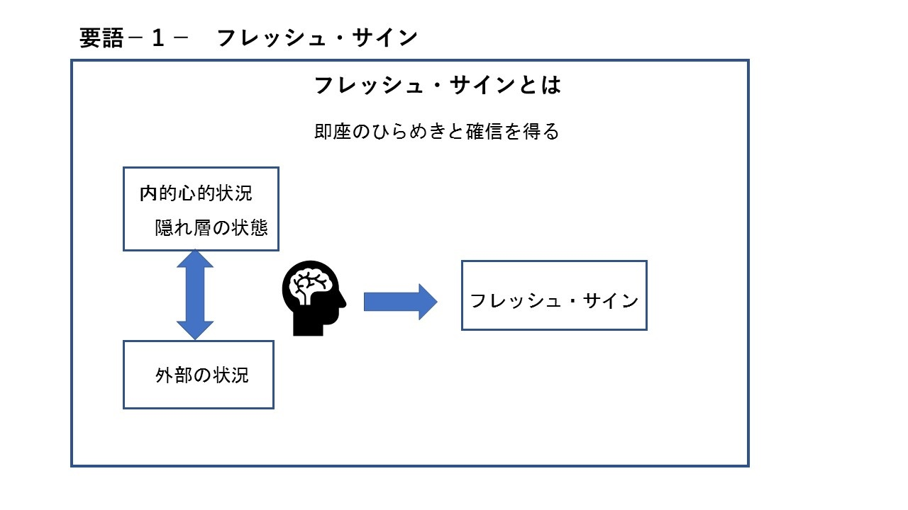
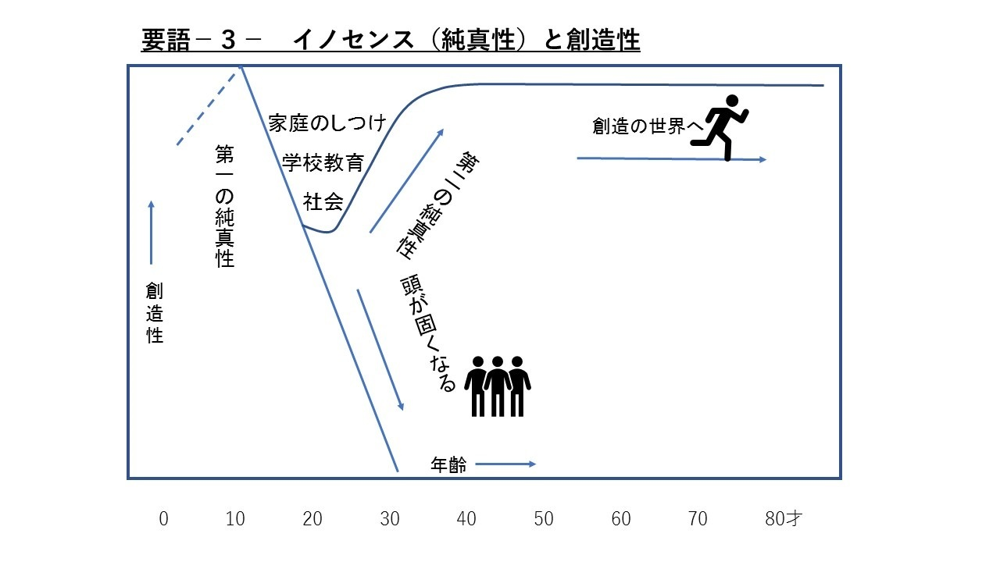
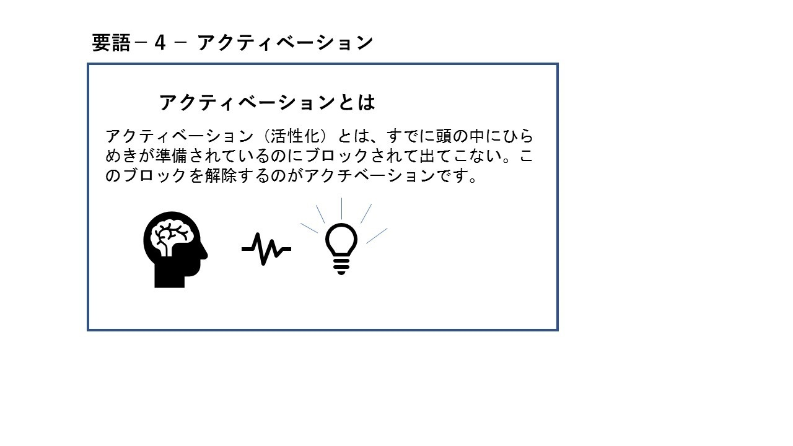
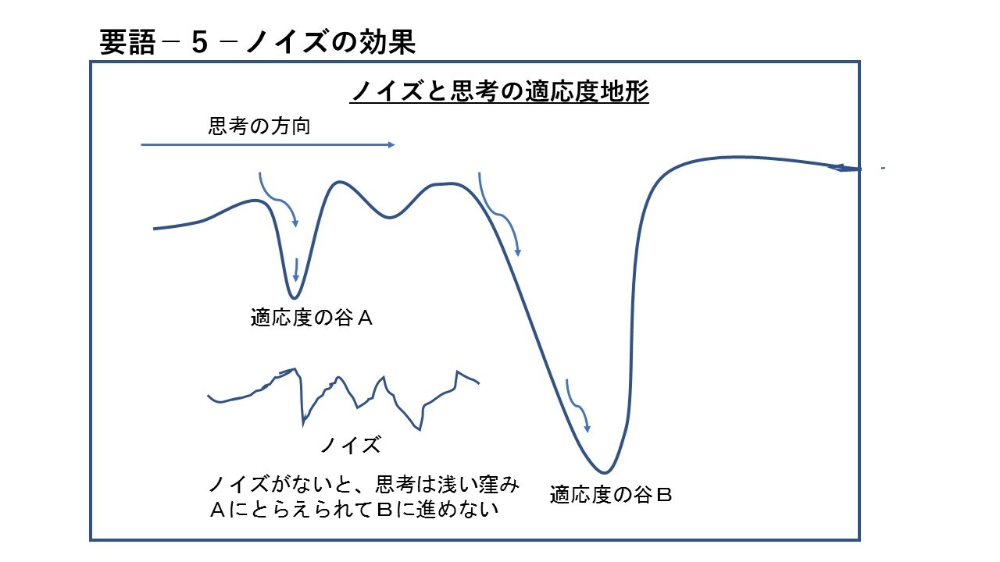

| ＡＩ時代に勝ち残る 感性的思考法 | |
| 宮越幸一 | |
| (2017) | |
ＡＩ時代に勝ち残る 感性的思考法
宮越幸一
はじめに
大手金融機関が大幅な人員削減に動き出すと報じられています。それは人工知能 ＡＩ による大きな経営環境の変革が原因であるといいます。とうとう来たか、というのが人々の声です。近年、ＡＩ が急速に進歩し、人間が行う仕事の多くが ＡＩ に置き換え可能になってきました。人手不足の分野では、 ＡＩ ロボットを採用するところが増えてきました。金融機関では、 ＡＴＭ の利用者が増えた結果、窓口を利用する人が激減しています。そのため支店の統廃合も進んでいます。金融取引の多くも、 ＡＩ の仕事になってきました。つまり、金融業務の多くが ＡＩ に置き変わってきたということです。
このリストラは、端緒に過ぎません。これからさらに多くのビジネスの分野でこれまで人間がやってきた仕事が ＡＩ に取って代わられる事態となるでしょう。従来もコンピューターが人間の仕事を奪うということが危惧されていました。最初は発券業務など単純な仕事でしたが、コンピューターの進歩で、人間の知的仕事の一部も置き換えが進んできています。 ＡＩ の登場は、さらに衝撃的で、人間の事務的仕事は知的仕事も含めて、その多くがＡＩ に取って代わられてしまうといいます。
これまでも様々な分野で機械化によって人間の仕事がなくなるということがありました。人間は一次産業から二次産業へ、さらに流通やサービスという三次産業へと押し出されてきました。今回の ＡＩ リストラでは、もう逃げ場はないように見えます。
将棋の対局を見ても ＡＩ は、どんどん賢くなる、だから、やがてどんな分野でも人間は太刀打ちできなくなる。「人間のやる仕事なんてなくなっちゃうんだよ。」こんな悲観的な声が聞こえてきます。しかし、 ＡＩ が進歩しても人間の感性、思考など創造性にかかわる分野では人間の優位は変わりません。だからこれからの ＡＩリストラ時代を勝ち残るのは、感性的思考法を身に付けたものになります。
もう感性的思考法は天才・偉人の考え方だなんて言っていられません。本書は、感性的思考法とは何か、これを促進するにはどうしたらよいかなどを事例とともに解説していきます。
序章
ひらめきなどの感性的思考法のことを話すと、「ああ、それは、天才の思考法でしょう」という答えが返ってきます。それは、アルバート・アインシュタインが感性的思考の達人であったことが知られているからでしょう。さらに、実際に、ビジネスや発明、或いは創作などで成功した人に、感性的思考法を採用している人が多いことが知られています。
一人ひとりの個性と感性が重視される時代になり、私達それぞれが、何をどう考えるかという思考法が 重要になってきました。
思考法には、大別して、二つあります。一つは、前例やデータをもとに思考する科学的合理的な思考法 です。もう一つは、感覚や感性をもとに思考するという感性的思考法です。この中で科学的合理的な思考法は、学校で教育される教科書的存在となり、私達一般の思考方法になりました。今日の科学文明は、この科学的合理的な思考法でつくられてきたものです。
これに対して、感性的思考法というのは、データではなく、自分が感じたことやイメージを基にして考えを進めるという方法です。感性的思考では、その人の直感、予感などの能力を活用します。世の成功者といわれる人たちの多くがこの感性的思考法を採用していると言われます。
感性的思考の達人を一人挙げるならば、前述のアルバート・アインシュタインということになるでしょう。ところが、この思考法は、成功した者自身が、その道筋を他人に説明できないのが難です。だから、感性型思考法がどういうものかを定義すること自体が困難なのです。そのため、私達は、この思考法で成功した人たちを天才だとか偉人だと考え、感性的思考は一部の天才偉人のものであり、普通人には無理だと諦めてしまっています。
ところが今日、難問を解決したり、イノベーションを起こしたりすることが求められ、前例がない全く新しいアイデアが必要になってきました。そこで、一部の天才のものであると考えられていたひらめきなどの感性的思考法が見直されています。
０から１を生みだすような思考はどうしたら生み出せるのか？
思いのままに夢実現のアイデアが生れ、イノベーションで豊かで便利な世の中になっていく、と期待されたのが科学的思考法を発展させた新しい創造的思考法（ＣＴ）でした。
しかし、普及して何十年もたつのに一向に、思考法で画期的成果が誕生したという事例に出会うことが できません。明らかになってきたのは、どんな科学的思考法もそれだけで現代社会が真に求めている革新的アイデアは、生れないということです。
それは、科学的思考法は、０から考えることはできない、つまり前例とかデータがないとスタートでき ないからです。しかし、これまでも革新的なアイデアというものは生れたではないか、それによってイノベーションが起こり世の中が進歩し、今日の文明が築かれてきたのだ、という反論があるでしょう。 しかし、それは偶然や試行錯誤などの発見に頼るものでした。その発見を基にして、今日の科学文明が築かれてきたのです。それは最近のノーベル賞受賞者の会見によくあらわれています。多くが偶然の幸運の出来事に恵まれた「発見」がもとになって研究がスタートしたことを語っています。
ところが、現代は、この従来型の偶然と思考錯誤に頼ることでは間に合わない事態になっています。科学技術だけではなく、社会、経済などのあらゆる分野で新たな発見が効率的に行われ、新しい発想が得られることが求められているからです。
ここでゼロから考えるとはどういう意味でしょうか。私達は、何か問題があったとき、研究開発を行いますが、資金と人数をかければ答えが出るはずだと考えます。しかし、世の中には、どんなに資金と人数をそろえても答えが出ない問題があるのです。それは、既存のデータが全く役に立たない時です。つまり、データがゼロから研究開発をスタートしなければならない。その時、資金をいくらかけても、人数をいくらそろえても求める答えは得られないのです。
このような事態を解消するには、データがゼロからスタートして答えを出すことが必要になるのです。それがゼロから一を得るという意味なのです。
では０から考えることを可能にするものは何かというと、結局、自分の感性と感覚を基にせざるを得ないのではないかと考えられます。それは、あの野生の世界で、自分の感覚で見付けた動物の痕跡であるフレッシュ・サインで獲物を追いかけていた、狩猟民の感性の知に戻ることです。それは、思考の原点とも言える感性的思考法なのです。
そこで、これを確かめるために、様々な分野で革新的成功を収めた人達の事例を集めて検証することにしました。その調査と分析をすすめるほどに、驚くべき事実と、そこにある未知の力を発見することができました。そこで得たのが、五つのキーワードというべきものでした。それらは、イノセンス、アクティベーション、デディケーシュン、ノイズ、フレッシュ・サインの五つです。
この２１世紀は、感性的思考法を促進することが絶対に必要になる、それが私達が勝ち残るのに欠かせないことだと知ったのです。
第一章 感性的思考法とは何か
「幸運の女神には前髪しかない」
このことわざは、私が駆け出しの研究者時代に、上司から小言代わりに聞いた言葉でした。その後知ったのは、これは天才芸術家レオナルド・ダ・ヴィンチの言葉だと言うことです。
『レオナルド・ダ・ヴィンチの手記』岩波文庫より
このことわざは、幸運の女神は前髪だけで後ろ頭は禿げている、だからチャンスがやって来たら逃さず前髪をつかめ、という意味なのだそうです。しかし、いくらこのことわざを知っていても、我々はチャンスを逃してばかりいるものです。あれがチャンスだったんだと気が付いた時には、もう手遅れだったということは、誰も経験したことがあるのではないでしょうか。なんであのチャンスを逃してしまったんだろう。あの時ああしておけばよかったのに。
いくら悔やんでも、後の祭り、気がついた時にはチャンスはどこかに行ってしまっています。どうして人はこうもチャンスを掴みそこなうのでしょうか？
実は、私にも、チャンスを掴みそこなった苦い経験が沢山ありました。
チャンスとは何か、どうしたらつかめるのかは一つの大きなテーマです。確かに、ことわざにあるとおり、チャンスは通り過ぎると後からは掴めないものです。特にビジネスにおいては、チャンスは奪い合いです。ちょっとでも遅れると他の誰かに取られてしまいます。発明や発見もまさに早い者勝ちです。
では、チャンスだと思ったらすぐに掴めばいいのかと言うと、そうとばかりとは言えません。早とちりで痛い目に会うことも度々です。では、チャンスだと気が付いたら慎重に検討すればいいかと言うと、そうでもありません。検討している間に、誰か他人に奪われたり、チャンスそのものが無くなってしまったりします。チャンスを掴むコツは何なのでしょうか。
どうもその答えは、レオナルド・ダ・ヴィンチが述べたという「女神の前髪」にありそうです。この「前髪」とは一体何かを解き明かすことがチャンスを掴むコツに繋がるのではないでしょうか。
チャンスを逃すパターンは三つ
チャンスを掴めなかった例を調べると、次の三つのパターンがあることが分かります。
１チャンスに気がつかない
２チャンスに気がついても確信できず行動に移れない
３チャンスにあわてて飛びついてドロナワ式の失敗をする
いずれにしても、まずチャンスに気が付くことが第一です。
幸運の女神様は、とても気まぐれです。いつ、どこで、どんなチャンスに、どうやって、出会うか、わかりません。だからこれがチャンスだと気が付いてから準備するのでは間に合わないことがあります。この、全く気まぐれに訪れるチャンスに対して、常日頃備えているという分けにもいきません。ビジネスの機会発見の事例を見ると、この困難さがよくわかります。
科学的なマーケティング手法に熟達していればビジネスの機会発見は可能だろうと考えがちです。しかし、小さな改良の機会はいざ知らず、大きな機会発見は困難なのです。ましてイノベーションに繋がるような、革新的で大きな機会発見となると、マーケティング手法に頼ると、逆にそれから遠ざかってしまうことがあるのです。
米国の著名な経営学者でイノベーション研究の権威クリステンセンは、このことを次のように述べています。
「...(科学的マーケティング)は、既存市場の持続的改良の軌跡上で見捨てられていた機会を発掘するのには役立ったが、直観的な観察によって得られた洞察から何かを引き出すことはできなかった」
参考 クレイトン・クリステンセン著 マイケル・レイナー著 櫻井祐子訳 翔泳社 『イノベーションの解』2004年１月25
日 ｐ100
-101
この「何か」とは、イノベーションの足がかりのことでしょう。いかに優れたマーケティング手法といえども、データが揃わなければ何の役に立ちません。ではどうしたらいいのかとなると、結局、データが十分揃う前に、「直観的な観察によって得られた洞察」、つまり感性で何かを引き出す以外はないのです。それはデータの分析に基づく「科学の知」ではなく、感性でとらえる「感性の知」なのです。
チャンスをとらえる感性的思考法
感性的思考法というのは、データでなく、自分が感じたことを基にして考えを進めるという方法です。自分が感じたことを基にして考えるということから、個性的思考法とも言えるでしょう。つまり、感性的思考法は、自己に最適化した答えが得られるものなのです。
ここで、感性的思考法の例を考えてみましょう。ニュートンは、りんごが落ちるのを見て万有引力を発見したといわれます。では、一万人の人を集めてりんごを落としてみせたらどうなるでしょう。その中に万有引力に気が付く人はだれもいなかったのではないでしょうか。つまり、この思考ができる人はニュートンだけ、オンリーワンだったでしょう。
松下幸之助が、場末の町で他人の家の水道水を飲んでいる人を見かけた。それを見て、世に有名な「水道哲学」という経営哲学を思考しました。やはり一万人の人に同様な水道水を飲む人を見せたら経営哲学を思考する人がいたでしょうか。否でしょう。これは、松下幸之助onlyoneのだったでしょう。
このように感性的な思考法で得られる結果は、その人独自のものなのです。同じ光景を見ても人によって感じるところが異なるのです。それは、その人の内的な心の状態（無意識）で左右されるからなのです。このことは感性的思考法が個性的思考であるという意味なのです。
感性的思考法では、その人の直感、予感などの能力を活用します。この思考法は、成功した者自身が、その道筋を説明できません。ですから、感性型思考法がどういうものか定義するのが困難で、これを他人に伝授することも困難です。だから私達は、この思考法で成功した人たちを天才だとか偉人だと考えてしまいます。普通人には感性的思考法は無理だと諦めているのです。
感性的思考法の代表を１人挙げるとするなら、それは、アルパート・アインシュタインでしょう。このような感性型アプローチの達人は、非言語的なイメージによって多様な情報を関連づけるという不思議な能力があると言います。さらに、個々の情報間に、通常ではとらえられない関連を見出すような特殊な能力が発揮されることも多いと言います。
成功した発明家や経営者には感性的思考法を採用している人が多いのも事実です。例えば、青色発光ダイオードの発明でノーベル賞をもらった中村修二がそうです。ホンダの創業者社長の本田宗一郎の伝記を見ると彼が感性的思考法を採用していたことがよくわかります。ソニーの社長の井深大の思考も感性型であったことがその伝記から伺えます。偉大な発明家や経営者、クリエーターなどには感性型思考法の人が数多く見られます。なぜ彼らが感性型の思考法を採用していたのか。それは前例がないような全く新しいアイデアが要求されていたからでしょう。前例とかデータがない問題の解決には、感性型の思考が必要になります。それは、あらかじめのデータがないことに対して、自分が感覚したことを基にして考えるという思考法だからです。感性的思考法では、感性を研ぎ澄ますことで、全く新しいアイデアを生み出すことが可能なのです。
想像もつかないことを考える
全く新しいアイデアや難問の答えは、どこを探したらいいのでしょうか。それは現状からは「想像もつかない処」です。想像もつかないということは、考えることができないという意味になります。考えることができないことを「考える」なんて所詮無理なことです。現代の多くの難問の答えはそんな「考える」ことができない処にあるのです。
私達が難問を棚上げしている理由は、「いずれ時がくれば解決できるだろう」「科学が発達すれば解決できるだろう」「何かの幸運で解決できるだろう」などといった未来に対する希望的な考えがあるからです。
この棚上げは、私達の個人的問題から、国家的問題、国際的問題まで多種多様にあります。核のゴミの捨て場がないままに原発を運転し続けているなど、最たる問題棚上げです。
国際的な棚上げもあります。環境破壊問題、地球温暖化問題など解決策がないままに各地で開発がどんどん進められています。格差拡大が指摘されながら資本主義の問題解決も棚上げ状態です。
このように問題棚上げが多くなっているのは、私達が頼りにしている科学的思考法に限界があるからです。
これまでの科学的思考法は、前例やデータを集めてこれを基にして考えるものでした。しかし、今日求められている難問解決のためには、前例もデータもない、つまり０から１を生みだすような全く新しいアイデアが求められるのです。
この０から１を生みだすのに必要なものは何かというと、それは個人の「感覚」だといえます。
私達の遠い祖先のことを考えてみてください。彼らは、原始時代の混沌の中で、勝ち残り、何もないところから文明を築いてきたのです。彼らは０から１を生みだすことができたのです。それは思考の原点というべき「野生の思考」です。この思考は、「感性的思考」様式です。それは、直感、予感などの能力を活用するものです。
世界を変えてきたのは感性的思考
歴史に名を残す偉大な業績をあげた人達の思考法はどんなだったのか、興味がつきません。さぞかし科学的・合理的思考を極めたものと考えがちですが、その伝記や逸話からは、意外な事実を知ることができます。
彼らは、身体感覚で何かを発見し、その発見に基づいて思考するという感性的思考の達人でもあったのです。世界の見え方を変え、私達の世界観を一変するほどの業績をあげた偉人達の例でその感性のことを考えてみましょう。
アイザック・ニュートン
ニュートンが17
世紀に著した『プリンキピア』（正称は「自然哲学の数学的諸原理」）は、運動の法則や万有引力を基に自然界の仕組みを明らかにし、近代科学の出発点となった名著です。ニュートンには、多くの逸話がありますが、中でも有名なのが、「りんごが落ちるのを見て万有引力を発見した。」です。
万有引力の発見とは、「地上において物体が地球に引き寄せられるだけではなく、この宇宙においてはどこでも全ての物体は互いに引き寄せる作用（引力）を及ぼしあっている」とする考え方のことです。
「りんごが落ちるのを見て万有引力を発見した。」は、ニュートン自身の主張や伝説に基づいたものだと言われます。しかし、りんごの落下と万有引力発見との関係には、しっかりした文書記録や物証があるわけではないので真偽不明だとする人達がいます。彼らは、ニュートン自身の主張や伝説は脇に置いて、万有引力の法則を思いついたのは当時の自然哲学のどんな説の影響を受けたのかを詮索しています。
もし、ニュートンの主張や伝説のように「リンゴの木からリンゴが落ちるのを見て」万有引力を思考したものなら、それは感性的思考だといえます。五感体感での観察をもとに、直感、予感などの能力を活用する方法です。
一方、先哲の説にヒントを得たものなら、それは、一般化や改良を目指した合理的思考だといえます。ここでは、二つの考え方を併記するに留めます。
前者のりんご落下説は、もう伝説として独り歩きしているようです。日本の小石川植物園には、なんと「ニュートンのりんごの木」が植えられているというのです。これは、一九六四年、万有引力発見三百年の記念行事をきっかけにイギリスから苗木を譲り受け、園内に植えたものだそうです。このりんごの木は、接ぎ木繁殖されたもので、英国の国立物理学研究所をはじめ、世界各地に贈られ、科学に関係ある場所に記念樹として植えられているのだということです。ニュートンのりんごは、我が国の一般的なりんごと違い、熟すると比較的短い期間内に次々と落果する品種で、「風もないのに樹から次々に落ちる」光景が観察されます。ニュートンは、この落下をみていたのでしょう。
「りんご落下説」をとる伝記作家が援用するのは、同時代の作家ウィリアム・ストゥークリの書いた Memoirs of Sir Isaac Newton'sLifeで、一七二六年四月十五日に彼が実際にニュートンと会話した、とする部分です。その中で、ニュートンはリンゴの落下のことを語ったとされています。
今日の脳科学によれば、「ひらめき」は、無意識の内に進む脳内の情報の組み合わせなのであり、頭の中にないものが出てくる分けではないと分かっています。全く新しい引力に関する最初の発想は、いかに天才ニュートンといえども頭脳だけでは生れるはずがないのです。思考オンリーでできることは、既存の情報の組み合わせ、一般化・改良・応用などです。今日の創造的思考法でも、本質的に新しいシステムの開拓(自然科学の新法則の発見)は、対象外になっています。
既存の情報だけでは、全く新しい思考は困難なのですが、もし何かの発見が加われば、全く新しい思考の可能性が出てきます。外界で起こる現象を感性で発見したのか、何かの説を知識として学んだのかのどちらにしても、ニュートンは日常に起きる現象に関心を持ち、その感性でこれをとらえ、そこから理論への着想を得ていたのは間違いないことでしょう。
アルベルト・アインシュタイン
ベルンの生活で、アインシュタインはある不思議な点に気がつきました。これまでも何度とバスに乗車中に見た光景だったのですが、乗車中に通過するベルンの時計台（ツィートグロッケ＝トゥルム）を見たとき、時計台の針が動いていないように見えたのです。
これが、彼が「特殊相対性理論」を着想したきっかけでした。無名の特許局員が提唱した「特殊相対性理論」は当初、周囲の理解を得られませんでしたが、ドイツの物理学者で「量子論の父」とも呼ばれているマックス・プランクの支持を得たことによって、次第に物理学界に受け入れられるようになりました。アインシュタインも、その感性で日常に起きる現象をとらえ、そこから理論への着想を得ていたのです。
チャールス・ダーウィン
ダーウィンの人生を決定づけたのは、22
歳の時に英国軍艦ビーグル号に乗船して世界周航の機会を得たことです。航海は南米、ガラパゴス諸島、オーストラリア、モーリシャス群島、アフリカなどを５年かけて巡るものでした。ビーグル号の目的は、イギリスの植民地政策のための調査と測量でしたが、この航海はダーウィンにとっては発見の連続でした。各地の地層と生物を観察し、推理し、これを記録していきました。
ダーウィンの日記と手紙には多くの発見が記録されています。
「自分が見たものすべてを注意深く、生き生きと描写することにたいへん苦労した。私の日記はまた、部分的には家への手紙として役立った。一部分、一部分が、機会あるごとにイギリスへ送られた」
「私は考えたり読んだりしたすべてのことを、私が見たものや見そうに思われたものと、直接的に関係づけた。こうした心の習慣は、舵海の五年間もちつづけられた。私は、なんであれ私が科学上でおこなったことを可能にしたのは、たしかにこの鍛練であったと感じている」参考 『ダーウィン自伝』ｐ63
ダーウィンの手紙はイギリスで評判になり、出港前無名の青年が帰国時には博物学者として有名になっていたのです。帰国後は、航海記を編集することに追われ、日記を読み返す中でアイデアが練られていったのです。
ダーウィンが『種の起源』を著したのはそれから20
年を経た後でした。生情報の観察と日記、読み返しと関連付け、こうしたことが進化論のアイデアを育んでいったのです。
参考 『ダーウィン自伝』八杉龍一訳、江上生子訳 筑摩書房 １９７２年８月２５日
生物は徐々に変化し、その変化のうち環境に適したものが選択される。つまり自然が生物を選び出すのだ。彼は「自然選択」を進化のフィルターと考えたのです。ダーウィンは、常に自分のメモを読み返し、そこに新しい意味を見いだしていました。彼のアイデアは、そこから生み出されていたのです。注目すべきはダーウィンの文章化の努力です。
日記はダーウィンにとって特別な意味があったことがうかがわれます。「絵を描くことができなかった」「航海中につくった大部の原稿は、ほとんど役に立たないものであった」と述懐しているように、彼は絵が得手ではなかったようです。自伝ｐ63
そこで彼は、日記に注力し、見たものすべてを注意深く、生き生きと描写することに努力したといいます。日記は、家への手紙としても役立ち、一部分、一部分が、機会あるごとにイギリスへ送られたのです。彼の日々の発見を文章化する努力が実を結び、表現者として評判になり、また後に「ひらめき」の源泉にもなったのです。
ダーウィンの思考は、恵まれた感性と幸運、そして、数々の感性的思考の結晶だといえます。
未来を引き出すのは、直観的な観察と洞察(ひらめき)で得られる感性の知なのです。私達にチャンスをもたらすのはこのひらめきで得られる感性の知なのです。
科学の知、すなわち科学的マーケティング手法でチャンスを捉えるにはデータが揃うことが必要です。ところがデータがそろうまで待っていては、チャンスは誰か他人にとられてしまっているでしょう。
これに対して、感性的思考は、まだデータがなく分析できないチャンスを、いち早く捉えることが可能なのです。
しかし、科学的思考法に慣れた私達現代人は、対局にある感性的思考法から遠ざかってしまっています。だから感覚的思考で得られるチャンスを掴めないのです。チャンスを逃さないためには、まず、感性的思考のことを理解し、これをとらえる感性を磨く必要があります。いや感性を磨くというより、感性を取り戻すというのが適当かもしれません。なぜなら、感性的思考は、本来、人類が古くから生き残りのために使ってきたものだからです。
実際、成功者達の多くは感性の知を得てチャンスを掴んだ人達です。その逸話は、私達にヒントを与えてくれます。
本書では、随所にそうした事例をまじえながら、感性の知とは何かを解き明かし、その原理、さらに感性の知に対する感性を甦らせる方法を示していきます。
感性的思考が生み出すフレッシュ・サイン
夢実現、どんな難問も解決、思い通りの人生、これは皆が望むところですが、実現できる人はほんの一握りです。だから私達は、そうした人を運がいいとか天才だとか考えてきました。
しかし、大部分の人が思い通りにならないのには理由があったのです。それは私達が学校教育で身につけてきた科学的合理的な思考法が通用しないからなのです。そこで、これを補うために様々な思考の技術も開発されてきました。しかし、事態は一向に好転しません。
実は、本当に必要なのは、正反対の感性的な思考法で生み出される感性の知ともいうべきものだからです。この感性の知を獲得できる人は、天才だ、偉人だと考えられ、感性的思考とは天才の考え方だと思っている人が多いようです。
感性的な思考によれば、必要なアイデアが自然に沸いてくるようになります。しかも、そのアイデアは、自分にとって最適なものです。
一方、科学的合理的な思考法の場合は、チャンスに気がつかなかったり、チャンスを掴むのに遅れたり、自分にとって最適なアイデアが得られないということが起こりがちです。
本書は、従来天才の考え方だと思われてきた感性的思考法を解明し、実は、誰でもこれを身につけることができることを明らかにします。感性的思考法は一部の天才だけの物ではないのです。本来、あなたにもその才能が備わっているのです。
・感性的思考法―アイデアが自然に出てくる思考法。
アイデアがどんどん湧いてくる。
自分に最適な発想が、得られる。
・思考の技術―「誰でもアイデアを量産できる」
意図的にアイデアをひねり出す
自分に最適とは限らない。
感性的思考で得られる知とは、直接的な知覚で得られる何かです。誰かの意見や解説ではない、情報でもない、蓄えた知識でもない、自分自身の身体感覚で直接獲得する知です。それは、まだ混沌とした中から直接知覚するものです。科学は複雑で混沌としているものは細分化することで分析して知覚します。これに対して、混沌としたものを全体として扱い、自分の身体感覚でそこから何かを感じとることができる、それが感性的思考法であり、得られるのが感性の知です。次の章では科学的思考の知と感性的思考の知との違いを紹介しましょう。
第二章 科学的思考の知と感性的思考の知の違い
フレッシュ・サインは太古の私達の祖先が身に付けた生き残りの野生の力です。科学文明の時代になった現代でも、このフレッシュ・サインを必要とする人々がいます。それは、自己の感性や感覚を大切にする芸術家やクリエーターと呼ばれる人々です。
建築家でデザイナーの黒川雅之は、『「知る」と「感じる」を分離しないで同じ感覚で捉えることで身体感覚という野生の感覚を逃すことが無くなるのである』と述べています。この言葉は感性の知の本質に迫るものとして注目されます。
参考 黒川雅之著『デザイン曼荼羅』求龍堂 (2004／06
)
これはどういうことかというと、感じることで即知るということです。これが感性の知の特徴で、現代人の知の在り方と大きく異なっています。私達が物事を知るのは、感じたあとで、調査したり考えたりしてデータを得て、それから知る、というパターンです。つまり感じると知ることが離れているのです。
こんな風に感じるのと知ることとが分離していては、太古の人々は獲物を捕えたり危険を避けたりすることができず、生き残ることが困難でした。彼らには、フレッシュ・サインで即座の「ひらめき」を得て獲物をとらえたり、危険を避けたりするという、素早い判断が必要だったのです。
もし、あなたが山道で細長いヒモみたいな物を見つけたらどうしますか。咄嗟にはっと飛び退くことがあるのではないでしょうか。ヒモなのか、ヘビなのか判別される前に行動することが必要な時もあるのです。これが危険を避けるための咄嗟の判断で、太古の昔の私達の祖先が身につけた能力です。この能力は、現代に生きる私達にも伝わっているはずです。
フレッシュ・サインはこんなふうに即座の判断をもたらします。直感的な思考とも呼ばれるこの方法は、早とちりで間違うこともありますが、危険を避けたり、チャンスを掴んだりするのに欠かすことができません。
一方、私達現代人が重用してきた考え方は、筋道を立てて考える方法です。この方法には正確さを重視する科学的な思考法があります。
私達は本来、この二つの考え方を併せて持っています。一つは、フレッシュ・サインを知覚し即座の「ひらめき」を得るという直感的な方法（早い思考システム）です。もう一つが、筋道を立て論理に基づいて考え正確さを求める（遅い思考システム）です。この中で、私達は、筋道を立てて考える遅い思考システムを磨き上げ今日の科学文明を築いてきたわけです。その一方で、直感的な方法（早い思考システム）は、科学技術が発達し豊で便利で安心な世の中になったことで、活用する場面が少なくなりました。それとともに、生情報のフレッシュ・サインを知覚して活用する能力も劣化してしまっています。
他方で、筋道を立てて考える遅い思考システムは、ますます磨きがかかり、様々な科学的思考法も開発されています。ところが、現代は、もはやこうした科学的思考法だけでは解決できない難問が積み重なっています。
難問解決ができずに積み上がる理由はこれ
いま求められるのが、既存のデータやその延長線上にない全く新しい問題解決のアイデアです。ところが、科学的思考法の難点は、データが揃わない状態ではスタートできないことです。そのため、難問山積の現代は一向に好転せず、むしろ事態は深刻化しており、未来は混沌（カオス）へ向かっている感があります。
データがない中で、そんな新しいアイデアを得る可能性があるのが、感性の知です。それは何かのきっかけ（フレッシュ・サイン）で直感の「ひらめき」を得ることです。
現代社会の解決困難な難問を掲げてみましょう
まず、私達が拠り所としてきた科学技術です。このところその科学技術は諸刃の刃であることがはっきりしてきました。その負の側面が如実に現れたのが福島の原発事故です。これは、科学技術神話の崩壊の象徴です。科学技術の負の側面は数十年前から公害や、生命倫理の問題などで目立ってはいましたが、まだ、そうした問題もやがて科学技術が解決してくれるという希望的考え方がありました。しかし、今回の原発事故は、その楽観的な考え方にとどめを刺した感があります。
考えてみると、私達の周りには解決できそうにない難問が積み重なっています。そうした問題は科学技術だけでは解決できないことがはっきりしてきました。頼りにしてきた科学技術が限界を見せてきたのです。私達の未来はどうなるのか、混沌としてきたということができます。この混沌とした現代が求めているのは全く新しいアイデアです。これを得るために科学的思考法だけでは役に立ちません。
例えば、科学的思考法ではPDCAに象徴されるように、まず計画ｐ（Plan）を立てなければなりません。次に実行（Do）、評価（Check）、改善（Act）の4段階を繰り返します。このサイクルを回すことで改善を進めるのです。このやり方は最初にデータがそろってプランが立たなければ始められません。
ところが、全く新しい思考のためには既存のデータは役に立ちません。データがないところから全く新しい思考をする、それを可能とするのが、データが不足していても働く、ひらめきや直感という思考法です。
そのため、現代は様々な分野でひらめきや直感が求められています。再び、私達の太古の祖先が身につけた野生の能力が求められているのです。これは、科学知に対する感性の知です。カオスの中から新しいものを生み出してきた感性の知が、難問を解決し私達の未来を開く鍵だと言うことができましょう。
二つの方法で遠い祖先の感性の知が分かる
感性の知、それは私達の遠い祖先の生き残りの知恵でしたから、潜在的には私達にも備わっているはずです。しかし、科学的な知の万能時代となって片隅に追いやられた感性の知は、今の私達には、どんなものだったのかなかなか思い出せません。
その感性の知が、再び求められる時代となって、その知を明らかにしようとする人々が研究を進めています。遠い昔のことを知るのは容易なことではないと思われますが、意外に現代に生きている感性の知があります。
一つは、まだ科学文明に侵されていない未開部族の存在です。ここは民俗学者や人類学者の出番です。その中に感性の知を現代社会に紹介して大きな反響を与えた人物が、フランスの社会人類学者レヴィ＝ストロースです。その著書『野生の思考』は、感性の知がどういうものかを知る大きな手がかりになります。レヴィ＝ストロースはこの書で、これまで非科学的と卑下されてきた未開部族に対する我々の考え方を一変させました。従来の西洋中心主義的考え方では、「野蛮（混沌）」から洗練された秩序が形作られたとされてきました。これに対して、レヴィ＝ストロースは、混沌の象徴と結びつけられてきた「未開社会」においても十分の秩序・構造が見いだせると主張して、西洋中心主義的考え方に一石を投じたのです。
その中の一部を引用すると、
「（野生の思考とは）野蛮人の思考でもなければ未開人類もしくは原始人類の思考でもない。効率を昂めるために栽培種化されたり家畜化されたりした思考とは異なる、野生状態の思考である」
参考 クロード・レヴィ=ストロース著 大橋 保夫訳『野生の思考』みすず書房 1976／３／30
ここで、レヴィ＝ストロースが野生の思考と対比して言っている「効率を昂めるために栽培種化されたり家畜化されたりした思考」の代表的存在が、科学的思考です。
私達現代人は、科学的思考法を洗練させることで文明を築き発展させ、それを誇りとしてきました。ところが、これが栽培種化とか家畜化思考と表現されていることに、多くの読者は衝撃を受けました。栽培種化とは、植物の品種改良のことです。栽培種は、見栄え、味、食感、豊かな収穫など、人間にとって都合良く改良されたものです。ところが、栽培種には、生物としての弱点が生まれ、環境の変化などへの適応力が弱くなることがあります。思考も同じでしょう。効率を昂めるために栽培種化された科学的思考は、適応力に限界が出てきているのです。難問山積、問題積み残しの現状がそれを反映しているように考えられます。
思考の栽培種化の具体例を一つ掲げてみましょう。代表例として、ビジネス界に広く用いられている様々な科学的問題解決法があげられます。その問題点は、それぞれの適用範囲に限りがあることで、適用を誤ると答えが出ないばかりか、時間と労力を浪費するばかりになりかねません。
ではもう一つの家畜化思考とはどういう意味でしょうか。
家畜も、野生動物を人間に役立つように飼い馴らし、品種改良してきた歴史があります。この意味では、栽培種化と家畜化とは同義の表現と言えるでしょう。しかし、家畜化には、科学の在り方についての批判的意味が含まれています。
人間は、自然界の動物を囲って家畜として搾取してきました。一方、近代科学のやり方もこれと同様で、自然を搾取の対象とみています。レヴィ＝ストロースが言う「家畜化」とはこのことです。
ここに、日本の思想家、人類学者の中沢新一の卓見があります。「自然をまるで家畜のように実験室やある体系の中に囲い込み、観察を行い、コントロールするやり方です。家畜型の科学は自然を管理しコントロールするなかで、それを自分たちに必要な資源を取り出すための対象としか見ないようになりました。その欲望は最終的に、生態圏の外にある原子核にまで手を伸ばすこととなりました。」
参考 中沢 新一著『野生の科学』 講談社 (２０１２／８／２)
世界規模の難問、資源枯渇、エネルギー危機、温暖化問題などは、この家畜型の科学と貪欲に利潤を追い求める産業界の結びつきの結果なのです。ですから、科学的な考え方では、こうした難問は解決できるはずがないのは道理です。
科学的思考法を拠り所としてきた我々にとって、象徴的出来事が、福島の「原発事故」でした。科学技術にたより、原発の安全を信じきっていた我々は、混乱しています。そこでいやおうなく実感させられたのは、科学的思考と科学技術にその生存をゆだねてきた我々自身のことです。私達は本来の野生の力を弱体化させ、思考力の劣化をまねいているのです。
振り返ってみると、この数十年来というもの、科学技術や科学的思考法は弱点をみせてきていました。しかし、我々の多くはその手直しで乗り切れるものと考えてきました。ところが、状況は厳しくなるばかりです。国内にも世界にも難問は増えるばかりであり、未来に対する悲観的な見方が広がっています。もう科学的思考の手直しだけではこの現状を脱却することはできそうにありません。
残された打開策は、「原点回帰」です。それは思考に野生を取り戻すこと、すなわち感性的思考を甦らせることです。
子供の思考から感性の知に迫る内外研究者達
もう一つの感性の知の手がかりになるのが、幼い子供の思考です。野生状態の思考を保持しているのは未開人だけではありません。まだ教育をうけていない幼い子供には、野生状態の思考があるはずです。生れたばかりの赤ちゃんは、まだ自分のことも周囲のことも何も知りません。何もかも新しい、見るもの、聞くもの、触れるもの、すべてが新しい体験です。つまり、赤ちゃんにとってはフレッシュ・サインの連続なのです。そのフレッシュ・サインを感じることで知るのです。それは直感的な早い思考様式で、自己というものを形成し、周囲を理解していきます。これこそ野生状態の思考といえます。
今日脳科学の世界で、赤ちゃんの脳の研究が盛んになり、赤ちゃんの思考様式が明らかになってきました。まだ文明に触れていない赤ちゃんは、太古の野生人と同じなのです。そのため内外の様々な分野の研究者が幼い子供の思考に様々な方法で迫ろうとしています。以下に代表的研究者を掲げてみました。
進化論者アシュレイ･モンターギュ
心理学者Ａ．Ｈ．マズロー
教育学者上野陽一
小児神経科医ピーター･ハッテンロッカー
心理学者・教育者アリソン・ゴプニック
彼らが、異口同音に語っているのは、幼い子供の創造性のことです。まだ教育やしつけを受けていないのに、彼らは生来の思考力と創造性を持っています。研究者の多くは、幼い子供は、創造性がその人生において最も高まっている時期だといっています。
進化論者アシュレイ･モンターギュ
彼は、子供の感受性、体系づける欲求、好奇心、創造性などその能力を賛美しています。
参考 アシュレイ･モンターギュ著 尾本恵市訳･越智 典子 (訳)『ネオテニー――新しい人間進化論』株式会社どうぶつ社一九八六年１１月１日
心理学者Ａ．Ｈ．マズロー
マズローは、子どもの研究の結果から、すべての人間がかつては自発的であり、今なお心の最も深層においてはそうなのだと説いています。
「・・・もし、どんな抑止力も働かないとしたら、全人類がこの特殊なタイプの創造性を発揮することも期待できるであろう」
参考 Ａ．Ｈ．マズロー 著 小口 忠彦 翻訳『人間性の心理学』産能大出版部; 改訂新版 (１９８７／３／１０)
上野陽一教育論と独創
「人間にはだれにも独創性がそなわっている。それと同時にその生長を妨げるような原因も沢山ある。つまり、独創性はずんずん伸びていく可能性をもっているのであるが、至るところに関所があってその通行を妨げているのである」
参考 上野陽一著『独創性とその技法（改訂版）』技報堂昭和 ４４年１月十五日
上野は人間の独創性が教育で抑えられていくことを述べています。
「生れてから幼稚園や小学校に入るころになると、生来の独創性がおおいに出てくるような態勢になる。しかし学校の教育が始まると同時に、独創力は押えつけられてしまう。それは就職という現実の必要に迫られて、型にはまった人間が養成されるからである。」ｐ77
教育がこのように生来の独創性を抑えるのは、与えられた問題、答えがある問題ばかりを解くように教育するからです。だから、どこに問題があるか分からない、答えが一つに決められないという実社会で遭遇する問題に無力な人間ができ上がってしまうのです。この独創がない人間とは、大脳新皮質ばかり使い、その抑圧で感性の知を退化させた人間でしょう。
小児神経科医ピーター･ハッテンロッカー
彼は、赤ちゃんの脳は、大人に優る大きなパワーを秘めていることを述べています。アメリカ、シカゴ大学名誉教授で小児神経科医のピーター･ハッテンロッカーは、これまでの常識を破る衝撃的な研究発表を行いました。
従来、私達人間の脳の潜在能力は、生れてから次第に発達し、25
歳前後にピークに達すると考えられてきました。つまり、幼児の脳の構造は、はじめは白紙のような単純な状態であり、成長するにつれて、だんだんと発達する(複雑に作られていく)と思われていたのです。ところが、彼の研究発表は、生後８か月頃から１歳前後の赤ちゃんの脳が、潜在的に大人に優る大きなパワーを秘めていることを教えてくれたのです。
脳のなかで神経細胞同士の情報伝達を担うシナプスは、生まれてから数か月の間に急激に増えていき、生後八か月から一歳頃までの間に早くも人生で最大のピークに達し、そのシナプス密度は何と成人の1.5倍に達することが分かりました。そのピークに達した後、今度はシナプス密度が一転減少していきます。
やっとよちよち歩きを始めた赤ん坊の時期に、脳の機能が最大になるという結果は、各方面に衝撃を与えました。
このハッテンロッカーの赤ちゃんの脳の発達の新発見は、脳科学の進歩に火を付けた感があり、幼児の脳の研究が世界的に盛んになっています。発表された論文に掲載された赤ちゃんの脳の発達グラフは、その後世界中で多くの文献に繰り返して引用されています。
参考 安川美杉 著『赤ちゃん成長の不思議な道のり』NHK出版2007年２月25
日
柔軟な赤ちゃん脳
８ヶ月～１歳くらいでシナプスが最大になるということは、それだけ神経細胞間の結びつきが増えて、脳の機能が高まっていることを示しています。ところがピークに達した後、一転してシナプスの密度が減少することについての有力な説は、赤ちゃん脳の柔軟性を示すものだと言うのです。シナプスの中には無効な結びつきも多くできており、それがなくなっていくのではないかと言う説です。つまり、一旦できた記憶の結びつきが変わっていくと言うことを意味しています。これは、生まれた直後の赤ちゃんの知覚能力がきわめて高く、かつ柔軟であることを示すものです。
大人の１．５倍もの膨大な脳力で、赤ちゃんは何をしているのか？
赤ちゃんにとっては、見るもの触るもの、すべてが新しい経験です。そんな何もないところから自分を作り上げる(自己形成）赤ちゃんや幼児の学習能力には目を見張るものがあります。大人の1.5倍もの膨大な脳力が、『自己形成』の過程で働いているのは確かでしょう。しかし、実際、雑多で膨大な情報からどうやって素早く正確に学んでいるのかとなると謎でした。
この謎に迫るのが、心理学者・教育者アリソン・ゴプニックAlison Gopnikらの研究です。Alison Gopnikらによって、赤ちゃんには統計パターンに基づいて学習する優れた能力が備わっていることが分かってきたといいます。
Alison Gopnikはその著で次のように述べています。
「統計パターンを見つけ出すことは、科学的発見に至るまでの第一歩だ。さらに驚くことに、子どもは(科学者のように)統計に基づいて周囲の世界に関する理論を組み立てる」
参考 『子どもの意外な"脳力"』Ａ.ゴプニック（カリフォルニア大学バークレー校) 日経サイエンス ２０１０年１０月号
参考 『哲学する赤ちゃん』Ａ.ゴプニック（カリフォルニア大学バークレー校) 亜紀書房２０１０年11
月
この統計パターンに基づいて学習する優れた能力こそ、先のモンターギュが予見した幼い子供が持つ「言葉にならない論理」の実体と考えられます。子供は、生まれながらにして統計学の才があり、まるで科学者のような方法で周囲の世界について学んでいるのでしょう。そして、周囲の世界に関する理論を組み立てながら自分自身を創造しているのです。
つまり私達大人は、幼いころは、統計学の才があり、白紙状態から自分を創り上げるという最高の創造的能力を発揮したことがあったのです。大人になった私達は、そのことを思い出せなくなっているだけなのです。しかしその能力は潜在的に働いているはずなのです。
例えば、初対面の人に会った時に感じる「第一印象」はあれこれ情報を集めて分析するより正しいことが多いものです。この能力は赤ちゃん時代の潜在脳力からくるものと言えましょう。この第一印象に従わずにその人と取引したり、交際したりした時に、何かわからない胸騒ぎがしたりすることがあるはずです。それは、虫の知らせとも呼ばれます。この虫の知らせに耳を傾けないとあとで後悔することになるかもしれません。虫の知らせが聞こえない人は、不運を嘆くことになるでしょう。
虫の知らせの正体は、潜在的に働いている赤ちゃん思考からの「声」なのではないでしょうか。それは、本能の告知とも言えます。論理も知らず、思考法も持たない野生の人間は、赤ちゃんと同じでしょう。私達の祖先はそんな状態から、今日の文化を作り上げたのです。この最も古い思考様式は赤ちゃん思考と類似していると言うことができます。
科学知識も合理的な考え方もなかった野生の思考がどんなものだか知る手がかりこそ、赤ちゃん思考の研究なのです。
Ａ．ゴプニック(カリフォルニア大学バークレー校)のその後
『子どもの意外な脳力』の著者のその後の報告を少し見てみましょう。
無知に見える赤ちゃんや幼児でも科学者の予想を上回る学習能力を持っていることが明らかになってきました。
彼女は「乳幼児はさながら人類における研究開発部門です」と述べています。彼女は幼児が遊んでいる時に、実際に行っている洗練された情報収集や意思決定について 研究しています。
彼女は言います。
「もし私達が この偏見のない学ぶことに貪欲な想像力、創造力にあふれ革新的な蝶々になりたいと思うなら少なくとも時々はもっと子供のように考えることを始めてみるべきかもしれません」
参考 Alison Gopnik
http:／／www.ted.com／talks／alison_gopnik_what_do_babies_think／transcript?language=ja 閲覧 ２０１５．１．３０ ＴＥＤ Transcript
野生の感性を取り戻すのに何が必要なのか
野生という言葉から私達が連想するのは、並はずれた「鋭いカン」と「強い生命力」でしょう。なぜ私達がこのような連想を持つのかを考えてみましょう。
一つは、我々が経験した野生の雑草とか野生動物のたくましさからの連想があります。雑草などいくら除いてもまた生えてきて、どんどん繁茂する凄い繁殖力があります。ハンティングを経験した人なら、野生動物の持つカンと俊敏さに驚かされたことでしょう。容易なことでは野生動物を捕えることはできません。
もう一つ私達がよく耳にするのが、飼育していた動物を野生に返すときのことです。一旦飼育して人手をかけた動物は、そのまま野生に返すとほとんど生息していけないといいます。新潟のトキなど、人工的飼育したものは、なかなか野生に返すことができません。自分で餌をとり、外敵から身を守り、繁殖することができないのです。トキ保護センターでは、飼育している鳥に野生を取り戻させるために、様々な工夫を凝らしているといいます。その効あってようやく、野生に放った鳥が繁殖する例が見られたといいます。世界各国でも、絶滅危惧種の動物を保護して飼育し繁殖させて、野生に返す試みがなされています。しかし、そのいずれでも野生に返すことに困難性があるということです。
飼育と野生の間にある難関を越えるのに必要な何かが「野生の力」を取り戻すのに必要なことなのです。
栽培種化または家畜化された「科学的思考」で飼育された現代人は、思考における野生「野生の思考力」をすっかり退化させてしまっています。その思考における野生の感性をいかにして取り戻すかが喫緊の課題となっています。
生命誌と思考
上野陽一の著書『独創性の開発とその技法』に掲げられた、「独創性が自然界において位置を示す表」は、思考を生命誌の中で俯瞰するものであり、改めて思考とは何かを考えさせられるものです。
参考 上野陽一著『独創性の開発とその技法（改訂版）』技報堂 昭和４４年１月15
日 ｐ28
～29
ここでこの表を掲げたのは、人間の特権であると考えてきた「知的仕事」が、 ＡＩ によって侵食される事態になってきたからです。いま、改めて「考える」とは何かをより深く考えることが必要だと思います。
表は、生物進化の歴史に思考を位置づけるもので、刺激に対して生物がどう反応してきたかの延長線上に思考があることがこの表からよくわかります。
表の概要を示してみましょう。
１植物の獲得した反応―屈性
屈性は、刺激に応じて植物体の一部が屈曲するという反応です。
２単細胞動植物の獲得した走性
単細胞動植物とは、バクテリヤ 鞭毛藻類 遊走子運動性精子などのことです。
走性は、一定の刺激に対して正または負の方向におこる移動運動です。
３下等動物 (昆虫等) ～
反射運動
本能運動
条件反応 (条件反射)
４高等動物 ～
学習 (おぼえる) Learning
５原始人 ～ 古代人
考える thinking
６古代人 ～ 近代人
論理的思考（演繹的思考３５０BC 帰納的思考１６２６AD）
７近代人 ～ 現代人
Ａ 論理的考え方 logical thinking
Ｂ 独創的な考えかたCreative thinking(C.T.)
―――――――――――――――――――――
（以下は筆者）
危険一杯の環境の中、狩猟で生きていた原始人は、何かの兆しを感知して、即座の判断をする能力を獲得しました。この能力は、現代の狩猟者に引き継がれています。狩猟者の用語のフレッシュ・サインがそれに当たります。
いろいろな意味で困難な時代になると予想されている21
世紀には、科学／技術の役割とその正しい選択がますます重要になってきます。すでに環境問題、資源エネルギー問題、人口・食料問題、生命倫理、高齢化社会の諸問題など従来の枠を超えた重要な問題が山積しています。
前記の思考の生命誌に当てはめてみれば、原始人～古代人に芽生えたのが、感性的思考様式の野生の思考であり、その中で「フレッシュ・サイン」のふとしたきっかけでひらめくという能力は、比較的に早い時期に獲得されたものといえます。この野生の思考がそのまま現代に受けつがれているものがあります。それが先に述べた狩猟用語のフレッシュ・サインです。フレッシュ・サインは獲物を見つけたり、危険を避けたりするという「ひらめき」に繋がるものです。
運のいい人は感性の知をつかっている
新しい機会を得て、幸運を掴むのは科学的な知ではありません。科学的な知は十分なデータがなければ機能できないからです。
一方、感性の知は、自分の感覚、すなわち感じることで即知ることができます。十分なデータがそろわなくても、統計的に可能性の高い結論を導き出します。ですから、新しい機会に対しては、感性の知の方が正しい結果を得ることが期待されるのです。新しい分野での選択には感性の知が有利であり、それだけ運を味方につける可能性が高いのです。運のいい人は感性の知を使っているのです。
以下にそんな感性の知を働かせて幸運を得た事例を簡単に列挙してみましょう。
○ 宇都宮餃子
発案者自らが街頭に立ち市民に意見を求めたことでフレッシュ・サインを得た。マスコミを巻き込む幸運も加わり地域起こしの好例になっている。
○ おもちゃの博物館
オーストリアの留学体験で、古いものを大切にする生き方が「いいな」というフレッシュ・サインを得る。これがブリキのおもちゃ収集と、おもちゃの博物館の成功に繋がった。
○ 塩害の後、ネギが残ったが、甘みが増したように感じた。これをヒントに海水散布農法を開発。
「味わってフレッシュ・サイン」
○ 里山の緑
旅人との会話からフレッシュ・サインとひらめきを得た。
「聞いてフレッシュ・サイン」
○ 葉っぱビジネス
女性の何気ない一言に、当時農協職員だった横石知二は 「葉っぱという資源」 が身近にあることに気がついた。
聞いた瞬間に「フレッシュ・サイン」
○ 面ファスナーの開発。
植物の種が衣服に付着することにフレッシュ・サイン。これをヒントに、「面ファスナー」を思い付いた。
○ ３Ｍのポスト・イット
失敗作の接着剤。歌集から落ちた栞。この２つが、偶然、結び付き生まれた、世界的大ヒット。
歌集から落ちた栞を見た瞬間にフレッシュ・サイン。
○ ミラーニューロンの発見
サルの研究中に、見ているだけなのに、リーチング運動をしているときに働くニューロンが活動しているということにフレッシュ・サイン。そこから模倣動作をするミラーニューロンの着想を得る。
これらはほんの一部ですが、偶然が幸運をもたらしたといえるケースです。実はそれだけではありません。偶然を味方につけるのにフレッシュ・サインの働きがあることが分かります。チャンスに気がつかず幸運を掴み損なうという例が沢山ありますが、そうした例では、フレッシュ・サインを感知できないか、フレッシュ・サインが弱いのです。
偶然のチャンスを定着させている「脳の働き」 が注目されています。
私達が飼いならされている科学的思考の意義も知っておこう
科学的思考の時代といいながら、「科学的思考とは何ですか」とまともに聞かれると、正答できる人はそんなにいないのではないでしょうか。しかし、現代人は、正答できる人も、出来ない人も、科学的思考に「飼いならされている」ことは確かです。例えば、何か本当に困った事があると、「専門家」に相談するでしょう。それ自体が科学的思考なのです。この世の事物を細分化してそれぞれに専門家がいて専門知識を蓄積しているというのが科学のやり方だからです。総合病院の診療科をみれば一目了然です。このように科学的と意識しなくても、現代人は科学的な行動をとるようになっています。あなたの考えは非科学的だといわれると侮辱と感じるでしょう。科学的であることを最大価値とするのも科学的思考です。こうしたことが、私達が科学的思考に飼いならされているということです。
科学的思考法の手順
以下に、専門家が行う科学的思考法の手順（科学的アプローチ）をまとめて見ましょう。
科学では理解しようとする対象をモデル化することを目指します。このモデルを作成するためにつぎの手順を踏みます
○ まず事実やデータを集める
科学では理解しようとする対象をモデル化するために、とにかく事実やデータを集めます。
自然科学であれば実験を通して獲得できる数値化できるデータでしょう。経済学などの社会科学であれば政府や自治体の統計データ、或いは独自に集めたデータでしょう。歴史や人類学などの数値化が難しい対象であれば歴史書や民俗学などの文献を集めることになるでしょう。
○ 次に仮説を立てる
この集めた事実やデータを説明する原理や仕組みについて仮説をたてます。
○ 次に仮説を検証する
その仮説を裏付けるための事実をまた集めます。
しかし、最初に立てた仮説の裏付けに失敗したら、別の仮説を立てて、その検証を行います。
こうした仮説設定と仮説検証（事実／データ収集）を繰り返していきます。このような手法が科学的思考法の真髄です。
感性の知が必要だといっても、科学的思考の重要性が減ずるものではありません。感性の知を甦らせただけなら、私達は未開社会に逆戻りすることになりかねません。
科学的思考を補うのに感性の知が必要だということです。フレッシュ・サインを知覚する素直な感覚で全く新しいアイデアを生みだすのが感性の知であり、これをもとにして科学的思考が始まるのです。それは新しい世界を拓く野生的科学といえましょう。
感性の知は発見と発想。
科学的思考は検証と発展。
これらが両輪となって未来が開けるのです。
第三章 成功者たちの感性的思考
○ ソニーのウォークマン誕生に感性的思考
顧客の「潜在ニーズ」に応えて感動を生みだした、と評価されているのがウォークマンです。品質管理の面からウォークマンのヒットをとらえようとした人がいます。それは司馬正次（品質管理への貢献によりデミング賞本賞を受賞）です。
司馬はその著書で、ソニーのウォークマンは顧客の潜在ニーズをつかみ取り、それを実現した好例であると述べています。
『消費者自身は、自分の欲しいものをはっきりとわかっているわけではない。しかし、ウォークマンをみたら「これこそ、私が欲しかったものだ」ということになる』。
参考 司馬正次著『ブレークスルー・マネジメント』 東洋経済新報社 ２００３年１１月１９日 ｐ012
-013
顧客は自分が持っているニーズを満たす製品を見付けると「満足」します。 しかし、自分でさえニーズに気がついていない潜在ニーズを満たす製品を知ると満足を越えて、「感動」することになります。もし、潜在ニーズを提示することができれば、顧客に感動を生みだすことができるのです。
だからこれからのマーケティングでは、潜在ニーズにシフトすることが求められるのです。
しかし、潜在ニーズに応えればいいといっても、どうしたらそれができるのか分かりません。まだ顧客さえ知らない潜在ニーズは、どんなにマーケティング手法を駆使しても、決してとらえることができないでしょう。
ではどうしたらいいのか。それを探るためにウォークマンがどのようにして開発されたのかを調査してみましょう。
世界を席巻した｢ウォークマン｣の誕生について、ソニー創立50
周年記念認『源流』に、その経緯が記載されています。
同誌によると、開発のきっかけは当時名誉会長だった井深大の要望だったことが記されています。
井深大は海外出張に行く時、飛行機の中で音楽を聴いて楽しんでいたといいます。最初は、１９７８年にソニーが発売していた、教科書サイズの小型ステレオ録音機｢TCID5｣を携帯していました。しかしこれはまだ重く、値段も10
万前後と高価でした。井深はこれにヘットホンを付けたものを海外出張に持参して飛行機の中で音楽を聴いて楽しんでいたわけですが、その重さには閉口したといいます。そこで井深は｢プレスマンに再生だけでいいからステレオ回路を入れたのを作ってくれんかな｣ と社内の技術者に持ちかけました。｢プレスマン｣とは、１９７７年に発売していたモノラルタイプの、手のひらに乗るくらい小さなテープレコーダーです。要望を受けたテープレコーダー事業部では、早速プレスマンから録音機能を取り去り、ステレオで音を聴けるように改造し、ヘットホンを取り付けた製品を作り上げました。これが歩きながら聴けるステレオ、ウォークマンの原形だったのです。
井深はすっかりこれが気に入って、大きなヘットホンをつけたまま盛田昭夫(当時会長)の部屋に持って行くと、｢これ聴いてみてくれんかな。歩きながら聴けるステレオのカセットプレーヤーがあったらいいと思うんだが」と盛田に言ったのです。
試しに聴いてみた盛田はひらめきました。
「確かにスピーカーで聴くのとは違った良さがある。しかも持ち運びができて、自分一人で聴ける。これはひょっとすると...」 それは、盛田の自らの感覚「直観的な観察によって得られた洞察」であり、まだデータが何もないなかで働く「ビジネスの勘」だったのです。このように、顧客の潜在ニーズを見つけるのには、自分の感性と洞察力に頼るしかないといえます。つまり、ソニーのウォークマンは感性的思考で生まれたのです。その開発逸話には感性的な思考と感性の知がよく表れています。数あるソニーのヒット商品の中でもトップクラスといわれたウォークマンのことです。さぞかし科学的なマーケティング手法を駆使したものかと思いがちですが、その正反対の感性の知と言えるものから生まれたことが分かります。
昭和56
(１９７９)年７月ウォークマン第１号は井深と盛田の絶大なる支持を得て発売されました。しかしウォークマンの発売には、井深と盛田以外の大半が難色を示していたといいます。録音機能のないものが売れるのか、というのがその意見でした。それに対して盛田は、この反対を退けます。当時、すでに70
歳を過ぎた井深と、60
歳に近かった盛田でしたが、年齢にも、過去の偉業にもとらわれない、好奇心に満ちあふれた逸話です。二人の感性から得た「感性の知」がウォークマンというヒット商品を生み出したのです。
参考 『ソニー自叙伝』(著) ソニー広報センター （１９９８． ３．１６） ｐ269
-285
参考 『国産はじめて物語』 編著者 レトロ商品研究所 株式会社ナナ･コーポレートコミュニケーション ２００３年２月２０日 ｐ203
-205
ソニーの開発製品の中でも最大級のヒット商品となったウォークマンです。当時70
歳を過ぎていた井深と60
歳に近かった盛田、この二人の感性と情熱は、どこからきたのでしょうか。過去の偉業も忘れたような好奇心に満ちあふれた開発秘話、これは子供心の純真性と似ていますね。この純真性は、二人が子供のころから持ち続けていたのか、はたまた一旦失いながらその後甦らせた純真性(第二の純真性)なのか自叙伝だけでは分かりません。しかし、いずれにしても、彼らの純真性の発露である、楽しみ、遊び心、好奇心が満ち溢れています。これは私たちがよく開発で耳目にする悪戦苦闘、難行苦行とは全く違ったものです。ウォークマンがなぜヒットしたかについて、その根拠を探すと、井深の自分が楽しいからという身体感覚で進めた開発、まだデータがない中でも自分の感覚で売れることを洞察した盛田の存在でしょう。
すでに功名をとげた二人ですが、そこに、飽くなき好奇心、純粋な創造性が感じられます。これこそ、感性的思考で生み出された感性の知であり、子供心にも通じる純真性の発露と言えます。
ソニーの井深の自分が楽しいからという直接的な思いと、盛田の直感的洞察力が、この最大のヒット商品を生み出すことになったのです。このことを、前記の『ソニーの自叙伝』の中では、「ひらめきマーケティング」と言っていますが、面白い表現です。
一方、先のクリステンセン(米国の著名な経営学者)も同様なことを述べています。「ソニーの創業者盛田昭夫は、消費者が片づけようとしている用事を見抜き、その洞察と、その用事をうまくこなすのに役立つ解決策とを結び付ける名人だった」 ソニーのイノベーションは、この創業者の感性の知に支えられていたのです。
ところが一九八〇年以降、一転してソニーはイノベーションを 止め、苦境に陥っていきます。このことについても、クリステンセンはその原因を次のように指摘しています。「盛田に代わって彼ら（MBA出身者）が新たな成長機会を発掘するようになった。 MBA 出身者 は、・・・既存市場の持続的改良の軌跡上で見捨てられていた機会を発掘するのには役立ったが、直感的な観察によって得られた洞察から何かを引き出すことはできなかった」盛田に代わった彼らとは、感性の知の対局にある科学の知を求める人たちです。彼らにはイノベーションの手がかりが得られなかったのです。
このクリステンセンの指摘を待つまでもなく、井深・盛田を引き継いだ大賀・出井コンビは、創業50
周年を期して、組織を大改革し、「ソニーにとっては第二創業期のスタートである」と訴えています。それは創業の精神を今一度思いだし新たなスタートを切ろうということでありましょう。
参考 『 ソニー自叙伝』の最終章 (著) ソニー広報センター （１ ９９８．３．１６）
ソニーだけでなく、創業者によって目覚ましい成長を遂げてきた企業の多くで、後継者は壁にぶつかります。そのとき全社的に「創業の精神」に立ち返ろうという訴えがなされます。しかし、この創業の精神の継承というものはどこも大変困難なようです。 特にソニーは、創業者時代のあまりに目覚ましい発展のためか、その後の停滞が際立って見えます。このソニーの明暗は経済学者の多くが強い関心を持つところです。
ところで、「創業の精神」にあって、今のソニーにないものとは、一体なんなのでしょうか。これこそ、創業者の二人の感性の知であり、その知を生み出す「純真性」なのではないでしょうか。好奇心に溢れ、天真爛漫子供のような純真性が、数々の奇跡を起こし、世界が驚くソニーの成長を実現してきたからです。「純真性」から生れる、直観的な観察と洞察から何か(感性の知)を引き出すことが、ソニーの成長神話の源泉だったのです。
それほど重要な「純真性」ですが、「創業の精神」に立ち返ろうといっても、その「純真性」の回復は容易なことではありません。 逆に、高度経営理論という「理屈」を知った後継者達は「純真性」から遠ざかってしまっています。これは、ソニーに限らず現代の多くの企業で起こっていることです。ここは、 第二の純真性、すなわち理屈を知った後で再び回復する純真性に期待するところでしょう。ウォークマンの商品化の際、その価値がわかっていたのは井深と盛田だけでした。２人はその純真性から感性の知を得ていたのです。これに対して、感性の知が得られなかった社員の多くはウォークマンの商品化に難色を示しました。
感性の知の獲得に必要なのが純真性なのです。純真性ある者だけが、他者の意見、解釈、過去の体験、その他あらゆる先入観を排除して、感性の知を直接感知することができるのです。考えるより先に感じて感性の知を得るのです。それができる人が純真性を持った人なのです。
○ 松下幸之助の水道哲学誕生に感性的思考を見る
ありふれた光景に「潜在する意味」を発見した
松下幸之助が唱えた、 企業人としての使命を示す理念が「 水道哲学」です。近年、革新的アイデアによるイノベーションが重視されていますが、もっと根本的な変革にパラダイムシフトがあります。それは、科学哲学者トーマス・クーンが提唱した世界の基本的枠組みや価値観までも変革することです。物の見方や考え方を変える、価値観までも変えていく、そこまでいかなければ、来るべき新時代とは言えないものです。これを成し遂げる人はパラダイムシフターと呼ばれます。
自然科学のパラダイムシフターは､地動説を唱えたコペルニクス、万有引力のニュートン、進化論のダーウインなどです。
松下幸之助は経営・経済分野のパラダイムシフターだったというべきでしょう。企業の経営を越えて社会経済のあり方や価値観までを転換した偉大な人物だったからです。その転換をもたらした理念が水道哲学であり、それは20
世紀の大量生産大量消費時代につながるものだったのです
「水道哲学」と呼ばれることになった理由として、 次のような誕生逸話が伝えられています。
若き日の松下幸之助がある夏の暑い日盛りのこと、大阪天王寺界わいの場末の街を歩いていたとき、共同で使う水道で、荷車をひいてきた人が一服して、栓をひねって口をつけて水を含むとうがいをし、そのあとうまそうに渇きをいやしているのを目撃します。これが、水道哲学が生まれた時の光景だったのです。
夏の日、こうした光景は、当時、ありふれた日常の風景でした。この光景に出会っても、誰も当たり前のこととして、気に留める人はいなかったでしょう。ところが、松下幸之助はこの光景に「潜在する特別な意味」を感じ取ったのです。
『水道の水はただではない。加工して飲料水にしているのだから 料金を払っている。その人は値あるものを無断でとっているわけだ。ところがそれを見てだれ一人とがめるものはない。なぜ人の物を黙ってとっているのにとがめないのだろう。水道の水は、暑い日盛りを荷物をひいてきた人にとって何よりのごちそうである。それは非常に高価なものだ。その高価であり、値のある物をとっても、水に関してはどろぼう呼ばわりしない。』
そして彼は気がついたのです。いかに尊いものであっても、無限にひとしく大量にあるものは、ただにひとしいということです。そしてこれを自分のビジネスと考え合わせました。
『自分のビジネスの使命は、この水のように家電製品を大量に供給して、消費者に安く提供するシステムをつくることだ』
彼は、まず、潜在する何かを感じとり、考え、そして知ったのです。これぞ感性の知の形なのです。
参考 松下幸之助 著 『物の見方考え方(復刻版）』 PHP 研究所 一九八六／０５）
注目はこの感性の知を得た後の幸之助の熱い行動です。今から 遡ること80
年前、１９３２年５月５日、松下幸之助は、当時の全社員１６８人を集めた大阪の中央電気倶楽部の壇上で、ときにテーブルを叩き、全身を震わせながら演説すると、会場は極度の興奮状態に陥ったといいます。社員たちも全員が壇上に駆け上がり、それぞれの「所信表明」を行ったのでした。
参考 週刊ポスト２０１２年１０月１９日号
ここに、自ら体得した感性の知の特色がよく現われています。感性の知は主観的でホットなものです。これを獲得した人は確信を持ち、愚直ともいえるほどの行動につながっていきます。熱く 語られた感性の知が、聴衆の心を動かしたのです。
他方、データと分析から生み出される科学の知は、客観的でクールなものです。ですからこれを獲得した人が、これほど熱くなり、決断と行動に移るということはないでしょう。
○ 不思議な成功例に「感性的思考」があった
最近、科学的とはいえない不思議な成功例が増えています。 そこにあるのが感性の知です。それはしゃかりきのイノベーションではない、もう一つのイノベーションなのです。
身体感覚で感じていいなと思う。そのいいなと感じたところには、隠れた宝がある。コンプレックスの塊だったが、それを伝えることができれば、ヒットビジネスになる。それが感性の知です。 そんな代表的な事例をいくつか見てみましょう。
○ おもちゃの博物館の誕生に感性の知
最近、いろいろなテレビ番組で、ブリキのおもちゃの収集家北原照久のことがとりあげられているのでご存知の方が多いでしょう。北原は、自分の思い通りの生き方をして、それを成功に導いた人といえます。彼は、１９歳の時、オーストリアに留学しました。 実家はスポーツ用品店でした。オーストリアといったらスキーのメッカですから、そういった勉強をしてこいということだったのでしょう。ところが北原はオーストリアで非常に大きな衝撃を受けたといいます。どういう衝撃かというと、オーストリアの人達が、古いものを大切にしており、ご先祖様から伝 わったようなものを大事に 使っていたということです。かつその生活ぶりが大変楽しそうで 毎日をエンジョイしていたのです。それに感激した北原は、古いものを大切にする生き方が
「いいな」
という思いを持つようになったそうです。この「いいな」は、当地の人々の生き方に「潜在 する価値」を自らの身体感覚でとらえた感性の知です。
日本に帰った北原は、ブリキの玩具のコレクションを始めました。そして、父親に、自分はブリキのおもちゃの博物館をやりたいと申し出たのです。それを聞いて両親は猛反対です。それでもあきらめない北原は奥さんと一緒に当時多額の借金をして博物館を作ったといいます。しかし最初は採算が合わない。それで、奥さんが無地のシャツを仕入れて、それに刺繍やプリントをしました。それは博物館の人形の絵柄のプリントだったそうです。北原の話しではその利益がとても有り難かったといいます。そんなことで、商売をやりながら、ブリキのおもちゃの博物館を維持してきました。
今日それが、開花したのです。
北原は、人気ＴＶ番組の「開運何でも鑑定団」で、一挙に有名になり、博物館は繁盛し、今では全国に何か所も博物館を作り、 それらは学校の修学旅行のコースにもなって、大変活況ということです。ここで考えたいのが感性の知の働きです。北原は、古 いものを大切に使っているオーストリアの人達の生き方に感激し、古いものを大切にすることに着目しました。そして、その着目がプラスティックの時代になり廃れたブリキのおもちゃのコレクションに向かったのでしょう。
ここで、もう一つ、注目すべきは北原が、この着想を持って真 っ直ぐに生きていることです。それがブリキのおもちゃの博物館 の創造につながったのです。
参考 北原照久 (著)『コレクターの王道―ブリキのおもちゃから始まった』マガジンハウス（1995.9）
自らの身体感覚で感性の知を得た人は、不思議に愚直になるようです。
先のソニーの２人の創業者井深と盛田、パナソニックの松下幸之助、いずれもその感性の知が確信を生み、愚直に邁進しています。
○ 幻冬舎 見城徹の感性の知
ＮＨＫ「わたしはあきらめない」２００３年０９月０３日（水）という番組の中で、私は感性の知を熱く語る人物を見ました。
それが幻冬舎の見城徹です。
彼は、「(出版は)常に博打ですよ。でも自分が感動したんだから、人も感動するはずだと思う以外に進みようがないんです」と語っていました。自分の身体感覚で得た感動。自分が感動したんだから（潜在価値がある）という思いで不安を払い退ける、それは「感動マーケティング」と言うべき感性の知の形といえましょう。
○ 「葉っぱビジネス」
林業もみかんも不振で町は荒廃し人口流出が続くばかり
徳島県上勝町 当時農協職員だった横石は、町の荒廃に危機感を抱き、新たな産業の開発に立ち上がりました。しかし、いずれもうまくいかない。
「なんとかしなければ」
そんなとき横石に「ひらめき」が訪れます。
それは、たまたま、ある都会の料理店を訪れたときツマモノに感嘆している女性客の会話を聞いた瞬間だったのです。
「この料理についている葉っぱ、かわいいね」「持って帰っちゃおうかな」－
－
。
女性の何気ない一言に、横石は「葉っぱという資源（潜在している）」が身近にあることに気がつきました。そして「葉っぱを売ろう」という「ひらめき」を得たのです。これが、地域興しのビジネスとして有名になった「葉っぱビジネス」のスタートでした。
参考 『そうだ葉っぱを売ろう』横石知二著 ソフトバンククリエイティブ株式会社(2007年９月10
日)
「見ていても見えなかった、足元の宝」
女性客の会話を聞いた瞬間に、横石が思いを巡らしたのが、上勝町の葉っぱが茂る山野だったといいます。恵まれた自然・山林がふんだんにある。季節で彩りの変わるもみじ・南天・柿の葉・松葉・いちょう・笹・うらじろ等々。ツマモノが町の資源になるのではと考えたのです。
次に、浮かんだのが上勝町の高齢者や女性の存在でした。ツマモノは、軽量で、高齢者や女性が扱える。価格も高い。葉っぱを、上勝町の高齢者や女性に集めてもらい、それを産業として確立できないか。上勝町の自然・山林、高齢者や女性、これらは横石が日常的に目にしてきたものでした。そんな足元の宝がありながら、従来は見ていても見えなかったのです。
確信と行動決断
上勝町にたくさんある葉っぱを高齢者や女性に集めてもらい、それを、産業として確立すれば、町を救うことが出来ると横石は確信し、行動決断します。
自らの身体感覚を伴った感性の知は、横石に強い確信をもたらし、愚直とも言うべき行動決断をさせているのです。
以来、横石はおばあちゃん達に熱心に語りかけつづけたといいます。何度も繰り返して説明会、ミーティング、会合を持つ中で、次第におばあちゃんたちを巻き込んでいきました。そして、１９８６年に数軒の農家の協力を得て試験的な出荷を始めました。それが葉っぱビジネスの誕生でした。
以上、の事例は、「困った何とかしなければ」という危機感を持った人が、限界を破る「ひらめき」を生みだした好例です。
「困ったな」と言うとき、問題を解決するひらめきが得られるならこんないいことはないですネ。でも、実際はそうはいかないことが多いでしょう。限界に達したからといって、誰でもひらめきを得て危機を脱出できるという分けではありません。
では解決困難な問題に直面した人は一体どうするでしょう？
まず、自分で本を調べたり、ネットで調べたりするでしょう。しかし、そこに答えが見つからないと、専門家に相談します。データ収集のすべての分野に専門家が存在し、彼らは、必要なデータと知識を所有しており、最も良い解決策を見い出せる立場にあると思われているからてす。
これらは、データを集めて分析し、科学的知を得るという合理的問題解決法です。私達が学校教育において学んできたのはこうした合理的思考法でした。
○ 合理的思考法では
合理的思考法では、論理的に筋道を立てて課題に対する解を導き出すことができます。「論理的思考は万能だ」と考える人がいるかも知れませんが、論理的な思考だけでは効果を得ることが困難なのです。それは、論理的な思考ができることに加えて、「アイデアを思いつく」発想力が必要だからです。論理的思考と発想力の２つがそろってこそ、問題解決力が高いといえます。
今日、学校教育で採用され、教科書的存在になった合理的問題解決法が登場したのは約四〇〇年前(デカルトの時代)であり、それは科学の台頭とほとんど同じでした。
合理的考え方は、自然科学の分野における成功が非常に目覚ましかったため、ニュートン以来の科学技術の発達を経て、ついには人間の関わるすべての分野で広く用いられるようになりました。そして教科書的存在になり、ついには他のタイプの問題解決法をほとんど駆逐するまでになりました。
合理型考え方の特徴は、情報の膨大な蓄積と分析および問題の細分化です。
細分化された問題を次々と解くことによって、大きな問題も解き明かされるとしているのです。そこでは数値化された客観的データ、曖昧さのない事実が強く求められます。
数値化できない主観的情報、たとえば誰がその解決策を実施するのか、具体的にどのように行なうのか、といった人間の心的要素は、外的要素の範疇に追いやられて重要でないとされます。
合理的考え方は、特に自然科学においては功績が大きいものでした。それは、一般化を発展させ、研究を進めるに当たっては非常に有効だったのです。しかし、この考え方を、すべてのタイプの問題解決に当てはめるのは適切とは言いがたいものです。この方法では、われわれが今日直面する問題について答を出そうとする場合、その有効性に大きな限界があります。それは、問題がどこにあるのかわからない、正答が一つと限らないなど、合理的な思考法の範囲を超えている問題が多いからです。
私達が直面しているのは、筋道を立てて考え合理的に解決できない難問なのです。今日、この合理的問題解決ができないことの方がはるかに多いものです。
では人はどうするか、
○占や呪術
時には、占や呪術に頼ったりする人がいます。そして、無駄なことを繰り返したりして、事態を悪化させるばかりになります。その先には破綻が待っているだけでしょう。
○問題棚上げ
あるいは、問題を棚上げして、つとめて問題を忘れようとさえします。実際、これが一番多いのです。
時がたてば問題が解決される、偶然に解決法が見つかるかもしれないという考え方ですネ。
この問題を考えないようにするというのに、欧米の「ひらめき思考モデル」 が影響しているというのは 考えすぎでしょうか。なぜならひらめき四段階説というのがあるからです。
一九世紀末の偉大な生理学者、物理学者であったヘルマン･フォン･ヘルムホルツがすでに同様な説（没頭 期、潜伏期、啓示期）を、記述しています。
一九〇八年には、フランスの数学、数理物理学、アンリ･ポアンカレが、没頭期、潜伏期、啓示期に加えて証明期という第四段階をつけ加えました。
一九二六年に心理学者のグラハム･ウォレスが、四段階の過程について正式に記述し、それは心理学の関連分野でその後、標準となりました。
突然、予想もできない時にアイデアが生まれてくる「ひらめき」の不可思議さは、古くから、多くの賢人の関心ごとでした。こうした「ひらめき」 を得た人々は、それが天から降りてくると考え、天啓説が生まれました。以来、哲学、心理学、精神分析学の分野で、様々にひらめき研究がなされてきました。
今日では、各分野の研究が進み、ひらめきが天から降りてくるという「天啓説」 は否定されました。ひらめきは、水面下(無意識)で続けられている思考が、何かのきっかけで突然意識の上に湧き出るものだということです。人はそれを、あたかも天啓のような「ひらめき」 として感じるのだというのです。
「ひらめき」 の研究で明らかになっているのは、「ひらめき」 には潜伏期（または孵化期）というものがあるということです。
この潜伏期について、心理学で定説になっているウォレスの四段階説では、第一段階の準備期（思考を凝らす期間）の後に、第二段階の潜伏期（または孵化期）があって、その後「ひらめき」 が生まれる第三段階の啓示期がやってくるとされています。第四段階は検証期で、ひらめきで得たアイデアが、本当に有効なものであるかその妥当性を検証します。
ヤングは、その著「アイデアの作り方」 で、潜伏期（孵化期）を重視し、資料集めの後では、つとめて問題のことを忘れるように勧めています。これが、昨今のシンクタンクで、採用されています。私が参加していた研究所では、様々な遊び、宴会、ティータイムなど、思考を休止する方法を取り入れていました。研究所は半分遊びと休養の場となっていました。至れり尽くせりの環境が与えられていたのも、よいアイデアを出して欲しいからです。
当時、米国のシンクタンクを視察してきた所長が、その至れり尽くせりの環境に驚いていました。何面もあるテニスコート、プール、ゴルフコース。いつでも自由に飲食できるフードコート。
まねできるものはマネしようと、ビリヤード、ダートゲーム、トランプ、葉巻、などの設備をしました。しかし、それがどれだけ役立ったのか疑問が残るところでした。
これはなんとか「ひらめき」 を出してもらいたいという会社の願いの現れです。
さて、私達が知りたいのは、どうしたら「ひらめき」 を生み出せるかという方法論です。
そのためには、ひらめきが浮かんでこない潜伏期や孵化期の存在が大問題です。「ひらめき」 に潜伏期や孵化期が必要なのはなぜなのでしょうか。
潜伏にしても孵化というにしても、「ひらめき」 が得られない期間があるのは困ったことです。いつまで待ったら「ひらめき」 がやってくるか分からない、そのまま「ひらめき」 が来ない場合だってあるでしょう。
○待ちぼうけのひらめきアイデア
問題を忘れているとき、突然ひらめくというのが定説になっています。しかし、ひらめきがくるという保証はありません。そのまま、ずっと答えが得られないことの方が多いでしょう。
ここで、待ちぼうけには二つの説があります。一つは、頭の中に「ひらめき」 アイデアがあっても潜伏していて意識できないということです。もう一つは、孵化期の意味で、アイデアを無意識の中で考え続けているということです。潜伏なのか、孵化なのかが問題ですが、いずれにしても、そのままアイデアが出てこないのが待ちぼうけです。
偶然待ちや棚上げという、ひらめき待ちでは、問題が深刻化するばかりで破綻を待つだけになりかねません。
ところが、前述の各例のように、何かのきっかけで、ちょっとした「ひらめき」 を得て、困りごとを解決してしまったり、逆に困りごとをチャンスに変えてしまう人もいるのです。
この二つの違い、「何とかしなければ」 「困った」 というとき、「ひらめき」 が得られたか、得られなかったかは、どうして決まるのでしょうか。「ひらめき」 を生みだすのは不可思議な脳の働きです。この脳の働きを「ひらめき脳」と呼ぶ人もいます。「ひらめき脳」といっても、いくつかの脳が協働して働くモードのことです。後の章で詳しく示していますが、このモードは、通常は「抑制」 がかかっていて、出現しない、つまりひらめきは生れないのです。それが、何か強い危機感を持ったときなどに、この抑制がはずれてひらめきモードが出現するということです。
｢ひらめき｣を起こす方法は二つあることが知られています。その一は、思いつめて心を集中させていく方法で、｢自力｣であろうと｢他力｣であろうと、自分にストレスをかけていく方法です。
他の一つは、心の中の抵抗力を弱めていく方法で、それには心のリラックスと身心の衰弱とがあります。
参考 茅野健 著『創造性』〔財]日本生産性本部1973.１．３１
「ひらめき」三種類
①
咄嗟の「ひらめき」
②
偶然の「ひらめき」
③
限界者の「ひらめき」
私達は、本来、誰もそんな「ひらめき脳」 を持っています。なぜなら、人間が危機に瀕したとき、これを脱却しようとする本能の働きが、ひらめきだからです。
太古の昔から、私たちの祖先は、この本能のひらめきによって感性の知を獲得して生き残ってきたのです。ですから、その子孫である我々にも、そのひらめきの力が備わっているはずです。
しかし、科学文明に守られてぬくぬくと生きている現代人は、普段その本能の力が弱まっているのでしょう。危機に瀕したときにも「ひらめき」 が得られないことが多くなったようです。
私たちがもしひらめき脳を目覚めさせ、鍛えることができたら、困難な問題を解決し、より良く生きることができるようになるはずです。「ひらめき」 の有る無しが勝者と敗者を分けるといえます。前述の例のように、実際に、困難をひらめきの力で脱却し、逆にそれを、チャンスに変えてしまった人がいます。
誰にでもそんな「ひらめき」 の働きが備わっているはずです。それには、狩猟民がフレッシュ・サインから感性の知を獲得する方法に学ぶことです。
○偶然待ちでない即座の「ひらめき」 もある
アルキメデスの事例
現在アルキメデスを有名にしている話が、ローマの歴史家ウィトルウィウスが伝えるものです。
話はヒエロン王が自分のためにつくられた王冠の材料が純粋な金であるか、あるいは銀が混ざっているか判断するよう、アルキメデスに依頼したところから始まります。アルキメデスがこの問題に取り組んでいるとき、たまたま浴場へ行く機会がありました。そして浴槽の中に腰を下ろしたとき、浴槽から流れ出した水の量が、沈めた彼の身体の体積と同じであることに気がつきました。これがこの問題を解く鍵になることに気づいた彼は、喜びのあまりただちに浴槽から飛び出し、裸のまま家へ飛んで帰ったといいます。このとき大声で叫んだのが、ギリシャ語で繰り返したヘレ―カ、ヘレ―カ(わかった、わかった)｣であったといいます。いまでもアルキメデスの原理として知られるこの原理は、水に浸した物体が受ける浮力はその物体が押しのけた水の重さに等しい。したがって水をいっぱい張った容器に王冠を沈めると、流れ出した水の量が浸した王冠分の金属の体積を与えるので、これと空気中での王冠の重量とから金属の密度、すなわちその組成がわかるのです。
現代人の欠点は脳内引きこもり
脳内ひきこもりとは、思考が行き詰まり、ぐるぐると同じことばかり考える「ぐるぐる妄想の罠」 に捕らわれてしまうことです。解決策を脳内ばかり探しているのではなく、外部世界を感じることが重要です。それにはリアルに触れて、身体感覚で感じること、それが脳内引きこもりから脱却する最良の方法なのです。
外部にヒントを見つけたとき、「これだ」 と感じるのがフレッシュ・サイン。
フレッシュ・サインは外部のヒント（生情報に潜むヒント）に気づかせてくれます。もし、フレッシュ・サインを感じないと人は、ヒントを見過ごしてしまうでしょう。

感性の知は、身体感覚でフレッシュ・サインを感じて知る
まず五感で何かを感じ、即座に知る、身体性の知です。この感性の知は最も古いタイプの知です。今日、合理的な解決法が一般的になって感性の知は、片隅に押しのけられている感があります。
○科学の知は限定的なもの
本当は感性の知が最も基本的な知であり、科学的な知はその有効性が限定的なものなのです。だから、今日、様々な難問が解決できず、棚上げになっているのは、この科学的知が及ばない問題だからです。そこで、基本的な知である感性の知が必要になっているのです。
科学の知は、データ(知識や情報)を得て、それから考えて、知るのです。
この違いは大きい。科学の知に偏っていると、チャンスを掴めないのです。
第四章 ひらめきはどうして生まれるのか
目の前に解決しなければならない問題がある。いくら調べても、考えを進めても答えが出ない。そんな時、もう考えるのをやめて問題のことを忘れ他のことをやっていると、何の前ぶれもなく答えが浮かぶ。そんな経験をされた方がおられるでしょう。
それは、突然、天の一角から下ってくるように感じられるひらめきです。ひらめきは昔から多くの人の関心を集め、天啓とも呼ばれて神秘的な現象であると考えられてきました。多くの心理学者、精神分析学者、さらにひらめきを得た本人達が、様々にひらめき研究を進めてきました。そして今日ひらめきは脳の中で起こる情報処理であると結論付けられています。それは、夢を見るのと類似した現象で、無意識の中で情報が様々に組み合わされ、それがなにかの切っ掛けで突然意識に浮かんでくることがあり、それがひらめきとして感じられるのだといいます。今日、ひらめき、天啓説は否定されましたが、まだいろいろ未解明の疑問があります。一体いつひらめきは生まれるのか、或いはどうして無意識下にある答えが意識に浮かぶのかなど、まだ議論のあるところです。詳細は脳科学的な解明にゆだねられることになります。
本当に優れた独創的なアイデアが求められる昨今、様々な思考の技術が開発されています。こうした技術は、改良や応用には威力を発揮しますが、それらの技術を駆使しても、全く新しい開拓的なアイデアは生れないことがわかってきました。実際、イノベーションの核となるようなアイデアが思考の技術で生れたということを聞いたことがありません。では、従来の思考の技術に欠けるのは何なのか、その答えを得るには論理思考以前の「思考の原点」 に戻ることが必要です。
思考の原点とは何だったかというと、それは感性的思考様式であり、「直感」や「ひらめき」「予感」 などを重視する方法です。独創的で優れたアイデアを得るためには、感じて知る、そして「ひらめき」 を得るという感性的思考が必要なのです。ところが、感性的思考の課題は、これを方法論として定義することができないということです。感性的思考で成功した人が、どのように思考したのかを説明できないのです。そのため、他人にこの思考法を教えることができません。ですから感性的思考というとそれは、天才偉人の思考法だと言われてきました。実際に多くの成功者の思考法を調べると、感性的思考を採用している人が多いことがわかります。そこで、これを体得したいという人が大勢います。
本書は、多くの天才、偉人、成功者たちの感性的思考を解明しその道筋を明らかにしようとするものです。
「ひらめき」の条件
ひらめきはどうして生まれるのかということは明らかになってきましたが、肝心なのはどうすればひらめきが生まれるかという具体的条件です。そこで、様々なひらめき事例について研究した結果、明らかになったのは、ひらめきの条件には、感性的条件と、心的条件の二つがあるということです。その中でこれまで、心的条件に注目が集まってきました。それは、ひらめきは知的生産物であるという考え方が強かったからです。
ウォーレスのひらめき四段階説や、さらに細分化したひらめき五段階説が広く知られるようになりました。今日広く用いられているヤングのひらめき五段階説は、ひらめきを流れ作業のようにどんどん生み出そうという考え方で、ひらめきを生み出す過程を五段階に分けてうまく説明しています。この五段階のプロセスは、実際に多くの創造に携わる人々の指針になっています。
ヤングの五段階は次のようです。
①
データ (資料集め)
②
データの咀嚼（心の消化過程） 資料同士（二つの事実）の関連性を探す。データを組み合わせる努力
③
問題を意識の外に移し、無意識の創造過程を刺激することをやる この第三段階に達したら、問題を完全に放棄して何でもいいから自分の想像力や感情を刺激するのに役立つものに諸君の心を移すこと。音楽を聴いたり、劇場や映画に出かけたり、詩や探偵小説を読んだりすることである。→ 「ひらめき」脳の活性化
④
(発見した) の「ひらめき」の瞬間
⑤
アイデアのチェック
以上の五段階です。
参照 今井茂雄 訳『アイデアのつくり方』阪急コミュニケーションズ１９８８年４月８日 ｐ43
-47
ヤングはこれらを心の技術と言っていますが、肝心の段階①
②
③
は、個人の感覚的能力が大きく影響します。だから、この技法に従ったとしても個人の感性によっては、うまく結果がでないことがあります。これは他の多くの思考の技術にも言えることですが、感覚・感性のない人が、いかに思考の技術を駆使しても徒労に終わることになります。まして大きな「ひらめき」 は生れてくるはずがありません。
ヤングは、段階②
で、資料に「心の触角とでもいうべきもので一つ一つ触ってみる」 と表現していますが、これは取りも直さず、感覚・感性を働かすことを意味しています。
もうひとつあげるとするなら、段階①
の資料集めでも、自己の感覚・感性で集めることも重視すべきでしょう。さらにもうひとつ、段階③
の工程は、待つだけでなくサインやヒント探しの段階と考えるべきでしょう。何かの新たな出来ごとにフレッシュ・サインを感じて、即座の「ひらめき」 を得るケースが想定されるからです。
実際、このフレッシュ・サインを感じて「ひらめき」 を得るということが多くあるのです。
以上のことから、「ひらめき」 は、心の技術だけでなく、感覚・感性が重要な役割を果たしていることが分かります。感じ方、フレッシュ・サインが重要な理由はここにあります。思考の技術だけでは、「ひらめき」 条件を満たすことが困難なのです。
次に、ひらめき条件をまとめて列挙してみましょう。
（１）感性的ひらめき条件１
誰もが生れ持っていた「感覚的能力」 を甦らせること。
（２）感性的ひらめき条件２
自分の感覚に素直になり、物事を直截的に感じそれを表現すること。→心理学者はこれを純真性（innocence）と呼ぶ
（３）感性的ひらめき条件３
感じたことを基にして考える力をつけること。
（４）心的ひらめき条件→ひらめき脳の活性化
ひらめきの原動力はデディケーション
ここでひらめきは知的産物なのか情的生産物なのかという疑問があります。
これまでは、ひらめきは知的生産物だという考え方が強くありました。しかし、実際は上記のように、感覚・感性が大きく影響しているのです。
現実のひらめき現場を見ると、単なる感覚・感性でなく、情的生産物と言うべき側面があります。ひらめき現場は、激情の世界です。青色発光ダイオードで有名なノーベル賞受賞者中村修二の例を見ればよくわかります。彼は自らのひらめき体験を「怒りのブレークスルー」 という書籍に表しています。この本を読むとまさに激情が生み出した発明だったことがわかります。
同様な例は枚挙にいとまがありません。
例を挙げるならば、世界初の無農薬リンゴに挑戦した木村でしょう。８年間も収穫がなく、絶望のあまり自殺しようとロープを持って山に入ります。山中をさまよっている中で偶然たわわに実をつけた樹木を発見します。こんな山の中で病害虫も多いだろうによくぞ、と、その根本で発見したのがふわふわの腐葉土の大地でした。「この腐葉土の大地だ」 とひらめいた木村は、早速山を降り、その大地をりんご園に実現したのです。それが世界初の無農薬りんごの成功です。まさに命がけの激情が生んだひらめきでした。
あのアップル社のスティーブ・ジョブスもその伝記を見ると激情型の発明家だったことがわかります。
大きなひらめきを得るためには、限界や制限、常識や通念を打ち破るために激情が必要なのだと考えられます。心理学者は、これをデディケーション（情動力）と呼んでいます。ひらめきには、知的関与というより情的関与が必要なのです。
私は何人かの著名な発明家のインタビューをした経験がありますが、彼らは、デディケーション型のひらめきを得ている人達であることがわかりました。デディケーションはどうして生まれるのかというと、解決すべき問題にどんなに取り組んでも答えが得られない、つまり問題にコミット（理性的な取り組み）をしているレベルでは解決できないとき、人は情的に混乱し、頭が熱くなってデディケーション状態になり、その情動力で限界を突破しようとするのです。もちろんこれは、意識的にそうするのではなく、無意識的な反応です。注目すべきはこの状態でも問題意識は決して失っていないということです。もし、問題意識まで飛んでしまえばただの狂った状態ということになってしまいます。このデディケーション時は脳の活力が格段に上がり、信じられないほどの力が発揮され現状打破のブレークスルーも起るということです。

しかし、一つのことに心を集中し思考を凝らして、デディケーション状態にまでなれる人は少数派で、誰でもできることではないでしょう。ですから、デディケーション型のひらめきは一部の天才型の思考法と言うべきでしょう。では、常人にはひらめきは不可能なのかというと、決してそうではありません。もう一つ脳力をジャンプアップする方法があるのです。それがこの本の後半で、特集する「アクティベーション」 状態です。アクティベーション型のひらめきは私達誰にも可能な方法です。次章以降に詳しく掲げます。
ところで、ひらめきについて書かれた多くの書物には、この激情などの情的関与のことがほとんど書いてありません。ですから、ひらめきは心の技術で生み出せるのだという誤解を生んでいるようです。いくら知的に「ひらめき」 のことを書いても、それでは、ひらめきの半分しか書いていないことになります。
私の経験からも、知的関与はひらめき条件の半分であり、あと半分が情的関与を含む感覚・感性であるということができます。
なお、この本では、情的関与の部分も含めて「ひらめき感性」 と呼ぶことにします。あと半分の知的関与の部分を「心の技術」 と呼ぶことにしました。この二つがそろって初めて大きなひらめきが可能となるのです。
情的関与に関わる感性は、意図的にコントロールすることが困難です。一方、知的関与である心の技術は、コントロールすることも可能です。しかし、心の技術だけでは大きな「ひらめき」 は生れてくるはずがないのです。
以上のことから、「ひらめき」 は、心の技術だけでなく、感覚・感性が重要な役割を果たしていることがお分りいただけるでしょう。感じ方、フレッシュ・サインの重要な理由はここにあります。
ひらめき感性は本来、誰にもそなわっている
感覚・感性というと、特別な人のものではないかと考える方もおられるでしょう。しかし、ひらめき感性は本来誰にでも備わっているのです。多くの学者は異口同音に、人は子どものころにはこれを備えていたのだと述べています。米国の著名な心理学者マズローも、子供のころはだれもこれを備えていたと述べています。彼は、コドモの研究結果から、すべての人間がかつては自発的であり、今なお心の最も深層においてはそうなのだと説いています。さらに「・・・もし、どんな抑止力も働かないとしたら、全人類がこの特殊なタイプの創造性を発揮することも期待できるであろう」 と述べているのです。
参照 Ａ．Ｈ．マズロー 著 小口 忠彦 翻訳『人間性の心理学』産能大出版部; 改訂新版 (１９８７／３／１０)ｐ．258
つまり、全ての人間には、本来、創造性が備わっていたが、それが大人になってから、抑止されているのだという分けです。だから、感覚・感性はよみがえらせることが可能なのです。
前記のひらめき感性が備わったら、五段階の心の技術が生きてきます。そして、「ひらめき」脳の活性化で、大きな「ひらめき」が生み出されるのです。
これからの時代は、従来の思考の技術に加えて、自己の感性・感覚をもとにして思考することが求められます。それがビジネスに成功したり、実生活を豊かにしたりするのに欠かせません。私達がこの２１世紀を勝ち残るためのポイントは、自分の感覚に素直になり、フレッシュ・サインを知覚すること、さらに「ひらめき」脳を活性化することなのです。
第五章 誰でも高められるひらめき感性
ひらめきを高めるのに必要なことは、大別して二つあります。一つは、ひらめき感性を磨くことで自分の感じに素直になることです。もう一つは、「ひらめき」脳を活性化することです。
自分の感じに素直になるとは
私達は、生物としての人間の特性を、社会的人間としての特性で上書きしてしまっています。哲学者は、これを社会化と呼んでいます。社会化した人間は、生物人間の特性を抑制しています。そのため、私達現代人は、感覚が鈍くなり、自分が感じたことも素直に表現できなくなっているのです。ここに面白い逸話があります。あの世界的名画のモナリザの鑑賞で、「モナリザは怒っている」 と言った子供がいたというのです。これには大人は驚きました。
参考 『モナリザは怒っている!?
―鑑賞する子どものまなざし』 上野 行一(著)、 奥村 高明(著) 淡交社 (２００８／１２／１)
大人は誰も、モナリザは微笑んでいると見てきました。古今東西の世界中の美術家が、モナリザの微笑の謎のことを述べています。私達はその先入観でモナリザを見ているのです。自分で感じていたのではないのです。子供に言われて改めてモナリザを見ると、怒っているようにも見える気がします。何の先入観もない幼い子供にはモナリザは怖い顔に見えたらしいのです。「まゆげがない、ヤンキーだ」 といった子供もいたそうです。この見たままを感じ、それを話すと言うのが子供の「純真性」 です。モナリザは怒っているという子供の感じ方には一理があるようです。それは、日本とアメリカの顔文字の違いに表われているというのです。
１．日本の顔文字は主に目の形をもって感情を表現するのに対して、
２．アメリカの顔文字は主に口の形をもって感情表現しています
北海道大学の社会心理学者、結城雅樹らは、この違いが日本人とアメリカ人の実際の表情表出ルールの違い、およびそれと対応した表情知覚のルールの違いと対応している可能性を指摘しています。日米で行った実験では、他者の感情を表情から判断するとき、日本人は他者の目の形を、アメリカ人は口の形を主な手がかりとすることを実証しています。
集団主義から顔文字まで 結城雅樹
https:／／lynx.let.hokudＡＩ.ac.jp／CSM／interview／09
.html
２０１７．９．７閲覧
この日米の表情表出ルールの違いからすると、何の先入観なく鑑賞した子供の「怒っている」 は日本人が共通して感じることでしょう。モナリザの口元は微笑んでいるが、目に注目すると、何か不機嫌そうでとても微笑んでいるようには見えないからです。欧米人には、口元だけで十分微笑んでいるように感じられるのでしょうが、日本人には微笑んでいるようには見えないはずなのです。やはり、幼い子供は本当のことを感じ、それを語っていたのです。
永遠の謎と言われるモナリザの微笑みは、ひょっとすると、目と口元の相反する表情にその秘密があるのかも知れません。
人は子供の頃は、その純真性から、感受性が高く、「ひらめき」脳が輝き、創造性があふれているように見えるものです。ところが、我々は成長すると共に教育やしつけ、社会経験などで多くの知識を獲得しますが、その一方で生来の感受性と創造性や「ひらめき」 を失っていきます。その結果、知識はあっても創造性と「ひらめき」 不足の大人になってしまいます。この子供のころの創造性が、「第一の純真さ」（Inncence of the first)というべき創造性です。それは第一期の純真とも呼ばれ、生まれたばかりの赤ちゃんから七歳くらいまでの幼い子供の性質のことを言います。この頃の子供の「ひらめき」 や創造性は、直接的で純粋なものの見方感じ方から生れるもので、大人達を驚かせます。この時期、幼い子供は純粋無垢で、物事を直接的に感じ、表現するという大人にはない創造性を持っています。
参考 Ａ．Ｈ．マズロー著小口 忠彦訳『人間性の心理学』産能大出版部; 改訂新版 (１９８７／３／10
)
子供たちが、このままひらめきと創造性を育てたら、大芸術家になるのでは、発明で成功するのでは、などと期待されるものです。しかし、そうした子供も、そのほとんどは成長するにつれてただの大人になってしまいます。
期待の通りに「ひらめき」脳を鍛え、「第一の純真さ」 の創造性を伸ばして、大成功を収めた人がいます。たとえはビルゲイツ。その言動には、何か子供っぽいところがあるように思われますね。それが子供の頃の創造性とひらめき(Inncence of thefirst)を発達させて成長し、大人になったことのあらわれでしょう。
参考 成毛眞 著『大人げない大人になれ』ダイヤモンド社２００９年11
月19
日 ビルゲイツの逸話
ピカソや岡本太郎のような芸術家もそうでした。彼らは、子供の頃の創造性と「ひらめき」 をずんずん伸ばして、大きな成功を収めています。
ところが、多くの人は成長するにつれて、社会人になるための鎖で縛られていきます。それが制限の鎖となって、創造性やひらめきを抑えつけてしまうのです。親にしつけられ、学校で教育され、ああしてはダメ、こうしてはダメと制限の鎖で縛られていきます。そして社会人になる頃には、ほとんどの人は子供の頃の創造性や「ひらめき」 を失っています。さらに、社会生活にまみれる中で、決まり切った考え方しかできなくなり、創造性が乏しく頭の固い大人になってしまいます。
そうした中で、一部の人は、教育が終わった後、ひらめきと創造の世界に再び飛び立ちます。子供の頃の創造性とひらめきが甦るのです。これが、サンタヤナが、「第二の純真さ」((Inncence of the secnd)と呼んだ創造性とひらめきです。
米国の心理学者Ａ．Ｈ．マズローは、このことについて、著書で自己実現的人間の特徴として紹介しています。
「サンタヤナはこれを 第二の純真さと呼んでいるが、とてもよい呼び名である。」
参考 『人間性の心理学』Ａ．Ｈ．マズロー著 小口忠彦訳 産業能率大学出版部１９８７年３月２０日 Ｐ257
※ジョージ・サンタヤナ（gerge santayana：１８６３－
１９５２）スペイン出身のアメリカの哲学者、詩人、評論家。ハーバード大学哲学教授。

さて、モナリザの話に戻すと、もし自分の子供が人前でこんな風にモナリザは怒っているなんて言ったら、親は「ダメよそんなこと言っちゃ」 と子供を抑えるでしょう。なにしろ世界的名画の微笑みの美女ですから。
しかし、本当はそういう大人がダメなのです。自分の感覚で鑑賞しているのではなく、既成概念や常識で観ているのですから。それに対して、幼い子供は自分で感じて表現しているのです。これを伸ばせば創造性豊な人になるはずです。
では、私達大人が創造性を伸ばすにはどうすれば良いかについて、以下に列挙してみましょう。
■ 第二の純真性を目覚めさせ「ひらめき」感性を磨こう
フレッシュ・サインと「ひらめき」 を回復するには、純真性を目覚めさせることが必要です。しかし、社会化して頭が固くなってしまった大人が、どうしたら純真性をよみがえらせることができるのでしょうか？ そして、フレッシュ・サインを感じ、創造と「ひらめき」 の世界に入ることができるのでしょうか。それは第二の純真性を目覚めさせることで、子供だった頃の創造性と「ひらめき」 を甦らせることです。しかし、子供の頃を思い出してごらん、といっても大人には中々思い出せません。
そこで、次のような方法が考えられています。
○１ 子供に教えてもらおう(子供との共助創造)
子どものときの思考のことを大人は覚えていません。思い出そうとしても自分が子供の時どんな考え方をしていたか分かりません。そこで面白い試みがあります。それは子供からその考え方を直接教えてもらおうという試みです。子どもと大人の相互作用による共助創造です。子どもが教師、大人が生徒となって、活動理念や子どものもつ知識について教えられます。
例えば、「ミニミュンヘン」、「ミニさくら」と呼ばれる活動があります。「ミニ･ミュンヘン」は、ドイツのミュンヘン市における文化・教育プロジェクトとして、隔年夏休み期間中にミュンヘンのオリンピック･パークにある体育館に出現する、"遊びのまち"です。この町の市民となれるのは７ 歳から15
歳までの子どものみです。市民登録をし、職安で希望の仕事につき、市役所、放送局、大学、銀行、新聞社から、工房やレストラン等、100
以上の仕事に就き、得た通貨で映画を観たり、カフェで楽しんだりできます。
大人と子供の関係を逆転
この町では、子どもたちにまかせることが第一です。子どもたちの自主性、自由な思考のもとに運営します。大人の役割は、専門家として大人世界の基本的な枠組みを伝えることですが、それは大人が「こうするんだよ」 と干渉するのではなく、子供の純真な「なんで」「どうして」 という質問に答えていくのです。思いがけない子供の純真な質問に、大人が答えにつまることも度々だといいます。
一方、千葉県佐倉市につくられる「ミニさくら」 も子どもがつくるまちです。そこでは子供の創造性を大人が習う、子供と大人が共同で創造するという試みです。子どもが主役になって生き生きと主体性を発揮できる体験活動「こどもがつくるまち"ミニさくら"」 です。「遊びのまち」 だから子どもたちは面白く、楽しく、自発的にミニさくらの"まちづくり"に参画し創造性を発揮します。結果として「職業や社会の仕組みの体験的な学習」 の効果もありますが、それが主目的ではありません。
子どもたちは、受付で市民カードを手に入れて「ミニさくら市民」 となり、職安でやりたい仕事を選び、選んだ仕事場（ブース）で、好きなだけ働きます。そして労働時間に応じた給料を独自通貨＜
モール＞
で、銀行で受け取り、自由に使うことができます。
それぞれの仕事場では大人のサポーターが、子ども達の活動を見守りながらもサポートします。「ミニさくら」 では、子どもが教師、大人が生徒となって、活動理念や子どものもつ知識について教えられるのです。子供と大人がひと通り知識を交換すると、今度は大人にはテスト体験が待っています。子どもの感覚で作られたテストに答えようとする大人。ここには、大人と子どもの相互作用が生まれているといいます。これが大人と子供の相互作用の創造、子供の純真な思考に学ぶという試みです。
参考 『ＮＰＯ子どものまち』HP
http:／／park.geocities.jp／kodomonomachi／minisakura.html
この子供の街を、子供の教育のためだと考えたのではいけません。むしろ逆です。子供の街の成果は、大人が子供の自由な思考に触れて第二の純真性をどれだけ目覚めさせるかにかかっています。つまり、子供に大人が教えてもらうということです。
子供と大人の違い
いくら子供の創造性や「ひらめき」が素晴らしいといっても、所詮は知識も経験もない子供ではないか、結局、ただのお遊びに終わってしまうのではないか。それよりも、子供に創造的思考を育てる教育をすることが先決だ、という反論もあるでしょう。
確かに、大人は、言葉の量、表現力、知識、経験、そして論理的に思考を組み立てる能力では、子供に対してはっきりと優位にあります。
それなのに、
「やはり子供の創造性が素晴らしい」と感じられることがあるでしょう。
それは、子供の思考の「純真性」、すなわち大人の思考パターンである型や枠組みに嵌まっていないことからくるのです。だから子供の作品を見て、「こんな考えかたがあったのか！」と驚いたり、「これはブレークスルーじゃないか！」と見えたりすることがあるのです。それは、大人が、教育やしつけ、社会経験で知識を得てきた一方で、生来の創造性や「ひらめき」を失っているからです。
知識はあっても創造性と「ひらめき」不足の大人と、創造性と「ひらめき」はあっても知識不足の子供との共助創造の意義はここにあります。
「子供の時から大人の思考法を教える」は大間違い
なおここで、大人が創った創造的教育法に子供を嵌めこんだり、あせって子供に知識を教えたりすれば、子供の生来の創造性と「ひらめき」を損なってしまうでしょう。子供にはまだ心の中に制限ができていません。だから本能的といえる純粋な創造性があります。
そんな子供に、大人の思考法を教えようという考え方があります。もしそうすれば、子供の創造性に大人の思考法が加わり、天才的な創造性、独創性を持った人材が育ち、大発明家、大経営者になるはずだというのです。
これは、短絡的にすぎるのではないでしょうか。
幼い子供の思考というのは、誰かに教えられたのでなく、「知的本能」というべき純粋なものです。それを大人が外からいじくることは、純真無垢な創造性を壊す可能性があるのです。それは子供の成長にどんな悪影響があるか分かりません。
思考法は、本来、大人のために開発されたものです。いわば、頭が固くなった大人のための「思考の杖」なのです。こどもの時から、杖をつかわせれば発達に支障があり、自ら歩くこと（思考）に悪影響があるでしょう。思考の天才教育をすることは、金の卵を生む鶏を殺してしまうことになりかねません。子供の純真な創造性はそのまますくすく伸ばすべきだと思います。子供には、縦横無尽に子供の創造性を発揮できる環境をつくることが先決でしょう。
一方、大人の方は、自分の子供心を甦らせることを真剣に考えるべきです。
○２ ビジュアル・シンキング・ストラテジー（ＶＴＳ）で創造性を甦らせよう
仕事にも、日常生活にも、欠かせない感性を高めるとともに、創造性の源泉「純真性」を甦らせる、そんな画期的な効果が期待される方法が開発されています。それが、米国で開発された「ビジュアル・シンキング・ストラテジー(ＶＴＳ)」です。
ＶＴＳビジュアル・シンキング・ストラテジーは、本来、「教育法」として提案されたものです。それはアートを通じて鑑賞者・学習者の「観察力」「批判的思考力」「コミュニケーション力」を育成する教育カリキュラムです。開発したのはニューヨーク近代美術館（MoMA）。そのMoMAの教育部長として同カリキュラムを開発し、その後ビジュアル・シンキング・ストラテジー(ＶＴＳ)として発展・確立させ、全世界に普及させたのがフィリップ・ヤノウィンです。
今日、日本においては「対話型鑑賞」と呼ばれ各地の美術館に普及しています。そのけん引役として知られるのがアメリア・アレナスで、ビジュアル・シンキング・ストラテジー(ＶＴＳ) の開発メンバーの一人でした。
ＶＴＳでは、美術史の知識だけに偏らず、鑑賞者同士のコミュニケーションを通して、美術作品を読み解いていきます。その結果、アート作品を通じて、よく見て、考え、意味を生成するプロセスへと鑑賞者・学習者をいざないます。
鑑賞者・学習者は、物事を体系的に考える力、コミュニケーション能力、観察力、証拠、推論力、仮説設定力、複雑な問題に対して複数の解決方法を見出す力を向上させます。
ＶＴＳは、絵画をより深く、しかも自分のまなざしでみるための教育法です。いや、それだけではありません。この方法は、ビジネスのあらゆる場面においても、我々の日常生活のすべての場面でも、ビジュアル・イメージを読み解くために役立ちます。ＶＴＳのビジネスへの応用は、司馬正次がその著書で紹介している興味深い方法です。
参考 司馬正次著『ブレークスルー・マネジメント』東洋経済新報社2003年11
月19
日 ｐ198
～206
我が国の各地の美術館でも、ＶＴＳを『対話型鑑賞』として実施しているところがありますので一度体験されてはいかがでしょうか。私には、新しい絵画鑑賞法というより、新しい感覚世界への入り口のように感じられました。一度体験すると、後は自分で参考書をみたり、美術全集の絵画を鑑賞したりして感覚を磨くことができます。同僚と一緒に、あるいは家族と一緒に鑑賞するのもよいでしょう。
参考書としては以下があります。
参考 私の中の自由な美術―鑑賞教育で育む力 単行本 -- ２０１１／２
上野 行一 (著) 光村図書出版 (２０１１／０２)
参考 みる・かんがえる・はなす。鑑賞教育へのヒント。
アメリア アレナス (著), 木下 哲夫 (翻訳) 淡交社 (２００１／３／１)
■ ＶＴＳでイメージを読み解く感性トレーニン
さて、ＶＴＳをフレッシュ・サインを得るための感性トレーニングに役立てる方法を考えてみましょう。
ＶＴＳは、ビジネス、いや、我々の日常生活のすべての場で、ビジュアル・イメージを読み解くときに役立ちます。実際のビジネス・シーンのことを考えると、そのイメージは、三次元であり、時間経過を入れると四次元と複雑になりますが、ＶＴＳトレーニングは、こうした複雑なイメージを読み解くのにも威力を発揮します。
ＶＴＳの工程と要点は凡そ以下の６つのステップになります。
ステップ１
＊
イメージのもつ意味に注意を集中して観察する段階です。
質問 「この絵の中では何が起きていますか？」
この質問は、まずイメージから直観的に心に浮かぶ意味を引き出そうとしているのです。
ここで注意するのは「この絵は何の絵ですか？」とか「この絵の中に何をみますか？」という質問ではない点です。こうした質問では、私達はとかく絵の中にある形や色に注目しがちです。これに対して、ＶＴＳでは、最初に「この絵の中では何が起きていますか」と問うことで、ビジュアル・イメージのもつ意味に注意を向けさせようとしているのです。
ステップ２
＊
.証拠を絵の中から探す段階です。
質問 「絵の何をみて（どの点から）そう思ったのですか？」
注意すべきは、「なぜ」「どうして」と理由を問うのではないことです。それはどこから分かるのかと絵の中の根拠を尋ねているのです。
これは、鑑賞者が自分の感覚でとらえたイメージの意味の根拠を絵の中から探すように導くものです。「なぜ」という問いだと、感覚した事実よりも自分の考えた意見に傾きやすいので、それを避けようとしているのです。
このステップは、感覚的・直観的に得た知を、事実の世界・論理の世界へと橋渡しするためのものです。したがって、あえて「なぜそう思ったか」との質問でなく、「絵の何をみて（どの点から）」と問うているのです。
ステップ３
＊
視点の拡大と展開の段階
質問「それ以外に何をみつけられますか？」
この工程は、ＶＴＳ参加者の視点を新たなものに向けさせようとしているのです。この質問で、ある場合には自分が最初に感じた意味を補強するようなものを絵の中に見つけ出すかもしれません。またある場合には、いままで気づいていなかった新しい意味を発見するかもしれません。つまりＶＴＳは発見の連続なのです。絵画はみる人々に異なった意味を与えるものです。あるいは、みる度に異なった意味を人々に与えることがあります。このような視点の拡大と展開によって、ビジュアル・イメージから意味を読みとる幅と深さが増していきます。ＶＴＳは視点の拡大と展開を促進していくのです。
ステップ４
＊
参加者のすべての意見を受け入れる段階（原則は「すべてが正解」）
ＶＴＳには重要な原則があります。それは「すべてが正解」という原則です。したがって、参加者のすべての意見を同等に扱い、しかも積極的に受け入れる姿勢が基本となります。
ステップ５
＊
傾聴、指差し示し、いいかえる段階
「あなたがいっていることは、こういうことですか」といいかえます。これによって三つの効果が期待されます。
ひとつは、一人ひとりの発言を積極的に受け入れることで、その人のモチベーンョンを高めることです。
次に、発言者の趣旨を、参加者全員に徹底させることができます。
そして第三に、発言者が、はっきり表現できなかった内容を補って、より的確により豊かに表現する役割を果たすことができることです。
この三つ、つまり、傾聴、指差し示すこと、そしていいかえることがファシリテーターの役割です。ファシリテーターは、絵の解説をしたり、全体の結論を出したりする役割ではないのです。逆に、それをしないことがＶＴＳの原則なのです。
ステップ６
＊
リンク（つながりをつける）段階
「ＶＴＳには正解がないのか？」と疑問を持たれる方がおられるでしょう。そうです。ＶＴＳでは、正解という結論はないのです。しかし、結論に代わるものがあるとしたら。それはリンク（つながりをつける）です。異なる参加者から出た様々な意見を相互に関係づけるのです。たとえ全く異なる意見であっても、同じものをみても人によってこのように異なるのだ、しかもそれぞれに根拠があるのだということを示します。さらに、時間の経過と共に討議が進むにしたがって、どれほど多様な意見が出たか、またそれによっていかに参加者の考え方が変わってきたかを指摘することもできます。
決して、唯一のあるいは参加者のコンセンサスによる結論を持ち出さないことがＶＴＳの鉄則です。一人ひとりの答えが正解なのです。そして、皆が、自分の考えに自信をもち、しかも、いままでみえていなかったものがみえてきたとの確認ができることが最大の収穫なのです。
＊ みえなかったものがみえるようになる喜び
この多様な成果を生み出す際の最大の源泉となるのが、他の参加者からの意見です。同じイメージをみながら、こんなに異なる意見が出るとは、いかに人間の感じ方は多様なのか、またその各々に根拠があることを知ることが重要なのです。そして、ＶＴＳの過程を何度も繰り返すと、そのなかから自分では感じることの出来なかった何かを学ぶことができます。なにより、蓄えた知識でも誰かの意見でもない100
％
自分の感覚で捉えた「感じ」でイメージを解釈することができるようになるのが成果です。そして、従来の自分の鑑賞は、前知識や専門家の意見など先入観で歪んでいたことを知ります。そこに自分はなかったのです。
次に、自分が感じたことの根拠を絵の中に発見することができると、自分の感じたことに自信を持って表現できるようになります。感じて知り、根拠を見付け、それを素直に表現するという、第二の純真さが甦ってきたことが実感されてくるはずです。それとともに、従来の自分は、いかに感じたことを捻じ曲げていたかを知ります。その原因は、常識、通念、専門知識、他人の思惑にとらわれて、素直に観たり表現したりできなかったからです。それが、自分の本当の感じを知り、その根拠を絵の中に発見できたことで、こうした雑念にとらわれずに感じたことをそのまま表現することが可能になるのです。
複数の鑑賞者がいる場合は、他人の発言を聞いて「こんな見方もあったのか」と驚き、自分自身の見方が変わってきます。これこそ、みえなかったものがみえるようになっていく喜びといってよいでしょう。
ＶＴＳで時には子供のように見たり考えたりしてみましょう。しかし、大人になった私達は、子どもになりきることはできないでしょう。そこが、第二の純真と生来の純真との違いなのです。
心理学者マズローは、大人になって甦る「第二の純真」のことを次のように言います。「これらの特徴は子どのものに較べて質がちがっている。子どもたちが純真であるとすれば、大人の被験者たちはサンタヤナのいう｢第二期の純真性｣を持っているのである。彼らの知覚と表現における無邪気さは、理屈を知った精神と結びついている。」
ここで、理屈を知った精神と結びついた無邪気さとはどんなことでしょうか。それは社会化という程を知ったことで、度を外れた無邪気さにはならないということでしょう。度を保つことで、周囲との軋轢が和らげられるという意味でしょう。よく、天才といわれた人の生きづらさが伝えられています。その純真さゆえに周囲との激しい軋轢が生れ、生活も仕事も妨げられています。天才といわれる人が仕事を成就できないことがあるのは、この周囲との摩擦によることが大きいでしょう。
これに対して、第二の純真は、社会化された精神と結びついていて、節度をわきまえている無邪気さなのです。彼らは無用な軋轢を避ける術を知っています。私の知る発明家達は、気むずかしい人が多くいます。そのため周囲とうまくいかずエネルギーを浪費して挫折する人がいます。周囲とうまくいかないばかりか、自分の精神を障害してしまった人も見てきました。一方、周囲と軋轢があってもなんとか折り合って業績を残せた人もいます。その違いは、純真性の違いにあるようです。ここに社会化した後の第二の純真の重要性があるように思われます。
子供の生来の純真をそのまま伸ばせばいいなんて単純には言えないようです。子供の天真爛漫さをそのまま伸ばしてやれば、創造性を発揮して成功するという説がありますが、それは社会化の持つ意味を軽く見積もっているからでしょう。社会化とは、その社会の文化と規範を身につけることであり、それにより、周囲との軋轢が少なく生きられます。人が社会生活をしていくのに必要なのが社会化です。これを軽視するのは間違いだということは、世の軋轢に敗れた多くの天才達をみれば、わかるでしょう。天才教育の問題は、しつけ、教育などによる、規範や文化の習得がおろそかになりがちだということでしょう。
人は、社会人になるために、親にしつけられ、学校教育を受け、さらに会社で社員教育を受けます。そして、子供は、その社会の文化、特に価値と規範を身に付けることを目指します。この社会化の結果、人はこどものときのように、直截的にものを感じ、それを表現するという「純真性」を失っていきます。これは創造性が失われることを意味します。社会化した人は、自分の感覚に素直にはなれないのです。
生来の純真性をそのまま伸ばすという天才教育の意義はここにあるのですが、問題は社会化にあります。そこで、一旦、社会化した後で、純真性を甦らせるという第二の純真が最も望ましい創造性の開発方法ではないでしょうか。課題は、第二の純真を甦らせる方法です。
天才と言われる人が世の中に受け入れられない摩擦には二つあります。一つは、その革新性ゆえに世の中の反発を受けるという本来の摩擦です。もう一つ、余分な摩擦が社会化の欠如から生れてくるものです。多くの発明家の生き方をみると、そのことがよく分かります。社会化を習得し身につけてはいるが、必要時にはそれを突破できるという、第二の純真を身につければいいのです。
どんな天才教育法でも、生来の（第一期の）純真性を損なわずに社会化を習得させることは難しいようです。そこで、社会化した後で、随時、純真性を取り戻す方法を考えるべきです。それは、大人になった後で、時に子供のように見たり考えたりする能力（第二の純真）を身につけることだといえます。そのための有力な方法があります。それがＶＴＳなのです。
○ 子供と大人が一緒に対話型鑑賞することで、子供の純真性を教えられます
子供との対話型鑑賞では、思いがけない純粋さに触れて感動することがあるものです。大人同士の対話型鑑賞であっても、知識とか心の制限をはずして自己の感覚を重視した自由な発想にいざないます。ＶＴＳは、相手を尊重しつつ、民主的で協働的な問題解決力を醸成します。この能力は、ＶＴＳの授業にとどまらず、他の教科や日々の活動にも有益です。「芸術」が貴重な（生涯）学習リソースであるという事を気付かせてくれるのがＶＴＳです。
○ 一人型ＶＴＳも有効
ＴＰＯで見え方も考え方もが変わってきます。
モネの絵に開眼した教授の逸話
西澤潤一教授（当時）は、ブルックリン工科大学への短期留学中でした。ウイークエンドにニューヨークに数多くある美術館に通い、好きなモネの絵を見て歩きました。多くの作品を見ていくうち、モネの画風がどんどん変わっているのに非常に感銘を受けたと彼はいいます。「ちょっと仕事をしたぐらいで、それが世の中に通らないからと自分がクサっていたのはトンデモナイ間違いであった。天才とは、二、三枚の傑作を描いた人ではなく、いい絵を数限りなく描く人であるとはじめてわかりました。ヨーロッパヘ行くともっといい絵がたくさんあるんですね。まあ、そういったことが、その後の私の人生に大きな影響を与えたのです」
参考 日高 敏 著『西澤潤一 独創の系譜』ダイヤモンド社 (１９８５／１０)ｐ160
-161
○ イメージ情報から何を読みとるかでビジネスの成否が決まる
私たちが「ひらめき」と創造性を発揮する源は、文字や言葉の情報より、イメージ情報の方が圧倒的に多いものです。このイメージ情報は、その見方によって全く違った意味を私達に与えます。例えば、ありふれた風景から、全く違った意味が生れ、大きな発明や哲学が生まれることがあります。
（例）日常の風景から経営哲学の思考
前掲の、松下幸之助の『水道哲学』誕生逸話を、イメージ情報の見方の観点で見直してみましょう。
暑い夏の日、通行人が他人の水道の水を飲んでいたのにだれも注意しないのを目撃。これがフレッシュ・サインとなって松下幸之助の水道哲学に繋がった瞬間でした。「水は貴重なものなのに。それは、水道という水を大量に供給するシステムが出来ているからだ。自分のビジネスの使命は、この水のように家電製品を大量に供給して、消費者に安く提供するシステムをつくることだ」
――これは松下電器（現パナソニック）の経営哲学となり、それは戦後日本の産業界に大きな影響を与えました。
近年、躍進が著しい、東南アジアの企業経営者の中にも、松下幸之助の水道哲学が浸透しているようです。ＮＨＫテレビの番組で、中国最大企業のハイアール社の社長が松下幸之助の著書を手にとっていたのが印象的でした。
「ニュートンは、りんごが落ちるのを見て万有引力を発見した」という逸話は有名です。これは、日頃、深く考え、探求することで、「内部の心的状態」が形成されていたからこそ、日常のありふれた光景にフレッシュ・サインを感じ、ひらめきを生みだしたのだと言えます。松下幸之助も、常日頃、経営理念について考え続けていたからこそ、日常の光景の中にフレッシュ・サインを感じることができたのです。
(例) 宅配便の「ひらめき」小倉昌男
イノベーションを生み出す人も、人と違った風景を見ているのではなく、同じ光景を見てフレッシュ・サインを感じ「ひらめき」アイデアを得ているのです。
ヤマト運輸の小倉社長（当時）は、日頃、個人向け配送ネットワークの可能性について頭を悩まし考えていました。そして、たまたま１９７３年、マンハッタンで見た小口輸送の光景が大きなひらめきになり、宅配便のヒントにつながったのです。最初、役員全員は猛反対でしたが、それを押し切り宅配便のビジネスを始めました。一方、同業他社はただ静観し、宅配便ビジネスに参入しようとは考えませんでした。儲かるビジネスに見えなかったからです。ところが、５年経って収益が上がると分かると、一気に35
社が参入してきました。しかし、先駆者のヤマト運輸の宅急便はトップランナーの地位を譲ることはありませんでした。
このように、イノベーションを生む経営者は、日頃、新しいビジネスを模索していたのでフレッシュ・サインを感じ、アイデアが浮かんだのです。
小倉昌男はその著で以下のように述懐しています。
「ネットワークのことははっきり分からなくても、集配車一台当たりのコストははっきりするし、一日に何個扱えば損益分岐点を超すかもはっきりしている。おそらく、四〜五年で利益が出るようになるのではないか。個人からの荷物の宅配は絶対儲かる。問題は、一台当たりの集配個数をいかに増やすかにかかっている。新しい市場に転換しても儲かるはずだ。私は強く確信したのである。」
この小倉の確信が運輸業のイノベーションを成し遂げたのです。
参考 『小倉昌男 経営学』日経ｂｐ １９９９年 ｐ87
-89
○３ 子供の純真性と発想があらわれた本を読もう
名だたる大企業の社員達は、創業者の自叙伝から創業の精神を学ぼうとしているようです。しかしこうした直接的な方法は、心に制限ができて頭が固くなった人々にとって、効果をもたらしません。「純真性」を取り戻した社員にしか、創業者の言葉が本当には理解できないからです。そこで、自分が子供だった頃の体験に触れるという方法がむしろ近道でしょう。まず、第二の純真性を目覚めさせることです。そのために、大人が子供の本を見ることが効果的です。こうした本を読むのは何か抵抗があるものです。恥ずかしい、こそばゆい、バカバカしい、そんな思いをすることがあります。この抵抗が、純真性を失った大人になった証拠なのです。
私の場合も、職場で「忙しいのにこんな本読んでいたの」なんて言われたこともありました。
こうした抵抗を越えると、妙に感動することがあり、涙腺が緩んでくることがあります。これが第二の純真性が近づいてきたことの現れでしょう。
例えば『目の見えない犬ダン』ですね。二人の少女と目の見えない犬との心温まる話は、新聞や雑誌で紹介され全国に反響が広がりました。
目の見えない捨て犬を助けたいという二人の少女の純真な言葉 「盲導犬は、目の見えない人を助けてくれるのに、目の見えない犬は、どうして捨てられるの」 この言葉は周囲の大人の心を動かし、その捨て犬を団地で飼うことになりました。団地で飼うので｢ダン｣。 私達大人は、こんな思考ができなくなっていますね。
参考 『目の見えない犬ダン (学研のノンフィクション)』 大西 伝一郎 著 山口 みねやす (イラスト)学習研究社 (２００１／１０)
人は、思いがけない純真な考え方に触れると、凝り固まった視点が一挙に解放されることがあり、それが、全く新しい思考につながることがあります。
アイデアに行き詰まった時、子供の頃の本があったら読んでみるのもいいですね。例え、子供の時に読んだ本も、大人になって読むと別の感慨を覚え、第二の純真性が目覚めてくることがあるものです。
（例）純真さが生み出したイノベーション
純真な発想としてよく語られるのが、動物と人間との新しい関係を創ったことで、日本一人気の動物園になった旭山動物園のことです。
動物園革命だ、イノベーションだとしてマスコミで様々に取り上げられましたが、その思考の原点は飼育員達の動物中心の「行動展示」という考え方でした。この思考は、一時閉園の危機に瀕していた時に生まれたものだそうです。それは、いつも動物達の身近に寄り添っていた飼育員達ならではの「純真性」の表われということができます。
（例）高齢になっても第二の純真性が甦る
柴田トヨは、９０歳を過ぎてから息子の勧めで詩を書き始め、２０１０年に９８歳で処女詩集『くじけないで』を発表。詩集は口コミで広がり、１６８万部を超えるベストセラーに（２０１３年９月現在）。そのみずみずしく前向きな作風は、海を超えて海外でも高く評価されているといいます。２０１３年にはくじけないで第２詩集『百歳』を刊行。
この事例は、人は９０歳過ぎてからでも、第二の純真性を甦らせ、「ひらめき」と創造性を発揮できることを示しています。
○４ 第二の純真性に目覚めた人々の逸話や伝記を読もう
創業社長の伝記もいいですが、子供用の本として出版されている様々な人物の逸話が注目されます。これらは子供だけの本にしておくのはもったいないです。子供が持っていたらそれを借りて、大人が読みたいものです。私は、子供から次の本を借りて読みました。
○まず森田三郎の谷津干潟を守る戦いです。
参考 三枝義浩 著『谷津干潟・ゴミと闘った２０年～ 』講談社 １９９３／１０ （コミック）
参考 松下竜一 著『どろんこサブウ谷津干潟を守る戦い 松下竜一その仕事刊行委員会編』 河出書房新社 ２００２／０２
たった一人で始めた谷津干潟を守る１２年の闘いが、見事に結実した感動のドラマです。
○ファーブルの伝記
参考 奥本 大三郎 著『ファーブル昆虫記（８）伝記 虫の詩人の生涯』集英社
参考 林 達夫 著『ファーブル 昆虫と暮らして』 岩波少年文庫
「偉大な昆虫学者」として称えられているフアーブルの生き方は、さぞかし自分の好きな道を真っ直ぐに生きたオンリーワンだと思い勝ちです。しかし、実際に、いろいろ伝記本を読み合わせてみると、彼は、私達と同じように、実生活の重荷と自分の夢との狭間で悩み、生活のために一時その夢をあきらめかけているのです。彼は、その後様々な曲折を経て、５０歳過ぎてからおよそ３０年かけて著名な「ファーブル昆虫記」を書きあげました。
日本人はファーブルが好きです。それは私達日本人の生き方と似たところがあるからでしょう。
昆虫学者になる夢を諦めていたファーブルに、オンリーワンの生き方のきっかけを与えたのが、息子のジュールでした。昆虫や植物に夢中になっているジュールの姿に、ファーブルは、昔の自分の昆虫学者になりたいという夢を思い起こしたのです。目標を再発見したファーブルは、再び「純真性」を回復し昆虫研究にのめり込んでいきました。
しかし、その息子ジュールの死という不幸がフアーブルに襲いかかりました。悲嘆に暮れたファーブルでしたが、その後ファーブルは『昆虫記』の執筆に猛然と突き進みます。それは人生の目標にまっしぐらに突き進むオンリーワン人生のスタートだったのです。『昆虫記』は自分と同じように昆虫や植物を愛した亡き息子ジュールと、世界中の子供達に捧げるものだったのです。全１０巻の『昆虫記』は珠玉の作品として今日に到るまで変わらず人々に読みつがれています。
ファーブルの人生は、五十歳まではあれこれ迷い、本当にやりたい目標を持った後も、いろいろ条件づけして前に進めないという「純真性」を失った普通の生き方でした。ところが息子ジュールがファーブルの夢だった昆虫学への思いを呼び起こさせ、さらにその息子の死が、しゃにむにその夢を追い求めるオンリーワンの生き方に転換させたのです。
人は「純真性」を回復することで本当の自分を生きることができる、そしてオンリーワンの成功人生をつくりあげることができるということをファーブルの生涯は教えてくれます。
○西村滋 著 『お菓子放浪記』 理論社 １９７６／07
ＮＨＫに「ラジオ深夜便」という番組があります。深夜０時頃から早朝５時までのこの番組は、隠れた人気番組といわれ、日中の番組では得られない人生の機微に触れることができます。
作家西村滋のことを知ったのは、このラジオ深夜便（平成７年５月２８日）の『私が出会った人生の神様たち』でした。私は、その純真性と創造性に涙がでるような感動を覚えたものです。
西村滋は、戦中、両親を小学校半ばで失い、孤児として生き、小学校中退。孤児院で、不良少年となり、少年院に送られました。刑事に、つきそわれて、少年院に送られるとき、途中で、刑事が、売れ残りの菓子パン２個を買ってきて、食べろといって、渡してくれたといいます。一個をとって、残りの一個は刑事が食べると思って、返したところ、「みんな食べてもいいんだよ」と渡してくれました。西村は、その時、泣き出したのです。なぜなら、孤児院では、いつも、みんなと一緒。なにをするのもみんなと一緒。おかずも菓子も、みんな同じに分け与えられました。だから、菓子パンを２個買ってくれた時、当然一個は自分に、もう一個は刑事のものと思ったのです。いつも、大勢の中の独り。２個の菓子パンを全部食べていいなどということは、生まれて始めての体験だったのです。なぜ泣いたのか。それは、西村が生まれて始めて、特別扱いされたと思ったからです。放浪時代、孤児院時代、いつでも、みんなと一緒。みなさん、みなさん、と呼ばれて、自分を特別に認めてくれることは一度もなかったのです。少年院に入ってからも、その後、戦争孤児の面倒を見る仕事についてからも、この刑事から受けた、特別扱いのことは、かたときも忘れることはなかったといいます。
そして、西村が、作家となってから、戦争孤児など、子供を題材とした、小説を書き続けることになりました。「お菓子放浪記」は、ベストセラーになりましたが、西村の体験をそのまま書いたものだといいます。刑事の仕事は、西村を少年院に送り届ければよいこと。途中で菓子パンを買って与えることは、その義務ではない。刑事は余計なことをしたのです。なんで、刑事は余計なことをしたのだろうか。その余計なことが、西村の「純真性」と「創造性」を呼び起こし、小学校中退の西村が作家への道へ進むきっかけとなったのです。
参考 『私が出会った人生の神様たち』ＮＨＫラジオ深夜便（平成７年５月２８日）
参考 西村滋 著 『お菓子放浪記』 理論社 １９７６／07
『お菓子放浪記』は、孤児としてつらい日々を送った著者が、辛苦、絶望の中でも希望を失なわず生きた感動の物語です。
参考 お菓子放浪記 (講談社文庫) 文庫 -- ２００５／７／１２
参考 西村 滋 (著)完結 お菓子放浪記 単行本 -- ２００３／１２
参考 西村 滋 (著) 続 お菓子放浪記 単行本 -- １９９４／１０
○５ 子供心を絵本や童話で甦らそう
我々は、高い教育を受けたり、社会経験を積んだりした「大人」がこの科学文明を創ったと考えてきました。しかし、実際は違うのです。世界のあり方や見え方まで変えるほどの偉大な功績を上げた人の逸話は、〞天才のもつこどものような性質〞を伝えています。
これを、「彼の中の子供」と表現した人がいます。ウィリアム･クーパーは、アイザック･ニュートンを評して｢こどものような賢人、神の言葉の聡明な解読者｣といったといいます。また｢天才とは、随意に幼年期を取りもどすことだ｣といった人がいたそうです。
参考 アシュレイ･モンターギュ著 尾本恵市･越智典子 訳
『ネオテニー新しい人間進化論』どうぶつ社 一九八六．11
．１
そうなのです。偉大な創造性を発揮するのは、社会化した大人の特性ではなく、子供の特性なのです。もし、すべての人に、この、こどものもつ才が実現できれば、フレッシュ・サインと「ひらめき」で、随意に創造力を発揮して豊かな人生が約束されるはずなのです。
さて、絵本は子供のためのものと思い、大人になってからは読まなくなったのではないでしょうか。これはもったいないことです。実は、絵本でもっとも癒されるのは大人なのですから。
子供のいる方は子供のために、いない方は子供の頃を思い出して音読してみてください。絵本は子供のみならず、私たち大人にとってもリラックス効果があるものだからです。まず、本屋さんの絵本コーナーに足を運んでみましょう。色とりどりの沢山の絵本に目を奪われるでしょう。たくさんの絵本の中からどれにしようかと、選んでいる間に、不思議なわくわく感を覚え、脳が活性化し、リラックス効果も感じられるはずです。
▽
絵本で拓く別世界
あなたも子供のころ読み聞かされたことがあったはずです。絵本は、その時の情景も、ぬくもりさえも思い出させてくれるでしょう。今度は自分が絵本を読み聞かせる番です。子供の豊かな想像力と、安定した情緒を育みます。
私の知るある研究者は、どんなに多忙でも、子供への読み聞かせは欠かさなかったといいます。その後気づいたことは、絵本の読み聞かせで、自分のストレスも和らいだということでした。
▽
読んで制限がない夢の世界へ...
変化が加速する現代の大人社会は、どんどん複雑で厳しいものになっています。限界だらけの現実世界に対して、絵本の中の世界は制限がないとてもシンプルな別世界です。読み進めていくと夢の世界へ吸い込まれていくように感じ、心が安らぐのかもしれません。何とも言えない、しあわせな感覚が広がってきます。きっと、自分も安眠でき、夢の中では、日頃呻吟していた問題を解決するヒントもひらめくかもしれません。
○６ ネオテニーな生き方で偉大な子供を目指そう
本当は誰にも心の奥底にはネオテニー（幼形成熟的）な欲求が潜んでいるはずです。その子供っぽい欲求を実生活の中で実現していくことです。子供っぽいコレクション、砂遊び、積み木、お手玉、鬼ごっこ、などなど。
子供っぽさは、純真性を甦らせ、創造性を高め、新たな思考を生み出すことに繋がるはずです。実際、世間の注目を集めるような飛びぬけた成果を残した人々を見ると、何か子供っぽい人が多いのに驚きます。純真で好奇心のかたまり、熱狂的、そんな子供の特性を持った人が、偉大な発見や発明を成し遂げています。
ノーベル賞受賞者の益川 敏英教授のインタビューでその自由闊達ぶりに子供の特性を感じた方も多いでしょう。同様に、アインシュタインの純真、自由奔放さも有名で、数多くの逸話が残されています。
日本では、ホンダの創業社長の本田宗一郎、ソニーの創業者の井深大の自由闊達ぶりに、偉大な子どもの特性があらわれています。
参考 本田 宗一郎 (著)『私の手が語る』講談社１９８５／２／８
参考 『ソニー自叙伝』 ソニー広報センター １９９９／５
偉大な子どもと言えば、「子どもと遊ぶ」ことが大好きだったという、江戸から明治にかけての日本の発明王、田中久重（1799～1881）があげられます。彼はからくり人形作りから別名からくり儀右衛門と呼ばれましたが、からくりからテクノロジーへ、世界に誇れる技術立国の基礎をつくった人物で、東芝の祖として知られています。菜種油を使った無尽灯や四百日巻きの万年時計を発明。また、蒸汽罐や鉄砲の製造にも関与しました。その卓越した発想は、現代の技術者達を驚かせています。その彼は「子どもと遊ぶ」ことを、自らの創造性の糧にしていたと伝えられています。
参考 童門 冬二 (著)『小説 田中久重―明治維新を動かした天才技術者』 (集英社文庫) ２０１３／３／１９
参考 林 洋海 (著)『東芝の祖 からくり儀右衛門―日本の発明王 田中久重伝』現代書館 (２０１４／１０)
こういった成功者達を見ると、成功者とは「偉大な子供」だったのではないかと思えてきます。実際に私の出会った発明家や経営者にもこの偉大な子供タイプの人々がいました。彼らは、人を惹き付ける独特な魅力があり、他人を気にすることなく独自の世界を構築し、どこまでもその特性を伸ばそうとしています。そして、年齢を感じさせない若さを保ち、その夢に向かって突き進んでいます。子供っぽい欲求を実生活の中で実現していく、そんな生き方が、自分の人生を面白くしてくれるはずなのです。
○７ リアルに触れよう
人間の感性や思考を妨げる大きな要因は何でしょうか。一番大きいのは、社会的感情から生れる抑制でしょう。
「こんなこと言ったら人に笑われるのではないか」
「変な人だと思われそうで恥ずかしくて言えない」
「どうせかなわない夢だから忘れよう」
「現実性がなさそうだから発言するのは止めよう」
これらは自分の中の抑制です。思考の範囲を広げるためにはこの抑制を解除しなければなりません。それが｢抑制外し」です。抑制外しで、自分の脳を自由にすることです。そのためにはなるべく多くの｢リアル｣に触れることです。それが脳を本気にさせ豊な発想と思考を得る秘訣の一つです。リアルな自然に触れることでフレッシュ・サインを得た人がいます。あのダーウィンその人です。ビーグル号での世界一周の旅でリアルな自然に触れたことが常識を破る偉大な発想につながったのです。
脳を本気にさせるためには、リアル (現実) に触れることが大切なのです。なぜなら人間の脳にはリアルに触れると「本気度」をアップして活性化するという特性があるからです。ビデオの映像で講義を受けるのと、直接本人の生の講義を受けるのでは、後者の方が圧倒的に情報量が大きいのです。そうです。リアルな場面のこの圧倒的な情報量が脳の｢本気度｣を引き出し、抑制を解放してくれるわけです。これは子どもに限らず、大人の脳も同じです。ですから、自分の脳の｢本気度｣を引き出し、脱抑制を行うためには、なるべく多くのリアルに触れることが大切なのです。
マーケティングではよくアンケートを求めますが、一般にはアンケート用紙に記入してもらい、その結果をデータ化して検討します。しかしこれでは脳の本気度を高め、機会をとらえるのに十分ではありません。アイデアの発案者自らがリアルな街頭アンケートを行った宇都宮餃子の例を見て下さい。
参考 五十嵐 幸子 (著) 秘訣は官民一体 ひと皿２００円の町おこし 小学館 (２００９／２／３)
リアルな調査には圧倒的情報量があり、アンケート者の脳の本気度も高まり、脱抑制し、予期せぬ反応や機会をとらえることがあるものです。
○感性を磨くために、クリエーターが実行している方法
１．萌え発想法
ゲーム監督脚本企画の米光一成の説く、斬新な発想法が、萌え発想法です。米光は、これからの社会を豊かに生きる鍵は「萌え」だ！と説いています。そこに、脳を本気にして感性を高める極意が描かれています。excite booksに2005年５月９日～2005年12
月19
日の連載から私なりに理解したのは、萌えとは、心底から好きになること、好きになるからこそ、良い発想が生れてくるということです。ところでこの「萌え」とは、脳科学でいえば、「感じ」の一つと言えましょう。日本人独特の感性をあらわす「わび」「さび」も「感じ」です。つまり「わび」「さび」「萌え」は、日本人に恵まれた感性なのです。
「萌え発想法」に戻ると、人は好きで萌えないことも考えなければいけないことがあります。むしろ本件は好きになれないことの方が多いでしょう。そこで必要なのは、どうしたら本件に萌えることができるかということです。つまり、発想の秘訣は、本件にどうしたら萌えることができるのかということになります。最初は好きでなくとも萌える方法が示されているのが、萌え発想法です。
参考 米光一成著『萌え発想法』excite books２００５年５月９日～２００５年12
月19
日の連載
２．テーマ散歩
歩くことそれ自体が脳を活性化するものですが、その散歩をテーマ発見の場とするテーマ散歩法があります。例えば、今日は色に着目して歩くと決めます。次は、形に着目して歩きます。このように着目する対象を決めて歩くことで、発見の感性を磨くのです。
第六章 ひらめき脳アクティベーション
この章では、ひらめき促進の原理について掲げます。思考・発想の秘訣は脳の活性化です。脳の活性化という言葉を私達は簡単に使いますが、それはどういうことか少し詳しく考えることが必要です。この活性化には、第四章の情的関与デディケーションと、アクティベーションがあります。前者のデディケーションは、心を集中してストレスをかけていることで情動力を発揮するデディケーションという特殊な状態を生み出すことです。これは、ブレークスルーを生み出す大きなひらめきをもたらすことが可能です。しかし、これができるのは少数で、誰でも可能なことではありません。一般的で、私達誰にも可能なのはアクティベーションという状態を生み出すことです。アクティベーション状態は、心を集中したストレス状態とリラックス状態の繰り返しから生まれ、脳の働きをジャンプアップして、ひらめきを得ることが可能です。
アクティベーション（英:activation）とは、ある機能をアクティブ（有効）にするという意味で、訳すると、有効化、活動化、活性化などとなります。
ＩＴ用語で「プロダクトアクティベーション」という言葉が使われますが、一部のソフトウェアをインストールした後、正規のライセンスを保持していることを確認するために行われる認証処理で、非合法に入手したソフトウェアやライセンス契約に反する使用（Warezやカジュアルコピー、２台以上のPCにインストールなど）を防止するために導入されています。
○ 脳のアクティベーションとは
脳の活動は、いくつかの要因でブロックされています。脳に備わった能力をブロックする要因は、いろいろです。
十分準備ができているのに「ひらめき」が生れない原因にもブロックが関係しています。例えば、「社会化」です。教育、社会経験などで、人は社会に適応する能力を身につけて「社会化」していきます。この社会化に沿って生きていけば周囲との軋轢少なく生きられるわけですが、それは、自由な思考を妨げる要因のアクティベーション・ブロックとして作用することになります。これは「ひらめき」などで革新的なアイデアが生みだされるのを妨げてしまいます。その結果、本来の能力があるのにブロックされて、ありきたりのことしか考えられない頭になってしまいます。私達大人の大多数がそうなっているのです。

もう一つの要因は、脳疲労
ストレスと緊張による脳疲労は、理解、判断、論理などの人間の知的機能を奪い、 学校や職場での学習力、生産性、作業効率を大幅に低下させます。「ひらめき」アイデアも生れなくなります。
こうしたとき、リラクゼーション法（例えば筋弛緩法）を熱心に実行すると、不思議に力が抜けるのが分かり、頭の中にエネルギーが満ちてくるのが感じられ、さらにすすむと高揚感も味わえます。これは、緊張がほぐれてストレスが癒されるためか、爽快感が満ちてきて、新しいエネルギーが湧いてくるようです。これがリラクゼーションの後に訪れる特有な状態で、アクティベーションの状態といいます。このアクティベーションの状態のときは、自分の力が一時的にジャンプ・アップすることがあります。よくリラクゼーション法の後でこの｢アクティベーション｣の状態を体感できることがあり、不思議にパワーがみなぎってきて、「ひらめき」アイデアが生れる可能性も高まります。
解決すべき問題について思いつめて心を集中させたストレス状態の脳に、一転して訪れるリラックス状態で、脳が活性化するのです。アクティベーション状態にジャンプアップ。このとき、脳の抑制が外れてひらめきが訪れることがあります。ここで注意したいのは、リラックスだけでは脳の活性化は起こらないということです。問題に心を集中しストレスをかけた脳が前提だということです。そこへ一転してリラックスを与えることでアクティベーションが起こり、ひらめきが生まれる可能性が高まるのです。それが脳の活性化つまりアクティベーションです。脳には、沢山のアクティベーションブロックがあって本来の機能がブロックされています。そのブロックを解除するのが脳の活性化なのです。それにはまず、ブロックがどんなものかを明らかにすることが大切です。
人は皆、天性の感性を持っています。しかし、生育し、大人になる頃には、社会化によってアクティベーションブロックされているのです。これは子供の頃の創造性を失う最大の原因です。社会化された大人は、ありきたりのアイデアしか出なくなり、あれはこう、これはこうと決まりきったことしか考えられなくなってしまいます。このことを心理学者、教育者、脳科学者、進化論者の多くが指摘していることです。
思考法がいろいろ生まれたのも、このブロックを何とか解消できないかという考え方からです。しかし、頭の中に沢山のブロックができてしまった大人に、思考の技術をいくら工夫しても本当に新しいアイデアというものは出てこないのです。赤ちゃんがこの世に生まれてから、生育していく過程で作り上げられるブロックは、おびただしい数です。どんなブロックができているかは、教育論者の上野陽一の著書『独創性の開発とその技法』の中に独創性を押さえる関所として示されています。人が生育する過程でできるブロックがいかに強固で、数多くあるかが理解できるでしょう。
ブロックを作らないように子供を育てればいいという考え方もありますが、それは、しつけや教育の問題として非常に困難です。うまく社会化できることは、世の中の規範や価値感を身につけるということに繋がります。社会化できていないとすると、生きるのが困難になってくるのです。よく、天才と言われるような人が、周囲の抵抗を受けて生きるのが難しくなるのは、社会化がうまくいっていないからなのです。
そこで、しつけ、学校教育、社会教育などで一旦社会化した後で再び回復する純真性、第二の純真性に期待することになります。第五章を参照
第五章に示した感性トレーニングは、この第二の純真性をよみがえらせるものです。第二の純真性を回復したものは、社会化した精神と結びついた純真性を備えており、ここ一番必要な時に創造性を発揮することができるようになります。多くの創造に携わる人々、クリエイター、発明家、文筆家などに、この第二の純真性を備えた人がいます。彼らは、一旦形成された社会化の精神にブロックされながらも随意に子供の頃の創造性を取り戻すことができるのです。このとき働くのが脳のアクティベーションなのです。それは、ブロックと戦い、これを凌駕することで創造性を発揮することができるのです。
○ ひらめき脳を活性化するノイズがある
ノイズとは、問題解決とは無関係な刺激のことです。ノイズは一見思考の妨げと思えますが、潜伏期に、ある種のノイズが自分の想像力や感情を刺激することがあると考えられており、「ひらめき」を促進します。
例えば、歩くことです。２００８年のノーベル物理学賞を受賞した益川敏英は、歩くとアイデアが出るとＴＶで語っていました。この歩くことで思考を促すことは、古来、多くの学者が実践していました。京都に哲学の道というのがありますが、哲学者の西田幾多郎がこの道を散策しながら思索にふけったことからこの名がついたと言われています。また、歩きながら思考する作家が多いことも知られています。
香りの効果を思考に利用する人もいます。例えば、白だんの香りが効果的だといいます。
この他、次のようなものがあります。これは、雰囲気から脳が感じるノイズが「ひらめき」を刺激するのだと考えられています。
いつもの喫茶店
いつもの散歩道
いつもの仲間との会話
思考を促すカラー
風呂
トイレ
睡眠
などなどです。
昔から、「三上」が良いアイデアを生むと言われてきました。三上とは、馬上・枕上・厠上のことです。これは欧陽脩の故事によるもので、「作文三上」ともいわれ、文章を考えるのに最も都合がよいという三つの場面は、馬(乗り物)に乗っているとき、寝床に入っているとき、トイレに入っているときだということです。実際に、私が集めた「ひらめき」事例のデーターベースによっても、こうした場所で大きな「ひらめき」が得られていることが分かりました。
例えば、あの世界的ベストセラーの「ハリーポッター」のアイデアは列車の中の「ひらめき」だったといいます。マザー・テレサは、汽車に乗っていた際に「全てを捨て、最も貧しい人の間で働くように」という啓示を受けました。ウオルトデズニーは、ハリウッドに戻る列車の中でのインスピレーションでミッキーマウスを生みだしたといいます。フランスの数学者ポアンカレは、乗合馬車のステップに足をかけた瞬間に数学の証明の「ひらめき」を得ました。私の知る経営者の中に、トイレを改装して、アイデア発想と思考の場として利用して成果を上げている人がいました。小林製薬の社長が得た経営の新機軸の発想は留学先の米国でトイレに流れる綺麗な水を見た時だったそうです。
枕上は、思考の場として最も多いようです。アイデアマンと呼ばれる人達の中に、枕元にメモ帳をいつも備えている人がいます。浮かんだアイデアを忘れないうちに書き取るためです。眠っている時に、夢のお告げがあって、温泉を掘りあてた人がいました。ある研究者が実践していたのは、難問がどうしても解けないとき、その難問をメモに取り、枕元に置いて眠るということです。すると、睡眠中や、朝方に、不思議と答えが浮かんでくるのだといいます。これは無意識の思考にまかせるという良い方法です。
これらは思考とは直接関係ないことですから、思考に対するノイズに相当します。「ひらめき」の潜伏期に、ある種のノイズが想像力や感情を刺激することがあり、これが「ひらめき」脳を活性化するのだと考えられます。脳科学では、脳はもともとノイズを大切にしている器官なのだといいます。むしろまったくノイズがないと、脳はうまく働かないようなのです。

さて、この章では、「ひらめき」脳の活性化についての体験例を列挙して解説しましょう。なお、これらの方法は、研究者達が実践してきたものに脳科学的な検討を加えたものです。
○ 「ひらめき」脳のアクティベーション体験から
私が開発に携わっていた研究室は、米国のシンクタンクから得たリポートをもとに先駆的勤務体制をとり、様々な思考法を採り入れていました。特に、いろいろなリラクゼーション法を採用していたのが特徴的でした。問題があると、すぐにメンバー召集してブレーンストーミングを実行、さらに色々な思考法、創造工学、発明的問題解決法trizなどを実行していました。しかし、それでも、ありきたりのアイデアしか出てこないことがほとんどでした。そこで「ひらめき」を求めて、右往左往。いま振り返ると、当時の私達は「ひらめき」難民状態だったと思えます。
「ひらめき」をもたらす脳のアクティベーションに良いという方法は、なんでも試してきました。脳トレ、禅、瞑想、気功法、ウオーキング、パワースポット巡り、タバコ、世界の葡萄酒、アロマ、音楽、その他いろいろなリラックス法も、常時実践しました。
それでも、思うように開発が進まず呻吟したものです。
心をこらして思考するストレス状態と、リラックス法との繰り返しの中で、「ひらめき」がやってきたのは突然でした。それは、発明に繋がった一連の「ひらめき」アイデアでした。それらの中には、実用化され、米国特許になったものもありました。その「ひらめき」の瞬間は、何の意図も努力もなかったのに、突然「心に浮かんできた」という不思議な感覚であったのを覚えています。この体験から、私はアイデアが出ない「ひらめき」難民状態などなくすことがアクティベーション法で、可能なのだということを実感しました。「ひらめき」促進のアクティベーション法を普及すれば、誰もが自分の夢を実現させ、世の中を変えることもできるはずです。
以来、私は自他の「ひらめき」をモニターする研究に注力してきました。それと共に、内外の書物を読み漁り、「ひらめき」の原理を知ろうとしました。心理学、精神分析学、創造学、神経科学、人類学と読み進めました。しかし、中々満足できる「ひらめき」文献には行き当たりませんでした。ただ、これまでの研究ではっきりしてきたのは、「ひらめき」には必要条件と十分条件があり、それがそろわなければうまくいかないということです。
必要条件とは、先に述べた「ひらめき」感性と言うべきものです。端的に言えば、それは、問題について十分思考をこらし、「ひらめき」感性を高めることです。ここで、「ひらめき」感性とは、あるがまま感じ、その自分の感じを素直に表現でき、その感じを基にして思考することができることです。ところが、我々現代の大人達は、自分の感覚も思考も、社会化で歪めているのです。社会化とは、社会に生きていくのに必要な｢条件づけ｣みたいなものです。それは、親のしつけ、学校教育、社会経験などで植え付けられるもので、その条件付けに従っていれば、世の中での軋轢が少なく、生き易くなるものです。しかし、変化が激しい現代は、社会化の条件付けに従うだけでは、うまくいかないことが多くなりました。ビジネスでも、新機軸を打ち出すことができず、マンネリ化して衰退してしまいます。そんなとき、社会化という条件付で出来上がった脳のアクティベーションブロックを一旦はずして思考を広げることが必要になるわけです。ここ一番というような場面で、社会化の条件づけをはずすことが必要になります。それが現状打破のブレークスルーを可能にする、「ひらめき」感性なのです。
○ まとめ
「ひらめき」を育むために
１「ひらめき」感性を磨く
「ひらめき」感性とは、そのまま感じ、その感じたことを基に考え、それを素直に表現する、という能力です。前五章参照
私達は、データを基にして考えることには慣れていますが、感じたこと（直観や直感）を基にして考えるということは不慣れです。この「ひらめき」感性がなければ、本当に必要で本質をついたアイデアというものは出てきません。
２「ひらめき」脳を活性化する
この活性化に導く方法は大別して三つあります。一つは、ストレス法（ストレスをかけていく方法）、もう一つは、リラックス法、さらにもう一つは、心身衰弱法です。これらのサイクルを繰り返すことで脳のアクティベーションが可能になります。
○ストレス法
第一のストレス法は、解決すべき問題について思いつめて心を集中させていく方法です。それには｢自力｣と｢他力｣とがあって、｢自力｣は自分でストレスをかけていく方法で、「他力」はストレス環境に自分をおくことです。問題を解決するために思考を尽くす努力は自分にストレスをかける｢自力｣になります。どうしても解決したい問題がある、もし解決できなければ大変なことになる、そんな危機感を持つと、さらに大きなストレスをかけることになります。
私の知るある研究者の年賀状には、「今年は○○を成功させます」という決意が示されています。これも、ストレス法で、他人に公言することで自分を追い込みストレスをかけていくのです。寝食も忘れて研究をしている発明者や、創作活動に没頭しているクリエーターと呼ばれる人々は、この自分にストレスをかけるという｢自力｣のストレス法を実践している人々です。仕事の期限が迫ってきたなどという切迫した状況で「ひらめき」を得ることがありますが、これは、｢他力｣のストレス法だと言えましょう。
なお、このストレスをかけ続けていくことで、一部の人はデディケーションという特殊な心理状態に導くことができます。この状態は情動力で脳を活性化して限界を突破することができます。何度もブレークスルーができる人は天才と呼ばれますが、彼らは、自在にデディケーションが可能なのでしょう。
我々一般は、ストレス法一辺倒では、良いアイデアは出ないものです。その時は、次のリラックス法を交えることが必要になります。
○リラックス法
問題に集中してストレスをかけていくストレス法については、創造的仕事に携わる人なら誰しも実践していることでしょう。それに比較してリラックス法は、とかくなおざりにされているものです。ストレス法の中で、緊張して張りつめた脳に、ちょっとしたリラックスを与えるのがリラックス法です。ストレス法とリラックス法の繰り返しの中で、心の中の制限を解除し、自在な創造性を勝ち取ることは最も本質的な創造性の開発法です。
○身心衰弱法
思考が制限されている心を開放し、思考の自由を回復するのに、身心の衰弱法があります。難行苦行や断食がそれです。発明家が寝食も忘れて研究に没頭し、徹夜明けに「ひらめき」を得たという話をよく聞きますが、これは、心身の衰弱が心を開放し、思考の制限がなくなったことでアイデアを着想できた分けです。
宗教では、東西とも、難行苦行や断食が悟りをひらく道として採用されていますが、これは身心衰弱法がもたらす「ひらめき」効果として理解できます。このような身心の苦しみを経験した人が、あるとき突然眼前が開けて問題が解決する「ひらめき」を得るのは、身心の衰弱による脱抑制・脱制限の結果として当然なことだと考えられます。
次章では、主に、「ひらめき」脳を活性化するアクティベーションの仕方をご紹介していきます。これらは脳を活性化するための、気分転換やリラックス法、慢性的なストレス解消法にもなります。意外にまだ十分普及していないようで、「ひらめき」促進のポイントになると考えられます。
第七章 ひらめきの処方箋
この章では、ストレスからリラックス、そのあと訪れるアクティべーション状態でのひらめき促進について具体例をご紹介します。
▽ ★ アクティベーション状態を体感しよう
○ ひらめきを抑えるブロックの解除
十分準備ができているのに「ひらめき」が生れない要因にはブロックが関係しています。これは「ひらめき」などで革新的なアイデアが生みだされるのを妨げてしまいます。その結果、本来、能力があるのにブロックされて、ありきたりのことしか考えられない頭になっているのです。脳のアクティベーション（英: activation）とは、有効化、活動化、活性化などとなります。心を集中した極度のストレス状態から一転して、リラックス状態に導くと、脳のアクティベーションが得られ、一時的にジャンプ・アップ状態になります。その時、様々なブロックが外れて、優れた思考やひらめきが沸いて来るのです。
○ もう一つのひらめきを抑える要因は脳疲労
本来の能力が妨げられるもう一つの要因に脳疲労があります。脳疲労があると、理解、判断、論理などの人間の知的機能を奪い、「ひらめき」アイデアも生れなくなります。
こうしたとき、リラックス法を実行すると、不思議に頭の中にエネルギーが満ちてくるのが感じられることがあり、さらに進むと高揚感も味わえます。これも、アクティベーション状態です。
思考をこらした後のリラックス法でもこの｢アクティベーション｣の状態を体感できることがあります。不思議とパワーがみなぎってきて、「ひらめき」アイデアも生れる可能性があるのです。
解決すべき問題について思いつめて心を集中させたストレス状態の脳に、一転して訪れるリラックス状態が脳を活性化します。このとき、脳のブロック（抑制）が外れてひらめきが訪れることがあるのです。ただし、問題に心を集中しストレスをかけた脳があることが前提だということです。リラックス法だけでは脳のアクティベーションは起こらないのです。
以下に、心を集中させたストレス状態に一転、アクティベーションをもたらす方法を列挙して解説しましょう。
――リアルな自然に触れよう――
いくらストレス法だといっても、問題のことばかり考えていると、堂々めぐりで同じことを考えたり、脳が疲労で考え続けることができなくなったりします。こんな時、リラックス法を交えるのが効果的です。例えば、青い空、ふくそよ風、木々の葉ずれの音、そして木漏れ日、引いては満ちる波の音、小川のせせらぎ、など。自然は、｢１／ｆのゆらぎ｣という癒しの波動が満ちています。この自然のリズムに心身をゆだねてみましょう。まず、その１／ｆのゆらぎでリラックスする脳のメカニズムに迫りましょう。
▲ 「１／ｆ」のゆらぎが心身をリラックスする
揺れ動いて定まらない、自然のなかにあるゆらぎは｢１／ｆゆらぎ｣と呼ばれます。このゆらぎは、何故か脳に安らぎを与えることが明らかになっています。
木漏れ日、すすきの穂のそよぎ、かげろうのゆらぎ、引いては満ちる波、谷川のせせらぎ、これらは共通した１／ｆというリズムをもっています。この１／ｆというリズムには、ストレスを癒し心を安定させてくれる計り知れない力があります。「ひらめき」脳の活性化には、ストレス法とリラックス法という正反対の二つが知られていますが、「ひらめき」が得られたケースを調べてみるとストレス法からリラックス法に切り替えた時に多いようです。思考をこらしたストレス状態あとで、リアルな自然に触れて１／ｆのゆらぎを感じるのは効果的なアクティベーション「ひらめき」法といえます。デスクワークや研究室籠りで衰えた「ひらめき」が１／ｆのゆらぎで甦るのを実感してみましょう。
問題を抱えて、危機感にさいなまれる時にも、この１／ｆという自然のリズムに身をゆだねてみましょう。公園の木陰でそよかぜにふかれてみる、寄せては返す波の音を聞く、１／ｆゆらぎには計り知れない効果があるリズムです。
△ キャンドルの灯で過ごす
蛍光灯からＬＥＤライトへ、明かりの革命ですっかり馴染みのなくなったキャンドルですが、その灯りには１／ｆのゆらぎがあります。いつもの明かりをキャンドルに変えるだけで、１／ｆのゆらぎのリラックス空間に変えることができます。
△
キャンドルでディナー
時には、デスクワークでキャンドルを、活用してみたいものです。
ディナータイムに明かりを暗くして、キャンドルを灯すのは、１／ｆのゆらぎで脳をリラックスさせ、思考を促すのに効果があります。キャンドルの炎のゆらぎがアルファ波を満たし、仕事に疲れた心を安らげてくれるのが実感できます。
ゆらゆらとした１／ｆのゆらぎは、生き残りをかけた原始時代の祖先のくつろぎのリズム。私達に伝わる野生の「ひらめき」力を呼び起こす効果があります。
▽
キャンドルを用いて効果をあげている企業
山間部で起業した異色のアパレルメーカー「群言堂」の試みです。ちょっとした遊び心から、改修した民家は、あえて電気を引きませんでした。そして、町の人達が集まって酒を酌み交わす、交流の場にしました。キャンドルの火の下で、地元の人達と過ごす穏やかな時間。そこで社長夫婦の心には、次第に、疑問が膨らんでいったのです。このまま、地元とは何のゆかりもないカントリー雑貨を作り続けて良いのだろうか。
「この空間で感じる、自分達の原点みたいなモノですかね。素材追求であったりとかその風合いであったりとか微妙な表現であったりとか、そういうものをこの空間から感じ取るところから自分達のモノ作りって変化していったと思うんですね。それが結果的にその地域にあるモノにもどんどん気持ちがなんか惹きつけられていった。そんな感じがしますけどね」（経営者の話）
この町に生きる企業として、この町にふさわしいモノ作りをしたい。そう決心した経営者達の前に、町の風景は全く新しい表情を見せ始めました。
参考 21
世紀ビジネス塾『"生き方"で魅了します』ＮＨＫ１６年６月１８日放送
参考 森まゆみ著『起業は山間から』バジリコ株式会社２００９．８．２４
▽
ストレスを感じているときの脳波はベータ波
脳には波動に似たリズムが知られており、それを波形にとったものが脳波です。脳波には、五種の波形があって、それらはベータ波、ガンマ波、アルファ波、シータ波、デルタ波です。五種類もの波形があると面倒なようですが、ストレスとリラックスを理解するのに欠かせません。そこで、以下に分かり易く解説しましょう。
五種の波形は、まず周波数で区別できます。
ベータ波は14
～38
ヘルツの周波数の領域で、脳波が早い状態です。心配したり、警戒したり、さらにはパニック状態にあったり、批判したり、また、何かを深く考えるなどする時は、この状態です。脳波が早いわけですから、やや緊張した状態から興奮した状態といえます。
「緊張していると脳波は、ベータ波」と、ざっくり理解して下さい。
ガンマ波は、約26
～70
ヘルツの範囲のものです。以前ガンマ波は、ベータ波の中に組み入れられていましたが、近年このガンマ波を分離して研究することがなされています。ガンマ波は、脳の認知機能に最適な周波数であると考えられています。
「エネルギーと集中力を増加させるのがガンマ波と、理解していいでしょう」
アルファ波８～14
ヘルツ、
アルファ波は、14
Ｈｚから８Ｈｚの周波数の領域です。脳波からアルファ波が多くでると、われわれはリラックスした状態になります。瞑想すると脳波はこのアルファ波の状態になります。
「アルファ波の状態は、覚醒と睡眠の間の状態であり精神活動が活発で、意識レベルが高まっている状態である」とざっくり理解してください。
シータ波は、８Ｈｚから４Ｈｚの周波数の領域で、潜在意識の状態です。これは、深い瞑想状態やまどろみの状態です。
「シータ波は、深い瞑想やまどろみの状態とざっくり理解してください」
デルタ波は、４Ｈｚから０５Ｈｚで、脳波が最も遅い状態で、無意識の状態です。顕在意識が働いていない状態で、深い眠りについている状態、または、無意識の状態です。「デルタ波は、深い眠りについている状態、または、無意識の状態と理解していいでしょう」
この五種の脳波は、私達の問題への取り組み方と関係づけることができます。
それらは、
パーティシペーション （participation）――参加
インボルブメント （involvwment）――精励
コミットメント （cmmitment） ――関与
参考 狩野紀昭 （二〇〇一） 「質経営で築く日本の新世紀 品質月間テキスト』二九九。４２回 平成１３年 品質月間委員会発行
デディケーション（dedication) ――熱中
参考 司馬正次著 『ブレークスルー・マネジメント』 ２００３年11
月19
日発行東洋経済新報社
これらを脳波と対比して考えると、インボルブメント（精励）ないしコミットメント（関与）しているときの脳波はベータ波からガンマ波となるでしょう。
コミットメントを越えて熱中デディケーションへ向かうのがガンマ波でしょう。
リラックスや瞑想状態が、アルファ波です。
アルファ波は、14
Ｈｚから８Ｈｚの周波数の領域です。脳波からアルファ波が多くでると、われわれはリラックスした状態になります。例えば、瞑想すると脳波はこのアルファ波の状態になります。
▽
アルファ波で癒そう
アルファ波とベータ波を考えるのに、脳を左脳と右脳に分けると分かりやすくなります。ベータ波が支配している時は、「左脳の分析的、知覚的な働き」が強いときです。一方、アルファ波が支配的な時は、「右脳の直感的、感性的な働き」が主になっているときです。典型的なアルファ波は瞑想中や心からリラックスしているときに現われる波形です。何かをひらめいたり、イマジネーションが浮かんだりするときの脳波にもアルファ波が観察されます。そうだ、これだというフレッシュ・サインを感じやすいのもアルファ波が支配しているときです。ただし、アルファ波がいいからとリラックスを求めるだけでは「ひらめき」は得られない分けです。思索、探索で思い詰めるというベータ波あるいはガンマ波の期間を経過して「ひらめき」の準備が脳内に出来上がっていることが必要なのです。
ではアルファ波を出すのにどうしたらいいかというと、一番は、リアルな自然に触れることです。遠くに行かなくても、近くの公園や森林で風に吹かれたり、ゆっくりと散歩したりするので十分です。時間がないとか、近くは人工物ばかりで自然がないという場合もあるかも知れません。そんなときは、アルファ波を脳に満たすのに効果があるという音や映像があります。心を鎮める音楽や、鳥のさえずり、波の音などのＣＤがよいでしょう。私は、シェーシェル諸島の浜辺の波の音と海鳥の鳴き声のＣＤを愛用していました。近頃は、映像つきのＤＶＤもありますから、これを視聴するのもよいでしょう。
この他、五感体感に働きかけ、アルファ波を出し「ひらめき」脳を活性化する様々な処方箋が知られていますので、以下に順に列挙してみましょう。
――香りのひらめき処方箋――
○ 香の切り替え時にひらめき
「香（こう）」とは、本来、伽羅、沈香、白檀などの天然香木の香りですが、近年は様々な草花の香り成分もたいて利用されます。香をたくだけで、手軽にリラックスに使えるアイテムで、精神を静めてくれる不思議な効果が得られます。
精神を鎮める効果が大きいのは、ラベンダーや、ローズの甘い香りです。気分を引き立てリフレッシュ効果があるのがレモンです。元気を補給してくれるのがジャスミンのスパイシーな香りです。好みもあって、どれが一番とは言えないので、実際に試してみて、まず、自分の好みの香をいくつかみつけて下さい。「ひらめき」脳の活性化のポイントは、ＴＰＯに合わせてそれらを使い分けることです。
香を使う時間を選ぶのがポイントです。よく、一日中香をたいている人がいますが、部屋の中が臭くなるだけで、これでは効果はあまりありません。ＴＰＯに合わせてピンポイントで使うことをおすすめします。
私の研究所では、エアコンで香を流す試みをしていました。仕事はじめ、休み時間、午後の仕事と香を替えるのが効果的でした。それも香を流し続けるのではなく、断続的に使うのがよいようです。不思議に香の切り替え時に、よいアイデアが得られることがありました。朝の仕事始めは気分を引き立ててくれるレモン、休み時間はラベンダー、疲れが出かかった午後は、ジャスミンのスパイシーな香りが効果的でした。
自宅でも、風呂あがりの香、寝る前の香が効果的です。風呂あがりは香のリラックス効果が高まります。また、寝る前の香は、一日の疲れをとり、枕上といわれる「ひらめき」タイムを演出します。枕元にメモ帳を忘れずに備えたいものです。
とにかく、香はピンポイントで使うのが効果的です。「ひらめき」を演出する効果は、香のたきはじめに多くあるようです。また、香をレモンからラベンダーに切り替える瞬間に「ひらめき」アイデアが生れたケースがありました。脳が、香で空間が切り替わるように感じることが、「ひらめき」脳を活性化するのだと考えられます。
ぜひ、香を効果的に使って、創造生活を工夫してみてください。
▽
エッセンシャルオイルでリラックス
香りの効果を得るのに、エッセンシャルオイルを使う方法があります。エッセンシャルオイルとは植物から抽出した精油のことです。
エッセンシャルオイルはアロマセラピーでよく使われています。エッセンシャルオイルは、植物を蒸留する方法が採用され、それにより、高濃度に香り成分を濃縮しています。
代表的なものには、ローズマリー、レモン、ラベンダー、ローズ、ペパーミント、ジャスミン、グレープフルーツ、などがあります。
▽
エッセンシャルオイルの使い方
エッセンシャルオイルの使用は、コットンやハンカチなどにたらして、香りを発散させるのが一般的です。また、びんから直接、香りをかいで、気分転換することもできます。気が高ぶったり、イライラしたりするときなどは、沈静効果のあるラベンダーの香りを利用したいものです。
――音楽のひらめき処方箋――
▲
音楽で気分を変える
音楽は私たちの日常に欠かせない存在です。ＴＰＯに合わせて音楽を聴くと気分が変わるだけでなく、脳トレ効果も期待できます。
▽
音楽脳トレ
音楽は多種多様。好みは人によって様々です。ポップス、ジャズ、演歌、いやクラシックだ、ボサノヴァだという人もいます。人により、年代によっても好みは変わってきます。ところで、あなたが実際に聞く音楽は、好きな曲ばかりだというのではないでしょうか。しかし、脳を活性化するのに、普段聞き慣れた曲ばかりでは効果が乏しいと言われています。傾向が違う新しい音楽に触れるのが脳トレに役立つことが分かってきました。ラジオを脳トレというのがあります。様々なジャンルの音楽が流れるラジオ番組を流し続けると、脳トレ効果が期待されるというのです。参考 板倉 徹 (著)「ラジオは脳にきく―頭脳を鍛える生活習慣術」東洋経済新報社 2011/3/1
仕事や勉学中に気に入った音楽を選んで聞くのもいいですが、おすすめなのがいろいろな音楽を流し続けるラジオ番組で、聞きなれない新しい曲に切り替わるとき、脳が本気になり「ひらめき」効果も期待されます。
○ モーツァルトに不思議なリラックスと「ひらめき」効果
気に入った音楽を選んで聞くという方法でお勧めは、脳波をアルファ波にするなどの心理効果が期待できる音楽です。この心理効果が期待できるとして有名になったのがモーツァルトの音楽です。そのためモーツァルト効果という言葉も生れました。この説が一般に知られるようになったきっかけは、1993年にカリフォルニア大学アーバイン校の心理学者フランシス･ラウシャーらが学術誌「ネイチャー」に発表した頭の働きが良くなるというレターです。以来、モーツァルトの音楽の秘密を明かそうと多くの研究があり、いろいろな説が生れています。人間の脳波の実験ではアルファ波を引き出す効果が確かめられたといいます。心が乱れたり、焦燥感にさいなまれたりする時など、モーツァルトの曲を選んで聴いてみるのもいいでしょう。
この他、モーツァルト効果として伝えられているものに、モーツァルトの曲は心身に影響を及ぼし頭の働きが良くなる、乳牛に聴かせたところたくさんの乳が出た、また、栽培中のメロンなどの果物に聴かせるとより甘い実をつけるなどです。さらに酒蔵で酒に聴かせると発酵が進むという話もあります。モーツァルトの音楽には、なにか不思議な効果があるのは確かなようで、脳のアクティベーションのひらめき効果も期待されます。お気に入り音楽にも取り入れてみたいものです。
○ ボサノヴァで仕事や勉学
ボサノヴァ（Bossa Nova）は、ブラジル音楽の様式のひとつです。１９５０年代後半に、リオ・デ・ジャネイロのコパカバーナやイパネマなどの海岸地区に住むミュージシャンたちによって生み出されたといいます。「ボサノヴァ／BossaNova」とは、ポルトガル語で「新しい感覚」、「新しい傾向」といった意味です。 ブラジルで心地よく洗練された「新しい感覚（BossaNova）」のサンバとして、若者たちの支持を得ました。ボサノヴァは欧米でも一世を風靡しました。気のきいたカフェやレストランで、定番のＢＧＭがボサノヴァです。なにか軽快で温かみを感じることができます。そんな時、「なにかホッとする」「落ち着けてリラックスできる」と感じることがあるのではないでしょうか。ボサノヴァを流すと、仕事や、勉強がはかどるという人が多いようです。流し続けていて邪魔にならない軽さも人気の一つです。ボサノヴァをＢＧＭで流す場合のおすすめは、コーヒータイム、読書時、寝る前のリラックスタイムなどです。
――足のひらめき処方箋――
▽
足のリラックスでアクティベーション
私は研究所で無礼講を通してサンダル履きでいました。仕事中ずっと靴をはいているのは、しめつけでストレスが溜まり、血行も悪くなるからです。デスクワークではサンダルやスリッパにはき替てみましょう。これだけで仕事中のストレスがだいぶ減ってくるようです。
▽
足うらをマッサージ
足には色々なつぼがありますが、その中で土踏まずにある「湧泉」がストレスや疲労を回復するのに有効です。仕事で疲れた時にこの湧泉を押してみて下さい。親指で数回押すだけで疲れがとれるのが分かります。
▽
足裏たたきで効力感
慢性的なストレスがあると思考力も感性も鈍ってきます。何より「ひらめき」アイデアを生み出すのに欠かせない「効力感」という感じがなくなってくるとお手上げです。（効力感→第八章参考）
このストレスを解消するには血液とリンパ液の流れを良くすることが大切です。血液は酸素や栄養素を運搬し、リンパ液はウィルスや細菌などの外敵を殺すとともに、体内の老廃物を流す重要な働きを担っています。血液とリンパ液の流れを良くする手軽な方法が｢足裏たたき｣です。
▽
足裏たたきの方法
土踏まずにある｢湧泉｣を中心に、足裏全体をまんべんなくたたくことで血液とリンパの流れを改善できます。私達現代人は、一日中靴をはきっぱなしで、歩く距離も短く、日常生活で足裏を刺激する機会が減ってしまっています。この足裏に意識的に刺激を加えることで、血液やリンパの流れを促進したり、自律神経を調えたりすることができます。その結果、ストレスの緩和につながるのです。左右の足裏を二～三分を目安に毎日続けてみましょう。
▽
足裏たたきのポイント
①
素足になります。靴下をはいていてもかまいません。
②
たたきかたはまんべんなく足裏全体を。
③
強さは、気持ちよいと感じる程度。
足裏たたきを毎日続けていると、良いアイデアを生みだそうとする効力感が出てきます。さらに、思考が行き詰まったときに足裏たたきを実行すると、アクティベーションが得られ新たな発想の促進も期待されます。
――ふわふわのひらめき処方箋――
▼
ふわふわ・もふもふ感でリラックス
イライラしたり、何か不安だったりするときには、ふわふわしたものに触れるとで心が落ち着いてきます。ぬいぐるみや抱き枕などふわふわしたものや、ネコのもふもふも人気です。昔から幸運グッズとして知られるのがウサギの尻尾のふわふわです。しばらく手に持ってまさぐっていると、やわらかく温かい感触で気持ちが鎮まる効果があります。アイルランドでは、子どものポケットに野ウサギの尻尾を切り取ったものを入れておく習慣があったといいます。子供はさびしさや、心細さを感じたら、ポケットに手を入れ、ふわふわした感触を確かめるのだそうです。アメリカでは、1940～1960年代にラビットフットが、幸運を招くお守りとされていたそうです。
今後、「ひらめき」のリラックス法にもふわふわは、大活躍しそうです。みなさんも一度試してみてください。
――自然のひらめき処方箋――
▽
一番身近にある自然は太陽光と深呼吸
脳を覚醒させる、第一処方箋は、太陽の光を浴びることです。太陽光はセロトニンの分泌を促し、脳を覚醒させる作用があるからです。深呼吸で新鮮な大気を取り入れることは、血液と体内のリンパ液を浄化する作用があります。朝起きたら、まず、太陽の光を浴びて、ゆっくりと深呼吸をしてみましょう。眠っていた身体と脳が自然に触れて覚醒し、すっきりとした気分になります。
▽
星を眺めよう
担当していたプロジェクトが中止になり、長年の労苦が無駄になった時のことでした。絶望感にさいなまれる中で、ふと、研究仲間と、望遠鏡で夜空の星を眺めることを思い付きました。高校時代に、屋上の望遠鏡で、学友と観察したあの美しい星空は、変わらずずっと続いていたはずなのに、いつからか星を見なくなっていました。大人になると、日々の生活と仕事に追われてしまい、子どものころ見ていた美しい世界が見えなくなり、心の中からも消えてしまうことがあります。
もう都会では、街明かりに隠されて、星なんか見えないよ、と言われるかもしれません。たしかに、東京の夜空は完全に真っ暗になることはありませんが、それでも注意深く眺めていると、だんだん見える星が増えてきます。
星のまたたきには１／ｆゆらぎがあり、脳をα
波で満たしてくれます。日々のストレスも、悩みも、無限につながる宇宙を感じると薄れていきます。星のまたたきの１／ｆゆらぎに集中していると、脳が活性化するのでしょうか、再チャレンジの勇気が沸きだしてきたのを覚えています。この星空を太古の昔のご先祖様はどんな思いで見ていたのだろうと、悠久のロマンを感じることができます。
▽
鳥を眺めよう
最近、自然保護が叫ばれるようになったからでしょうか、身の回りで鳥を見かけることが多くなりました。研究所の近くに神社の鎮守の森があるためか、目立って鳥が増えています。「ホ~ホケキョ」とウグイスの鳴き声を良く聞くようになりました。ハト、スズメ、ひばりなど、なじみの鳥ばかりではなく、何か知らない鳥もみかけます。とても綺麗で愛くるしいので、いずれ図鑑で調べてみたいと思っています。
都会でも、天気のいい日に空を見上げると様々な鳥たちが大空を飛びまわっているのが見られるはずです。仕事のストレス解消に空を眺めて鳥を探すのがいいでしょう。
「鳥を眺める」「鳥の鳴に耳を澄ます」これは意外に効果的なストレス解消法です。定番のストレス解消のDVDには、様々な鳥が出てきます。谷川のせせらぎ、波の音、鳥の鳴き声、これらには不思議な安らぎ効果があるようです。DVDもいいですが、リアルな自然の中で、鳥を眺めたり鳴き声を聞いたりしたら、そこが都会の公園でも脳の活性化に良いはずです。鳥を眺める場所は身近なところで構いません。ベランダでも、窓辺でも、散歩中でもいいのです。飛んでいる鳥を目で追ったり、地上を歩く鳥の独特のしぐさを眺めたり、その鳥の姿を追いかけて、眼球を動かしましょう。
▽
鳥を眺めるだけでストレス解消
鳥をぼ～っと眺めることがストレス解消になるのは、秘密があります。鳥を見ようとして眼球を動かすと、自然にリラックスできる仕組み（ＥＭＤＲ）が私たちに備わっているからです。ＥＭＤＲは別項に掲載していますが、理屈は深くは考えなくても、ただ、ぼ～っと眺めているだけでリラックス効果があります。
▽
植物のフィットンチッドで癒されよう
森林の中には、さわやかな香りが漂っています。神社の厳かな雰囲気の多くはこの森林の放つ香気成分が係わっています。この香気の成分は、人の心を引き立てる｢フィトンチッド｣です。フィトンチッド (phytoncide) は、 樹木が微生物から身を守るために発散する殺菌力を持った揮発性物質のことです。
森林浴の健康効果や、癒しや安らぎを与える効果もフィトンチッドの作用です。フィトンチッドに接すると、副交感神経が活性化して、心身の興奮を鎮静化し、気分を穏やかにしてくれます。
都会では、自然にふれる機会が少なくなってきました。室内や庭に樹木や植物を取り入れることで、自然の安らぎを感じたいものです。植物には癒しの効果があり、植物を部屋に置いたり眺めたりすると、身心を癒す効果があるとされています。森で生れた私達の太古の祖先から伝わる遺伝子が、植物を求めているのでしょう。
――呼吸法のひらめき処方箋――
▽
｢呼吸法｣は重要なテーマです
呼吸は健康の基本で、ちょっと止まっただけで生命が危うくなります。それほど重要な呼吸なのに、毎日の生活や仕事の中で私達は特に意識することなく過ごしています。実は、この呼吸の在り方が良いアイデアを生む思考法に決定的に重要なのです。それは、呼吸は脳の働きに直結しているからです。まず、呼吸は、誰でもすぐにできるリラックス法の一つです。ところが、私達は思考をこらす時、呼吸が浅くなる傾向があるのです。その時、呼吸を意識的に行うことが思考を進めるのに有益です。
人間は呼吸で、酸素を体内に取り入れ、二酸化炭素を吐き出しています。酸素は人体にとってなくてはならないもので、呼吸で酸素を体内に取り込むことで、血液もリンパ液も浄化されます。
物事を考えている時、時々、意識的に深呼吸してみましょう。思考が行き詰っている時には、ストレスや不安を感じ、呼吸が浅くなっていることが多いものです。そんな時、意識して深呼吸してみましょう。｛ひらめき」脳の活性化で新境地が拓けるかもしれません。大きく鼻から息を吸って、口からゆっくりと吐きます。１回、２回、３回とゆっくり深呼吸を続けましょう。
▽
呼吸のイメージ法は強力なリラックス法
｢ストレスがたまってきた｣ときに次のイメージ深呼吸法が有効です。吸うときには、自然界のエネルギーが体内に流れ込む、流れ込むというイメージを持ちます。吐くときは、体内の不安や緊張、雑念や邪念が吐き出されるとイメージします。この方法は、どんな場所でもすぐにできますので、職場でも家庭でも、ぜひ試してみてください。
▽
禅の呼吸法をマスターしよう
普通の呼吸でも意識して行えば、リラックス効果が得られるものですが、ここでは、一層効果的な禅の呼吸法をお伝えします。
▽
心を落ち着かせ安定させてくれる禅
あのスティーブ・ジョブズは若い頃から禅に傾倒した仏教徒であり、しばしばスピーチなどで禅の教えを引用しています。そのジョブズは、日本人の僧侶、乙川弘文のもとで「禅」を学び、彼を精神的指導者と慕っていたといいます。後に、自分の結婚式の司祭を彼に頼むことになるなど、２人の親交はとても深いものになったといいます。スティーブ・ジョブズと日本の禅のあいだにこんなに深い関わりがあったなんて驚きです。世界を洞察する智慧をジョブズは禅に見ていたのです。
禅というと、修行、瞑想、悟りなどその教えは深く、難しいと感じる方が多いかもしれません。しかし、今日、禅の呼吸法が心を静める方法として普及しています。禅の呼吸法は、難しく考えることなく、思考が行き詰まったときの習慣として行うようにしたいものです。下記の要領で、腹式呼吸をしながら、10
～15
分くらい続けてみましょう。心が休まり、気分がさわやかになってきます。禅の呼吸法は、古くから多くの先哲が実践してきた丹田呼吸法(腹式呼吸法)を、現代人にも実行しやすいように工夫してあります。代表的なのは、調和道丹田呼吸法で、藤田霊斎道祖によって体系化され、明治40
年の創始以来、100
年、多くの人々の身心の健康を実現してきました。この呼吸法は、体内の自然治癒力を高め、病の予防、克服などに威力を発揮するとともに、心の安定、脳の活性化をはかります。
▽
禅の呼吸法の要領
それでは、禅の具体的な呼吸法をお伝えします。
楽に座り(椅子でもよい)、口から息をゆっくり吐きながらおなかをへこませる。
鼻から息を吸い、おなかを膨らませる。このとき、丹田(臍から下の下腹部)に力をこめるようにするのがポイントです。
吐く、吸う、吐く...を１つ、２つ、３つと数えていく。５～10
分繰り返します。
▽
この呼吸法では、呼吸数に意識を集中するのがポイントです。呼吸を数えることで心が空っぽになっていくので、疲れた心を休める効果があるのです。
呼吸法の基本は腹式呼吸で、おなかを膨らませたり、へこませたりして、酸素を体内に取り入れるリズミカルでシンプルな呼吸法によって気分が良くなり、リラックスできます。思考の行き詰まりで複雑に呻吟していた心が、禅呼吸法に集中することで空白になり、新しい着想が生れてくるのが期待されます。
▽
ヨガ式の呼吸法でリラックス
デスクでも、家庭でも簡単にできるのが｢片鼻呼吸法｣です。ヨガといっても、やり方はとても簡単です。
▽
片鼻呼吸法とは？
片鼻呼吸法とは、その名の通り片方の鼻だけで呼吸するという方法で、ヨガの呼吸法として知られています。
▽
片鼻呼吸法のやり方
ステップ①
右手の指で右側の鼻をふさぎ、左の鼻だけで息を吐きます。
ステップ②
今度は、１、２、３、４と数えながら息を吸い込み、次は１～８まで数えながら息を吐きます。息を吐く時の方がゆっくりというのがポイントです。
ステップ③
片鼻で３回繰り返したら、次は、反対側の鼻で同じように行います。行うときのコツはやはりゆっくりしたペースでやることです。
▽
会社でも家庭でも...
片鼻呼吸法を繰り返すことで、心が静まってくるはずです。なんだ片鼻呼吸法なんて簡単だと思われるでしょうが、この呼吸法を時々行えば、ストレスを溜めないで、仕事を行うのに有効です。特に、思考が行き詰まったようなストレス時に、この呼吸法は効果を発揮します。視点転換、ブレークスルーのアイデアのきっかけになるかも知れません。
――ストレッチのひらめき処方箋――
ストレッチは、気持ちや筋肉をリラックスさせる方法として、よく知られています。何か疲れやストレスがたまったりした時、ストレッチすると体がリラックスし、心地よい気分になります。ストレッチのポイントは、普通に呼吸をしながら、ゆっくりと行うことです。体内に酸素を取り込みながら、ストレッチで血行をよくすると、疲労物質の乳酸が除去され、筋肉の疲れやこりをほぐすことができます。
以下に、代表的な２つのストレッチをご紹介します。
▽
脱力ぶらぶら体操
考え事や悩み事が重なって、思考が煮詰ってしまったときに、ちょっとやりたいのが「脱力ぶらぶら体操」です。やり方は簡単で特にきまりはありません。椅子に座ってもよし、仰向けに寝転んでもよしです。両手、両足の力を抜いて、ぶらぶら、ぶらぶら動かすだけでいいのです。
ぶらぶら体操をすると、全身の血のめぐりがよくなって、気分がすっきりし、脳の疲れがとれて、凝り固まった考えもやわらいで来て新しい発想が生まれてくるでしょう。
▽
筋弛緩法でアクチベーション
筋弛緩法という名前を聞くとちょっと難しそうですが、｢ギュッとしてパッ｣とする方法だと簡単に考えください。それなのに、アクティベーション状態までもっていける、効果の大きい方法です。
▽
筋弛緩法とは
通常の疲れやストレスなら、意識して力を抜いてやって、脱力ぶらぶら体操などをすればいいのですが、疲れやストレスが溜った時は、意識しても力が抜けないくらいになります。そんな時に有効なのが、筋弛緩法です。
筋弛緩法とは、一旦力を入れ、一気に弛めることでリラックス状態を得るリラクゼーション法です。ギュッと力を入れてパッと力をゆるめてやるという要領です。筋弛緩法は簡単なのに数あるリラクゼーション法の中でも効果がある方法です。どこでもできますから、｢疲れた｣と感じたらすぐにやってみてください。筋弛緩法を施す流れや個所はとくにきまりはありません。あなたが疲れたなと感じるところに施すことでピンポイントでリラックスさせることができます。
▽
ポイントは、緩めるためにまず力を入れること。
筋弛緩法のやり方の基本は、まず、疲れた体の部分に｢ギュッと｣力を入れ、｢パッと｣一気にその力をゆるめてやることです。力を入れている時間は４、５秒くらいで十分です。手が疲れたら手にギュッと力を入れます。目が疲れたら、目をギュッとつぶります。そして、パッとその力を抜きます。
筋弛緩法をやると、凝っていた力が自然と抜けることがわかり、その後、何かエネルギーが沸いてきて、心地よいリフレッシュ感が味わえます。リフレッシュするのは、力を入れてから抜くことで、緊張がほぐれるからでしょう。またやるぞというエネルギーが湧いてきます。疲れたところにギュッと力を入れ、パッとゆるめた後、10
秒くらいの短時間に、アクティベーション状態を感じることができます。
肩だったら、両肩に力を入れて、ストンと緩めます。目だったらギュッとつぶってパッとゆるめる要領です。足でしたら、足にグッと力を入れて緊張させ、パッと力を抜きます。あなたが疲れたなと思う個所をギュッとしてパッとストレッチを施せばいいのです。
▽
指から脳を鍛えるストレッチ
指から脳の働きをよくし、リフレッシュ効果があるのが、指体操です。いつでも簡単にできますので、習慣にすることをお奨めします。
《指体操》
▽
アメリカ生まれのカナダの脳神経外科医ペンフィールドによると、脳の動きと強く連動しているのが手の指だということです。彼は、手の感覚に対しては脳皮質の大きな領域が割り当てられていることを指摘（ペンフィールドの脳地図として有名）しています。従って、手や指を動かす事は脳皮質の広い領域を刺激して活性化することになるといいます。つまり、手の指を体操することは、脳を体操することになるのだということです。
それが「指体操」です。
指体操をすると、思考や創造性を担う脳の中枢である前頭前野が活発に活動します。
▽
指体操の手順
①
手を勢いよく開き、次に親指から順番に指を一本ずつ、しっかりと折っていきます。小指まで折ったら、改めてギュッと握りこぶしをつくり、今度反対に小指から順番に一本ずつ、しっかりと開いていきます。②
次に、片手は握り、もう片方の手は開いて、握ったほうの手の指を一本一本開いていきます。反対に開いたほうの手の指は一本一本折っていきます。これを左右同時にやってみます。五本全部やったら、今度は逆のパターンをやります。これを適宜何回か繰り返します。
コツは、はっきりと指の付け根まで力を入れて折ったり、開いたりするようにすることで、手を折るときも、ひらくときも、｢折るぞ｣｢開くぞ｣と強く意識することです。
▽
普段やらない経験が脳に効く
この指体操はやってみると分かりますが、結構難しいもので、とくに左右の指を反対に動かすのは意外に難しいものです。それだけ、脳が刺激されているのです。特に、前掲のペンフィールドの脳地図で一目瞭然なのが、手指は脳の広い領域に影響することです。だから、それだけ、効果が大きいわけで、滅多にやらないことを経験すると、これに対応して脳は、新しい神経回路を創ろうとして、活性化するのです。簡単なように思える指体操ですが、脳の疲れをほぐし同時に、脳の働きも良くする脳トレ法なのです。斬新なアイデアが欲しい時、指体操をやってみると良いでしょう。
――散歩で脳を活性化――
散歩は、脳を活性化するリラックス法として、よく知られていますが、正しく実践している人は意外に少ないようです。その原因は、散歩とウオーキングの混同からくるのです。行き詰ったらまず散歩。良いアイデアが浮かぶかもしれません。
▽
脳を活性化するのが散歩
ウオーキングの最終的な目的は、有酸素運動によって、体内に蓄えられている体脂肪を燃焼させることで、その効果を出すには20
分以上続けることが必要だと言われます。
これに対して、脳のために気分転換して活性化するのが散歩なのです。両者は目的が大きく違います。散歩のためには、自由気ままにぶらぶらと歩くことです。その効果は、脳の活性化になる、五感の感性向上になる、などで、実際に、散歩中に「ひらめき」アイデアがでたという例が沢山あります。偉人や有名人のエピソードも多くあり、京都にある西田幾太郎が歩いたという哲学の道は有名です。
オフィスや自宅を出て、自由気ままに５分でも10
分でも歩きましょう。歩くとき足うらが指圧され、足裏エクササイズで、脳に心地よい刺激が伝わります。もう一つの効果は、あたりを観察しながら散歩することです。これにより、ＥＭＤＲの眼球運動のリラクゼーションになります。堂々巡りで思考が行き詰まったと思ったら、すぐ散歩に出かけましょう。
散歩をするときは、時々意識して深呼吸やストレッチするのが効果的です。気分がすっきりして、よしやるぞ、あの難題に挑戦しようという気力や効力感も沸いてくるでしょう。
――目の運動でリラックス――
▽
ＥＭＤＲの応用でリラックスしよう
▽
ＥＭＤＲとは
ＥＭＤＲとはEye Movement Desensitization and Reprrocessingの略です。訳は｢眼球運動による脱感作と再処理｣。難しそうな名前ですが、｢眼球を動かすことによって、心を落ち着かせリラックスする療法｣と理解して良いでしょう。
▽
ＥＭＤＲは本来、精神神経の治療法
ＥＭＤＲ（イーエムディーアールは、１９８９年に、アメリカの臨床心理士フランシーン・シャピロ氏によって発表された心理療法です。
参考 『トラウマからの解放:ＥＭＤＲ』フランシーン シャピロ著、マーゴット・シルク フォレスト著、Francine Shapiro、 Margot Silk Forrest 出版社: 二瓶社 (２００６／０２)
本書は、患者たちを、彼らが長年かかえてきた羞恥、悲しみ、激高などの重圧から迅速に解放する、新たなトラウマの治療法「ＥＭＤＲ(眼球運動による脱感作と再処理法)」の臨床応用に関する研究内容をまとめたものです。
実際の治療では、左右に振られるセラピストの指を目で追いながら、過去の外傷体験を想い起すという手続きを用いることで知られています。ただし、正規の治療過程では、アセスメントや日誌記録などを含む８段階から構成されているもので、眼球運動による介入が行われるのはそのうちの第４～６段階のことです。
ＥＭＤＲは、「ＰＴＳＤ（外傷後ストレス障害）」の治療法として、最近注目を浴びています。神戸大震災のように強い衝撃を受けた経験から、心に傷を負った人たち（ＰＴＳＤ患者）にこのＥＭＤＲを施したところ、大きな効果があったといいます。
最近では、さらにパニック障害、恐怖症、解離性障害などへの適用も報告されています。
▽
自分自身でのストレス解消が可能
最新医療のＥＭＤＲですが、私達はこれをストレス解消に役立てることができます。リラックスに応用する具体的方法は、自分の眼球を意識的に上下、左右するものです。本来ならば、セラピストの手を目で追うところ、それを自分の意思でやるわけです。すると、不思議にリラックスできます。２～３分くらいでできる簡単なリラックス法ですから、思考に疲れたりストレスを感じたりした時に、試してみてください。私は、パソコンで長時間の作品づくりをする時に、このＥＭＤＲを役立てています。
――ツボ刺激のひらめき処方箋――
▽
やる気のツボ「合谷」
人間の体には数多くの「ツボ」がありますが、その中で脳のリフレッシュ、活性化につながる「ツボ」としてよく知られているのが、ここでご紹介する「合谷」のツボです。
▽
前述のカナダの脳学者ペン・フィールドにより、脳の動きと強く連動しているのが手であることが分かりました。その手にあるツボがの中で、ストレスを緩和し、イライラを抑えるツボが「合谷」です。頭に疲労を感じたら、この合谷を指圧すると、不思議にリフレッシュできます。
▽
合谷を押し方
合谷は、よく知られている指圧のツボで、手の甲側の、親指と人差し指が交わる付け根部分にあります。この「合谷」にもう一方の手の親指の腹を当てます。そして、その他の指を手のひら側に当てるようにしてギュウッと力を入れて押してみましょう。「合谷」がしっかり刺激できると、ちょっと痛みがありますので、適宜調整してください。
○ 合谷の刺激により脳の血流が変化する
fMRIによる観察で、合谷への刺激によって脳の血流変化が観察され、脳の活性化について研究が進められています。
参考 明治国際医療大学 ＨＰより２０１５．８．１６閲覧
○ 左手の合谷は右脳
一般に、右手の合谷を押すと左脳に、左手の合谷を押すと右脳により血液がさかんになるといいます。それだけ脳が活性化されている証拠です。
私たちは、今日、解決すべき問題が増えて頭を使うことを強いられています。その中で、左脳ばかりを使う傾向があり、脳の偏った発達を促しているといいます。そういう人は、左手の合谷を右手の合谷よりも多く押してみるといいでしょう。右脳を活性化させることで、それだけ感性が豊かになってきます。そして、問題解決につながるフレッシュ・サインを知覚する力も高まることが期待されます。
合谷の指圧は４～５分位で簡単にできますので、毎日の習慣に取り入れたいものです。
――気功のひらめき処方箋――
▽
洗脳服気法を身に付けよう
洗脳服気とは難しそうな言葉ですが、これは気功法の一種のイメージ療法です。歴史あるリラックス法ですが意外に簡単なので、マスターしたいものです。
洗脳とは、頭の中を洗浄する、綺麗にするという意味で、服気とは、イメージを伴った呼吸法を意味しています。吐き出す息で体内の黒い汚れが出て、吸う息とともに黄金の光が入るというイメージ呼吸法で、ネガティブ観念を洗い流し、プラス観念を蓄積していくものです。これは、「自分」と「外界」との関係をよくしていく技法です。
具体例でば、貧困とういうネガティブを黒い汚れとしてイメージして排出し、金運というプラスを黄金色で取り入れるイメージを持ちます。このほかプラスイメージは、成功、幸せ、金運など求めるものに変えることができます。簡単ですが、一息一息イメージと共に呼吸をすることで、マイナス観念がプラスに入り変わるという大きな効果が発揮できます。
△
洗脳服気法の手順
１）ゆったりと椅子に腰かけます。背もたれに背を付けずに座り、足は肩幅程に広げておきます。
２）吐き出す息で、ネガティブを黒い煙や黒い水としてイメージしながら、黒い汚れが出ていくとイメージします。この黒い汚れは、各自が想像するよくない邪気や悪いものをイメージするもので、これは、業績不振、貧乏、その他、病気などとしてもよいのです。
３）次に、吸う息で、黄金の光が入ってくるとイメージします。黄金は、黄金の光だけとしてもよく、特定のものを指定して、金運、幸せ、成功などとしてもよいのです。
４）２）３）を数回繰り返したら、吸う息で入ってきた黄金の光が、身体の内部で輝いたとイメージします。その時、一つひとつの細胞さえも照り輝いているというイメージを加えると一層効果的です。病気ならば、患部や悪い所が光っている、事業ならば不振業務が光っている、アイデアを求めるなら頭脳が光っているとイメージします。
５）２）３）４）を数回繰り返したら、吸う息で入ってきて身体の内部を輝かせた黄金の光が、外側に輝きを放っているというイメージを加えます。吸う息で入った黄金の光で、身体の内部も光り、その光が外に漏れ出て、身体全体が光に包まれているとイメージします。事業ならば、社内の各部が輝き、取引先が輝き、顧客も照り輝いているとイメージします。
６）２）３）４）５）を数回繰り返したら、収功を行い終了します。
収功とは、気功法の最後に、日常の意識に戻るために必ず行う、アクションです。
例えば、握り拳を作り、ギューッ・パーを３回。手に力をぎゅーっと入れては、緩めることをを繰り返します。
収功のやり方はこれに限らず、好きなやり方で結構です。
▽
洗脳服気法を毎日の習慣に
研究者時代、私は早朝にこれを実行していました。洗脳服気法は、体内の気の流れを整えて、脳波をα
波に調えることができます。
特に、今日は頭が冴えない、考え事がまとまらない、脳が疲れていると思うときはぜひ、試してみてください。この方法を、毎日の習慣として行えば、潜在意識が浄化され、頭がスッキリしてきます。
▽
右脳の活性化に洗脳服気法
洗脳服気法を行った直後は少し陶酔気分になることがあります。しかし、これが洗脳服気法の効果で、収功のあと、脳波にα
波がよく出ています。洗脳服気法を行った直後は右脳の能力が発揮されやすい状態になり、時に驚くほど脳力が高まることがあります。そのため、感性が研ぎ澄まされてフレッシュ・サインを感じたり、画期的なひらめきが出たりすることがあります。
――生活＆ リラックスの処方箋――
▽
茶やコーヒーで休息
思考を深めるのには、ちょっとした休息も必要です。テーマはお茶とおやつ。
▽
ハーブティーを飲もう
ハーブティーは古代から西洋を中心に、多くの人々に愛飲され続けているお茶です。本来は、ハーブティーとは薬草茶のことをいいます。日本の、緑茶、ウーロン茶、ハトムギ茶、なども薬草茶で、ハーブティーの仲間といえます。 一般には、薬草茶の中で特に香りの高い飲み物、例えば、前述したアロマの源の植物をお茶として利用するのがハーブティーです。
仕事の休憩時にハーブティーを飲むのはとても良い習慣です。
私は研究室の仲間と、ハーブティーに天然のハチミツを入れて飲んでいました。ハチミツは、いろいろな花別に異なる味や香りが楽しめます。養蜂家と提携して何十種類もの珍しいハチミツの収集をして、皆に喜ばれていました。
さて、ハーブの話に戻ると、まず、レモングラスです。爽やかなレモンに良く似た香りが特徴のハーブティーです。口いっぱいに広がるスッキリとしたレモンティーの様な風味はリラックスするのに最適です。ハーブティーが初めての方でも美味しく飲んで頂けると思います。他のハーブティーにブレンドするのにも適しています。ペパーミントやローズとのブレンドが好評でした。レモングラスのスッキリとした味わいと、ローズの華やかな香りがよく合うようです。蜂蜜も加えて、気分転換にピッタリです。
ローズヒップティー（ローズヒップ茶）。
ローズヒップといえば、「ビタミンＣの爆弾」と言われるほど豊富にビタミンＣを含んでいます。ローズヒップティー（ローズヒップ茶）は健康効果も一杯です。ビタミンＣの酸味が疲れを癒します。紫外線の影響を抑え、コラーゲンの生成と保持を助け、肌の再生を促してくれます。さらに、ローズヒップティーは、ビタミンＣ、鉄分、リコピン、ビタミンＡ、ビタミンＥ、β
カロテン、カルシウム、なども豊富に含んでいます。
セントジョーンズワート
セントジョーンズワートは米国でサンシャインサプリメントとよばれ、いつも売あげ上位を誇るハーブです。気分を高める効果が人気を呼んでいます。ストレスの緩和，イライラ感などにも効果が期待されています。セントジョーンズワートの有効成分はヒペリシン、ハイパーフォリンという成分です。
セントジョーンズワートの学名はハイペイカム・パーフォラタム(Hypericum performatum)。よく知られた野草で、花びらの端に黒い点のついた黄色の明るい花を咲かせます。こすると赤い色素が出てきますが、それに薬理学的な活性を持ったヒペリシンという物質が含まれています。セントジョーンズワートの名はキリスト教の民話から来ています。
セントジョーンズワートサプリメントの効果的な取り方
セントジョーンズワートを摂りたい場合は、サプリメントで摂るのが一般的ですが、ここではお茶として、気分転換に使用します。
セントジョーンズワートの味
セントジョーンズワートは、西洋弟切草(セイヨウオトギリソウ)という名前で親しまれている黄色い花を咲かせるハーブです。セントジョーンズワートをお茶として淹れてみると、淡い黄色のハーブティーができ上がります。リーフは、草木っぽい素朴な香りがします。味は、一口飲むと優しいとろみを感じ、後口にスパイシーさをちょっと感じます。ほのかな甘みもあるので飲みやすく、水分補給の感覚で飲めます。
カモミール
心身をリラックスさせる効果があり、夜寝る前にカモミールティーを飲むとよく眠れます。
ペパーミント
ペパーミントは、精神的なストレスを和らげ、イライラをしずめ、心身をリラックスさせてくれます。
ハイビスカス
ハイビスカスにはビタミンＣやクエン酸、リンゴ酸といった栄養成分が豊富に含まれており、美容や疲労の回復にとても効果的です。ビタミンＣは肌の調子を整え、クエン酸・リンゴ酸は新陳代謝を促して肉体疲労や眼精疲労の回復を助けます。また、ハイビスカスにはカリウムも豊富に含まれており利尿作用があります。
★
注意★
ハーブは妊娠中の人は使用に注意が必要です。
▽
歯みがきリラックス法
「口から脳に働きかける」
「歯みがき」は虫歯予防のためにやっている人が多いでしょう。しかし、これはリラックス法の一つと考えて積極的に行うべきです。今回のテーマは「歯みがきリラックス」です。
▽
仕事の合間に歯みがき
さて、ここで再びペンフィールドの脳と身体との結びつきホムンクルスの登場です。脳と直結した身体部分で一番大きいのが手と指でした。ついで、足と口です。人間は２本足で歩くほ乳類ですが、手を使って文明を築いてきました。そのため、手に対応する脳の面積はとても大きいものになっています。口が大きいのも、大切な食べ物を体に取り込む重要な部分だからなのでしょう。
ペンフィールドのホムンクルスの体の各部分の大きさは、大脳皮質運動野の相当領域の面積に対応するように描かれています。
＊
外の世界が大脳皮質表面上に投影された地図がペンフィールドの脳地図
――――――――――――――――――――
ペンフィールドは、人の脳に電極を当てた結果、身体の各部位からの入力が、感覚皮質のどの部分に投射されているかを示した。描かれている顔や体の絵は、各部位からの入力が、どのぐらいの領域に投射されているのかをその面積比に表している。それにより、「手」はかなりの範囲を占めていることを知ることができる。
――――――――――――――――――――
以前、私の職場でよく「歯みがき」をしている人がいました。大事な会議や、ここいちばんの仕事の前には必ず歯をみがいているようでした。まだペンフィールドを知らない時でしたから、職場にマイ歯ブラシを用意していることの意味が分からないでいました。虫歯が悪いのかな、くらいに考えていたのです。
口は、脳のかなりの領域と結びつきが強い個所です。ですから、歯磨きで口の中をマッサージ刺激すると、そうした脳の領域を刺激することになり、脳が活性化するのです。単に、虫歯予防とか口の中がサッパリするなんていうのではなかったのです。歯磨きは、「気分転換」だけでなく、脳の健康によい影響がある分けです。
▽
歯みがきは脳のブラッシング
大人になってからの歯磨きは、心の浄化作用が期待されます。きれいになった安心感とすっきり感と同時に、脳内も調えるようです。仕事の合間、休憩時間などにマイ歯ブラシをもって、ぜひやってみてください。ちょっとしたことですが、口は脳に直結しています。脳のブラッシングだと思えば良いわけです。すっきり爽快な気分になりましょう。
▽
ココアでストレス解消
カカオポリフェノールに健康効果がいっぱい
カカオの実からつくられる｢ココア｣には、カカオポリフェノールが含まれています。ポリフェノールは抗酸化作用に優れ、体内老化を防いでくれる成分です。
▽
ストレスに打ち勝つココアのポリフェノール
近年、ココアの老化を防ぐ働きなど健康効果が注目されていますが、脳の健康に役立つ働きも明らかになってきました。身体的にストレス状態にあるラットにカカオ・ポリフェノールを与えたところ、ストレスにうまく適応することがわかりました。また心理的ストレスにたいしても抵抗力が強まることが確かめられたといいます。
▽
チョコレートの香りが精神活動を高める
チョコレートの香りが集中力や注意力、記憶力を上げることが人の脳波や学習実験から 確かめられました。さらにチョコレートを食べたほうが、陸上競技のスタートの反応時間が短くなることが分かりました。その効果は持続性が高いのが特徴で、一日一杯のココアでリラックス状態が続きます。ココアはストレスで悩む人にとっての強い味方なのです。
参考 『チョコレート・ココア健康講座』
日本チョコレート・ココア協会ｈｐ
http:／／www.chocolate-cocoa.com／lecture／ ２０１５．８．２２閲覧
▽
脳科学で確かめられた注目の大豆ペプチド飲料
自分は豆乳を飲んでいるから大豆ペプチドなら大丈夫だという方がいます。しかし、豆乳にも大豆そのものにも、大豆ペプチドは入っていません。納豆や味噌などの発酵食品に少量含まれているだけです。ですから、大豆ペプチドを摂取するには、市販では大豆ペプチド飲料をとる必要があります。
私達現代人は、よく頭の疲れを訴えますが、もし本当に「脳の疲れ」なのであれば、それをとるのは容易ではありません。脳にいいと言われて宣伝されている様々な成分はありますが、その多くは、疑似的に回復感をもたせるもので、例えばカフェインで興奮させるなどで、本質的に脳疲労にききめ効果があるわけではありません。これに対して、脳科学のデータが揃っているのが「大豆ペプチド」入り飲料です。
▽
脳の疲れには大豆ペプチド
パソコンでの長時作業、例えば、書類を作成したり、計算などの作業をしたりしていると、頭が疲れてきます。なにか課題を解決しようと思考をこらす時も同様です。脳には活動の限界というものがあるらしく、それを越えると、仕事が進まない、ミスが出たり、頭がジンジンしてきたりで、それ以上考え続けていられなくなります。そんな時、私達は仕事を中断して休憩します。しかし、脳の疲れをとるには、ただ休むだけでは十分ではないのです。
この脳の疲れの正体は、前頭部の「酸素化ヘモグロビン」の濃度が高くなってくることです。脳の疲れは、精神的疲労と神経的疲労から起こるものです。
精神的疲労とは、人間関係や悩み事などからくるストレスを原因とする間接的な脳の疲労です。一方、神経的疲労は、デスクワークなどで視神経や脳が緊張した状態が続くことによって起こる直接的な脳の疲れです。
脳疲労の主な症状
脳疲労の主な症状は認知力の低下と言われる疲労症状です。脳疲労は、理解、判断、論理などの人間の知的機能を奪います。脳疲労時には個人が持つ認知能力を十分発揮できない状態になり、学校での学習や職場での作業効率を大きく損ないます。
次のような状態になったら脳疲労の可能性があります。
集中できない
考えがまとまらない
記憶力が低下したり、もの忘れが起こったりする
理解力、思考力、判断力が低下する
作業効率が低下した
注意力が低下し、ミスが増加した
イライラしてきた
過度な脳活動が続き脳に疲労をきたすと以下のようになります。
物事を考えたり、話したり、運動などをすると、脳の一部が活動し、酸素が使用されますが、この酸素は血液中のヘモグロビン(酸素化ヘモグロビン)によって運ばれてきます。この時、脳を過度に働かすと、その部分に血流が集中し、酸素化ヘモグロビンが過剰に増えるのです。これが脳の疲労で、脳が"オーバーヒート"したのと同じ状態です。すると、脳機能の効率が低下し、やがてダウンしてしまいます。
このように脳の疲れの根本原因は、酸素化ヘモグロビンの濃度が限界値を越えることなのです。こんな脳の疲れをとるのに一番と言われている成分が大豆ペプチドなのです。
▽
大豆ペプチドの効果
大豆ペプチドには、脳のオーバーヒートを防ぐ働きがあることが明らかになっています。東北福祉大学の畠山英子教授らによる『脳科学を基礎とした大豆たん白質・ペプチドの学習・記憶・情緒への寄与に関する研究』」です。健康な22
～25
歳の男子10
名に大豆ペプチドを摂取したうえで、計算課題・短期記憶課題・文字消去課題の３種類の課題をしてもらったところ、その作業で脳が疲れているはずなのにその痕跡が見られない為、前頭部脳活動を有意に昂進(こうしん)させるものと考えられた。(脳科学を基礎とした大豆たん白質・ペプチドの学習・記憶・情緒へ寄与に関する研究から抜粋)
つまり、大豆ペプチドには、脳疲労の原因の酸素化ヘモグロビンを抑える効果があると考えられるのです。さらに、大豆ペプチドを摂取しているとストレスホルモンも減少するといいます。
▽
ストレスを感じたら大豆ペプチド
問題解決のアイデアがどうしてもでない、締め切り間近で過酷な作業、煩雑な処理、人間関係がうまくいかずイライラが募る。こんなストレスが続くときは大豆ペプチド入り飲料を飲むことをおすすめします。ストレスがたまりにくくなり、脳の働きの低下も防げるので一石二鳥です。
尚、大豆ペプチドは、脳にも体にもいい成分ですが、大豆そのものや豆腐、豆乳には含まれません。納豆、味噌、醤油など発酵製品には含まれているのですが、その量はわずかです。そこで大豆ペプチドを利用したい場合は、市販の大豆ペプチドを含む飲料やサプリを利用するのがいいでしょう。
▽
あなどれない「おやつ」のリフレッシュ効果
私たちは、習慣的に「３時のおやつ」をとっていますが、それには必要な理由があります。以下、脳を活かすためのおやつの効果を掲げてみましょう。
▽
「３時のおやつ」はわけがある
漢字では「御八つ」と書き、午後２時から４時までの時間をさす江戸時代の言葉「八つ時」（やつどき）に由来します。八つ時に、食事と食事の間の空腹感を抑えるためにとっていた軽い間食が、他時間に食べる間食も含めて、広く"おやつ"と呼ばれるようになりました。頭を使う研究職や事務職、受験生などには欠かせないものが３時のおやつです。おやつには空腹を軽減、疲れを癒す、気分をリフレッシュなどの効果があると言われています。また、職場でのコミュニケーションを円滑に進める上でも、おやつが活用されています。食後、数時間を経過すると血糖値が下がります。すると、ブドウ糖をエネルギー源にしている脳の働きが低下し、仕事の能率などに影響を及ぼすようになります。そこで午後３時頃におやつを食べることは、エネルギー補給という意味で理にかなっています。
１日のおやつの適量は、１日の食事の適量の１０％
程度を目安にするといいでしょう。１日の食事の適量が２０００kcalの人なら、２００kcal程度が１日のおやつの適量になります。
参考：農林水産省ウェブサイト「食事バランスガイド／一日分の適量について」
――睡眠は究極のひらめきアクチベーション――
睡眠が十分でないと、脳の活性化法も、思考法もうまくいきません。特に、創作や発明、問題解決などの知的活動は、睡眠と深く関係しています。良いアイデアが出る場面として「枕上」という言葉もある位で、古今東西で偉大なアイデアが睡眠中に得られたことが知られています。それは、前頭葉のひらめきを抑えるブロックが眠っている間は弱まることによります。抑制や制限もなくなることで、固定概念を打ち砕き予想もつかない画期的アイデアが生まれる可能性があるのです。
よいアイデアを求める人にとって、眠りがうまくいくことが絶対に必要なのです。ですから睡眠が人の「成功条件の基本」だと言えます。
これほど重要な睡眠ですから、私達はさらに知識を深めたいものです。
▽
睡眠の役割とは何か
ある売れっ子のクリエーターが言いました。「眠っている時間がもったいない、何で睡眠しなければならないんだろう」。彼は寝食を忘れた創作活動の結果、身体を壊してしまいました。人はなぜ眠るのか、という質問に対して、答えを一つに決めることはできません。睡眠にはたくさんの役割があるからです。
◎ 睡眠に重要な「七つの役割」
▽
１ 脳の休息と機能調整
睡眠の役割は何ですか？ という問いにあなたはどう答えますか。一番多い答えは､一日の心身の疲れを癒すために眠るのだということでしょう。日中に、仕事や生活の様々な場面で活動した体と脳は休息させる必要があります。そのために睡眠が絶対に欠かせません。
しかし、睡眠中の脳は単に休息しているのではありません。それとともに、睡眠には、「機能調整」という大切な働きがあります。睡眠中にその日取得した膨大な情報を整理し、分類し、必要な情報を記憶として脳に記録していきます。睡眠中でも脳は、決して活動レベルがゼロになるのではなく、時には昼間の脳と同じくらい活動が活発になることもあるのです。睡眠中に、脳は休息と同時にその機能調整をして翌朝から再び全身を正常にコントロールする指令を送れるようにしているのです。もし、睡眠不足でこの機能調整がうまくできないと、感情のコントロールがきかない、頭痛がする、倦怠感がある、集中力が欠けるなどの症状が出てきます。
▽
２ 夢をみる
もう一つ、睡眠の持つ重要な役割が夢を見ることです。前述の情報の分類記録の作業が夢を見ることと関係していると言われます。夢を見ているのは比較的浅い眠り（レム睡眠）の時で、このとき記憶を脳に記録する作業をしていると考えられています。
○ 夢でノーベル賞
ドイツの生理学者オットー･レ-ヴイは､夢の中で新しい実験方法を見ました。その方法は、アセチルコリンという神経伝達物質の発見に繋がり、画期的な成果としてノーベル生理学･医学賞を受賞したのです。ここで不思議なことに彼は同じ夢を二度見たのです。最初の夢では詳細を思い出せず実験できなかったのですが、二度目の夢で実験に成功したというのです。二度夢という不思議な現象に関心が集まっています。
○ 予知夢で大発見
一方、予知夢で画期的物質トレハロースを作り出す方法を見つけた人がいます。彼は、量産化が困難できわめて高価だったトレハロースを効率よく産出する微生物を、夢の中で見つけました。彼は畑の土が光っている夢を見てこれをたよりにして、この微生物を発見したのです。
○ 夢で化学構造を解明
このほか、有名な夢に、アウグスト・ケクレのベンゼン環の着想が知られています。ケクレは原子同士が連なっていく夢を見て鎖状構造を思いつき、ヘビが自分の尻尾を噛んで輪状になっている夢を見てベンゼンの六員環構造を思いついたといわれています。
▽
３「ひらめき」を生みだす
次に「ひらめき」を生みだすという機能があります。記録されている情報を再び呼び出して、それを再配置することもなされており、「ひらめき」はこの過程で生れてくるのだというのが定説です。睡眠中は、制限や抑制が弱まるため、よいアイデアが出てくる事があります。昔からの言い伝えの「三上」の枕上には、このような脳科学の裏付けがあるのです。
▽
４ 成長ホルモンを分泌する
成長ホルモンは眠りに落ちてからの最初の３時間程度の間に集中的に分泌されると言います。成長ホルモンは子どもの成長に必要ですが、大人にも必要なものです。それは、成長ホルモンには細胞を再生・修復する新陳代謝の作用があるからです。もし成長ホルモンが不足すると、体内に老廃物が溜まってしまい、血管が詰まり易くなり、皮膚が新しく生まれ変わらないなど様々な弊害が出てきます。睡眠不足になると肌が荒れて化粧のりが悪くなることは多くの女性が経験していることでしょう。寝不足で眼の周りにクマができるのも、成長ホルモンの不足が原因です。
▽
５ 免疫を働かせる
睡眠中に免疫力（免疫細胞の活性）という身体に備わる自然治癒力が働きます。風邪を引いたとき寝るのが一番とよく言いますが、免疫力と自然治癒力が高まって、朝には治ってしまうことが多いものです。逆に睡眠不足が続くようだと免疫力が下がってしまい、重大な病気を招くことにもなりかねません。
▽
６ ストレス物質除去
睡眠は神経細胞の機能を回復させると同時に、ストレスの原因ともなる有害物質を除去してくれます。最近、認知症の原因の一つβ
アミロイドが蓄積するのを睡眠が軽減してくれるということがわかり、注目が集まっています。
▽
７ 脳を冷やす
もう一つ、深い眠りのノンレム睡眠時には、体温が下がり全身を巡る血液の温度も下がり脳をクールダウンします。少し冷えた血液が脳の中を流れることにより脳が冷やされ、それが脳の疲労回復に役立つと考えられています。
◎ もっと知っておきたい眠りの基礎知識
▽
体内時計と睡眠
「眠りは体内時計のサイクルの一部」と考えるのが適当です。睡眠というと、どうやって眠るかということに意識がいってしまいますが、うまく眠れない人の多くは体内時計に狂いがあるのです。よい睡眠のためには「体内時計」のことをよく知る必要があります。
○ 生物には一日のリズムがある
生命活動は一日を一つの単位としたリズムがあります。このことを概日リズム（がいじつリズム）、英語: circadian ythm（サーカディアン・リズム）と呼びます。これは生物に備わる昼と夜を作り出す一日のリズムのことで ラテン語でサーカは"約"そしてディアンは"一日"を示す言葉です。一定の時刻がくると自然に眠くなり、一定時間眠ると自然に目が覚めるなど、睡眠―覚醒にはサイクルがあります。また血圧、体温、ホルモン分泌の変動などにも一日のリズムがあります。 私達がよく知っているものに、時差ぼけという体調不良があります。また、不眠症やうつ症状と体内時計の関係も疑われています。このリズムは人間だけでなく、哺乳動物一般にも存在するものです。
朝顔や蓮のように朝に開花する花もあれば、夕顔や月見草のように夜に咲く花もあります。こうした花の開花を見ると「体内時計」がよくわかります。人間の場合は、昼と夜のサイクルに合わせて活動と休息のリズムをつくっており、昼夜のリズムで、体温、血圧、心拍などが自動的に変化します。自律神経やホルモンの分泌も盛んになったりします。これが日々繰り返されるリズムです。
○ 自分の体内時計を知る
私たちの体には、一日のリズムを刻む（体内時計）が備わっています。「眠る」ことはこの体内時計の一部なので、睡眠をこの体内時計に合わせればよく眠れない悩みは解消するはずなのです。ところが、一つ問題があります。それは、体内時計は25
時間を一日として組込まれていることです。これでは、一日一時間ずつづれてしまう計算になります。何故24
時間が一日でないのか理由はよく分からないといいますが、人間にはこのズレを調整する仕組みが備わっています。それは朝の光を浴びると分泌される「セロトニン」の働きです。
○ セロトニンで体内時計をリセット
これまでの研究によって、睡眠には二つのホルモンの働きが関係していることが分かってきました。眠気を引き起こすホルモンのメラトニンと、覚醒させるホルモンのセロトニンの存在です。「メラトニン」は１９５８年に初めて発見され、眠りを誘うホルモンとしてよく知られるようになりました。メラトニンは脈拍、体温、血圧を低下させることによって睡眠と覚醒のリズムを調整し、自然な眠りを誘う作用があります。
一方、朝の光を受けることによって、脳内でセロトニンの分泌が促され、体内時計のズレが調整されるのです。その結果、体内時計が調整され、すっきりと目覚めることができるのです。
▽
睡眠時間の最適の長さとは
睡眠の話で話題になるのが一日何時間寝るのが良いかです。世間一般では「８時間睡眠が最適」と考えている人が多いようです。しかし、これは科学的な裏付けがあるわけではないといいます。これまでの医学的研究で、「誰にでも当てはまる理想的な睡眠時間は存在しない」というのが定説だそうです。つまり、最適の睡眠時間は「人によって違う」ということです。いったい人間にとって一日に何時間眠るのが良いのか知りたいものです。統計上では、８割位の人は、６時間から９時間の睡眠時間で生活をしているといいますが、２割位の人は、一日の睡眠時間が６時間以下の「短時間睡眠型」と、９時間以上の「長時間睡眠型」に分かれると言われます。
○ その人の特性で必要な睡眠時間が変わる
必要な睡眠時間を決めているのは、遺伝子のタイプ（特に性格遺伝子）、日中の活動の質と量、頭の使い方、年齢、精神的状態、それに体や脳内のホルモンなどであると言われています。ですから、最適な睡眠時間は人によって、時と場合によって、異なってきます。
○ 短時間睡眠型と長時間睡眠型は何が違う
短時間睡眠型と長時間睡眠型は、単なる睡眠時間の長短を越えた脳の特徴や遺伝子レベルの違いが明らかになってきています。この違いは、良いアイデアが出やすいという「枕上」 とも関係することですから重要です。以下に少し詳しく掲 げてみましょう。
睡眠時間の個人差はとても大きなものがあります。短時間睡眠では、皇帝ナポレオンが、一日３時間しか眠らなかったというのは有名な逸話です。また、発明王のエジソンやレオナルド・ダ・ビンチも、短い時間しか眠っていなかったといわれます。エジソンは、16
時間発明に没頭して、３時間しか寝らなかったと伝えられています。他方、長時間睡眠の代表として有名なのは、天才物理学者のアインシュタインです。彼は一日に１０時間も眠っていたといいます。彼は「一日９時間以下しか眠らなかった日は、どうも頭がさえない」とこぼしていたそうです。
○ 短時間睡眠型の性格と仕事
短時間睡眠型の人に共通する性格として、外向的、楽観的、自信家、行動的、ストレスを溜め込みづらいといった特徴があります。彼らは毎日６時間未満しか眠らなくても、日中の活動に影響が出ないといいます。１日９時間以上の睡眠が必要な長時間睡眠型よりも短時間睡眠型の方に成功者が多いといわれますが、それは、活動時間の長さが優位に働くためと考えられます。一方、仕事については、「短時間睡眠型」は人付き合いが得意で、周囲の状況に柔軟に対応するのに優れています。 そこで、外交的な性格が活かせる政治家や実業家に向いていると言われています。寝食を忘れて発明に没頭したエジソンが 典型的な短時間睡眠型だったように、天才型（デディケーション）の「ひらめき」を生みだす人もいます。
○ 長時間睡眠型の特徴
長時間睡眠型で有名なのはアインシュタイン、ウィリアム・シェークスピアなどですが、日本では漫画家の水木しげるが有名です。彼は寝る間も惜しんで仕事に励んでいた漫画家たちが短命なのを憂いて「睡眠の力」という短編マンガを書きました。睡眠の重要性を説くこのマンガのおかげで助かった人が多かったといわれています。彼らのように、じっくりとものを考えたり作ったりする学者や芸術家にこのタイプが多いようです。 長時間睡眠型の人に共通する性格として、普段から何かと考えこんでいるタイプで、創造的で、奇抜なアイデアに富んでいます。さらに、内向的、完璧主義といった特徴があり、おとなしく、半面、ストレスを溜め込みやすい性格でもあると言われます。そのため、心身へのダメージが大きく、それを修復するために、長い睡眠を必要としているようです。「長時間睡眠型」は周囲に適応するのは苦手でストレスを受け易いのですが、独自の心的・内的世界を追求することには優れています。このため、研究者や芸術家に向いています。その中には四段階説の「ひらめき」を生みだす人がいます。
○ ストレスの対処に違いがある
以上のように、短時間睡眠型と長時間睡眠型では、精神的なストレスについての対処の仕方に根本的な違いがあることが 分かってきました。「長時間睡眠型」は、失敗や悩みを正面から受け止める人が多く、また何か深く考え続けているのでそれだけストレスを強く受け、脳が酷使されることになりその回復に長い睡眠時間が必要なのだと考えられます。
一方「短時間睡眠型」は失敗してもくよくよ引きずらず、悩みを軽く受け流す傾向があります。このため、受けるストレスが軽く、脳の疲労度は少なく、短い睡眠時間で済むのではないかと言われます。
○ 短い方が良いとは限らない
もちろん大半の人は「短時間睡眠型」でも「長時間睡眠型」 でもない中間に属し睡眠時間が６～９時間の人たちです。しかし、［私は、中間層だけど短時間睡眠型よりみたいだ」とか、「ぼくはちょうど９時間ぐらいなので長時間睡眠型みたいだ」といった具合です。世間では短時間睡眠型を称える傾向がありました。「毎日４時間睡眠で○○大学に合格」「一日３時間しか眠らず、起業に成功した」などです。それは、３時間睡眠で発明に没頭したエジソン、ナポレオンなど、偉人伝では短時間睡眠型が賞賛されているからでしょう。 しかし、睡眠時間の差は、最近の研究で遺伝子レベルの差であると分かりました。つまり、短時間睡眠型だから偉い、長時間睡眠型だから怠け者だというのではなく、各自の遺伝子にあった眠り方をするのが一番良いのです。そのためには普段から自分が最も調子の良い時間を知ることが大切です。いろいろ試してみて、自分のベスト睡眠時間を把握しましょう。
○ 努力して短時間睡眠型になるのがいいのか 短時間睡眠型に成功者が多いなどと言われ、自分も短時間睡眠型になろうと、強引に睡眠時間を短縮しようとする 人 がいます。しかし、睡眠時間は個性の一部であり、遺伝子に組み込まれていることですから、容易には変えることはできません。むしろ、長時間睡眠型の人が、短時間睡眠の努力をしても、睡眠不足になる結果、仕事の効率が低下してしまいます。逆に短時間睡眠の人が、長く寝ようとすると、寝過ぎて眠い、頭が冴えないなどという現象などが起きるのです。したがって、自分にあった時間の睡眠を見付けることがベストな方法です。
▽
ノンレム睡眠とレム睡眠
みなさんがよく知っているこの２種類の眠りについてもう少し深く勉強してみましょう。それは二つの眠りは、「ひらめき」とも深く関係しているからです。
○ノンレム睡眠
ノンレム睡眠はぐっすり深い寝息で眠っている熟睡状態のことです。このとき脳は活動を低下させ、休息しています。大脳 の活動度が低いほど眠りが深いとされています。脈拍、血圧、呼吸とも安定していて、体の中では成長ホルモンの分泌や免疫増強作用などが働いています。深いノンレム睡眠がとれれば、 脳は効率よく回復してくれます。
○レム睡眠
レム睡眠は浅く呼吸をして、眼球が活発に働いている状態のことをいいます。ちなみにレム（REM）とは Rapid Eye Movementの略です。睡眠中枢の働きで筋肉の緊張がゆるみ、全身の力が抜けている状態です。しかし、脳は活発に動いていて 交感神経は緊張状態にあります。夢を見るのはこのレム睡眠時 です。レム睡眠は脳の「記憶情報処理」にも関わっていて、それが夢を見ることにもつながっていると考えられています。 記憶情報処理から、「ひらめき」が生れるのだという説が 有力です。
セットで繰り返すノンレム睡眠とレム睡眠
現在分かってきたことは、眠りはノンレム睡眠とレム睡眠眠がセットになり、おおよそ90
分のサイクルを何回か繰り返しているということです。そして、眠りは一晩のうち浅い第一段階からから最も深い第四段階までを何度か繰り返していることがわかっています。さらに最近の研究によるとノンレム睡眠には体温と脳の血流の温度を下げオーバーヒートしやすい脳を冷やす機能があり、逆にレム睡眠には脳を温め、ンレム睡眠による冷えすぎを防ぐ効果があるといわれています。ノンレム睡眠とレム睡眠が交互にくるのはこのためだというのです。
▽
１／ｆゆらぎで良い睡眠を
先にもリラックス法として掲げた１／ｆゆらぎを用いた睡眠法です。１／ｆゆらぎ（エフぶんのいちゆらぎ）とは、パワー（スペクトル密度）が周波数ｆに反比例するゆらぎのことです。またの名をピンクノイズともいいます。これは同じ周波数成分を持つ光がピンク色に見えることからピンクノイズと呼ばれるようになりました。簡単に言えば、規則正しい音とランダムで規則性がない音(ホワイトノイズと呼ばれる)との中間の音で、人に快適感やヒーリング効果を与える波動と考えるとよいでしょう。さざ波や小川のせせらぎ、吹く風など、自然界の様々な現象には１／ｆのゆらぎが含まれていることがわかっています。
○ １／ｆゆらぎは睡眠をサポート
この１／ｆのゆらぎがどうしてリラックス効果があるのか様々に研究されていますが、脳の深部にある視床下部に作用し、自律神経のバランスを整える作用があることがわかっています。大自然のなかで波の音や小川のせせらぎに耳を傾け、虫の音や小鳥のさえずりを聞いていたりすると、心に安らぎを感じるでしょう。そこに１／ｆゆらぎのリラックス効果があるのです。
○ 睡眠前に１／ｆのゆらぎ
１／ｆのゆらぎを睡眠前に聞いて眠ると、交感神経の興奮 を抑えてくれるので、リラックスした状態で眠りに入ることができます。深い睡眠を得るにはこうした１／ｆのゆらぎが効果的です。今では、様々な自然の音を録音したＣＤやＤＶＤも販売されていますので、試してみてはいかがでしょうか。 眠る前に聞く、波の音や小鳥のさえずり、虫の声などは、安らかな眠りにいざなってくれます。
▽
さらに質の良い眠りのために
○ 夕食と睡眠の関係
熟睡 しようと、眠ることばかりを気にすると、かえって眠れなくなります。眠りは一日のリズムの一部なので、そのリズムが狂っていては熟睡できないのです。まずリズムを正すのに「夕食と睡眠の関係」から見直しましょう。
▽
体にある３つの自然のサイクル「排泄、摂取、吸収」
先に「サーカディアンリズム（概日リズム）」という言葉を示しましたが、これは、科学的に研究されている自然のリズムです。 宇宙のすべてのものにはリズムがあります。地球も月も周期的に動いています。人体の生理学的な側面も周期的に機能しています。消化についても同様で、３つのサイクルを周期的に繰り返しています。このサイクルは24
／３という単純明快な仕組みで、それぞれ約８時間です。排泄のサイクルは、午前４時～正午まで。この時間帯に身体は主に消化吸収の残渣を体内から排泄する作業に集中します。摂取のサイクルは正午～午後８時までです。この時間帯は、身体は主に必要な食べ物と栄養を取り入れることに集中しています。吸収サイクルは午後８時～午前４時までです。この時間帯は、身体は主に日中に摂取した食べ物からの栄養を吸収し、それを利用するとき集中します。 以上のように、摂取の時間帯には食事を取り、吸収の時間帯では栄養素を吸収・利用し、排泄の時間帯には毒素を排出することが、自然のリズムなのです。３つのサイクル、すなわち排泄のサイクル、摂取のサイクル、吸収のサイクルは、生物としての人間の基本的なリズムです。このリズムを乱す行為があっては熟睡は望めないのです。このサイクルから分かるのは、夕食は後８時までの摂取のサイクルにとることが望ましいことです。
人間の持つ摂取のサイクルに合わせて夕食 をとると、次の吸収・利用のサイクルがスムーズにできます。 結果、睡眠もスムーズに入ることができるのです。このサイクルを習慣にして身につけましょう。もし、仕事の都合などで夕食が午後８時までにとれない場合には、少なくとも寝る２時間前には夕食を終 わらせるのがいいと言われます。睡眠は一日の"リズムの一部"です。睡眠の質は夕食をとる時間に大きく影響されます。熟睡して脳の働きを良くしたい人は、自分の食生活を見直し、体の３サイクルにあった生活を送ることを心がけて下さい。
▽
カフェインと睡眠の関係
現代人の多くは、カフェインで脳をかっかと興奮させて生活しているといって過言ではないでしょう。その代表がコーヒーです。現代はコーヒー文明の真っただ中にいます。激しい競争社会がコーヒーを求めているようです。ところで、コーヒーを飲むと眠れないといいますが、その正体が、カフェインです。 そこで、カフェインの摂取の仕方を考えてみましょう。
○ 睡眠を妨げるカフェインの効果はどのくらい続くか？
カフェインを摂ると眠くなくなるのは皆が知っていることです。では、カフェインを寝るどのくらい前に摂ると眠れなくなるのでしょうか、意外に知られていないようです。
飲んでか １～２時間くらいだろうと思っている方が多いようです。ところが現実には、カフェインの効果は、ずっと長い時間にわたって持続します。
○ カフェインの効果は５～７時間
カフェインは摂取後30
分ほどで、効果が表れ始め、飲んでから約３時間後に効果は最大になります。一方、効果が完全になくなるまでには、５～時間ほどかかると言われます。このように効果の持続時間は長いので、就寝時間の５～７時間ほど前になったら、カフェインのった飲料は控えたいものです。夕食の６時以降は、カフェインは摂るべきではありません。ただし、カフェインの代謝については個人差があります。
人によってはカフェインを飲んでも、もっと早く代謝して影響が軽いこともあるといいます。よく眠れているという方は心配ないでしょう。
○ カフェインは他の飲料からも
カフェインと聞くとコーヒーを連想してしまいますが、実際にはコーヒー以外にも紅茶、緑茶、ウーロン茶、コーラ、栄養 ドリンク、総合ビタミン剤などにもカフェインは含まれます。特に注意したいのが、栄養ドリンクや総合ビタミン剤で、これらはコーヒーに近いカフェインが含まれているものもあります。このカフェインでも、寝付きが悪くなっていることがあります。今服用している飲料ドリンクのカフェイン量を調べてみましょう。
睡眠についての資料
参考資料 １．日本睡眠学会 HP 睡眠に関する基礎知識
http:／／ jssr.jp／ data／ kiso.html
参考資料 ２． 櫻井 武 (著) 睡眠の科学 講談社
(２０１０／１１／１９)
第八章 日本の未来を拓く感性的思考
○どうする人口減少時代の高齢化社会
「少子高齢化」で、とうとう日本は人口減少時代に突入しました。それは労働人口の減少、消費の低迷に直結しています。もはや従来手法の産業構造の変換、福祉政策の改革などでは解決できない事態になっています。
そこに、未曾有の大震災と原発事故です。
政治家は想定外を連呼していますが、想定外のことがいつも起こる可能性を秘めているのが現代社会であり、それがそのまま人と企業の生死につながってしまう世界です。もはや想定外と言い訳をすることはできません。現代は、先が見えない、いつ何が起こるかわからないという混沌（カオス）の状況を呈しているのです。
しかし、現在、私達が直面している状況は、周知の問題解消法や既存のマネジメント知識では対処困難になっています。うまく対応できたようにみえても、先のことを考えると、行き止まりが見えています。私達は、そんな中で、一時の安心を求めて生活しているのです。
そして、私達の前に立ち塞がる、難問の数々。少子高齢化、労働人口減少、非正規労働の増加、貧富の格差拡大、増え続ける介護の問題、１０００兆円に膨らむ国の借金、年金福祉など社会的費用の増大、価値の多様化、などの新しい問題、これらを解決して未来を拓くことはできるのでしょうか。
○ 切り札のイノベーションがなかなか起きない日本
こうした難局を切り開くとして、これまで政治家達は、イノベーション、イノベーションを連呼し、その促進を図ってきました。しかし、思ったようにイノベーションは起きていません。現在の停滞がそれを証明しています。
イノベーションは、人間の知性が起こす革命です。世の中に革命を起こすほどの独創的知性が発揮されなければイノベーションは起こせないのは道理です。
難局は、社会・経済のあらゆる分野に広がっています。その解決のためには、科学分野だけでなく、様々な分野でイノベーションの担い手を増やす必要があります。そのためには、国民がこぞって独創性を開発することが求められます。｢一億総活躍｣社会をスローガンに掲げる政府ですが、その活躍は参加だけでは足りません。国民総独創性開発が必要なのです。
ところが難関が立ち塞がります。それは、少子高齢化で、労働人口が減少し、研究開発に必要な若者も減少していくということです。
イノベーションの核となるようなアイデアを生みだすのは、若い人に恵まれている創造性（独創性）であると考えられてきました。その根拠として、よくノーベル賞の受賞者の年齢があげられます。ノーベル賞は、20
代から30
代という若い時に成し遂げた業績に与えられることが多いものです。中に高齢な受賞者がいても、その業績は、若い時になされたものです。
若さのエネルギーに任せて、未開のものを探索し、発見し、その発見に基づいて、新しいものを創造するという独創性は、若さの特権といえましょう。その若さの創造性から生まれた成果は、世の中に衝撃を持って迎えられます。だから、創造性は、若い人が優れていて、歳をとると衰える、ということが常識化したもののようです。
実際に、創造性にかかわる知能（流動性知能）は、25
歳頃がピークで、それ以降は低下していくといいます。この流動性知能は、新しいことを学習する知能や、新しい環境に適応するための問題解決能力などを言います。
高齢化社会に突入した日本は、この若者に恵まれた創造性では不利になることが予想されます。
しかし、ここで考え直さなければならないことがあります。それは、創造性には、若さの創造性以外にもう一つあるということです。頭の中に知識や経験を詰め込んだ沢山の引き出しをもち、その引出しから取り出した知識や経験を組み合わせて、新しいものを作り出す、という知性です。これが、もう一つの創造性の結晶化知性です。結晶化知性は、むしろ熟年・高齢者に恵まれた能力といえます。
人は年をとるほど、沢山の経験があり、蓄えられた知識があるはずです。つまり経験や知識を詰め込んだ沢山の引き出しが頭の中にあり、それを取り出し、組み合わせることで新しいものを生み出すという創造の機会は、本来、年をとるほど高まるはずなのです。
「結晶化知性」は、それまでの人生で得た経験や知識をもとに、さまざまな物事を結びつけたり分析したりして問題を解決していく能力です。
しかし、これに対して反論があるでしょう。
「人間、歳をとると、頭が固くなり、思考力が衰え、特に、創造性がなくなるではないか」ということです。本当に老人になると創造性がなくなるのでしょうか。たしかに頭が固くなった人、思考力が衰えた人に老人が多いことは事実です。だからといって、老人になると創造性がなくなると結論づけるのは大きな間違いだと思います。それは創造性とは何かについてのとらえ方の違いからくる誤解です。
まず、歳を取ると、頭が固くなり、思考力も衰えてくるように見えるのはなぜなのかを考えてみましょう。その理由の第一は、「意欲」がなくなるからです。引き出しを開け閉めして蓄えられた知識を取り出すのにも、意欲が必要なのです。引き出しにしまいっぱなしにしておくと、引出しが開きにくくなり、やがてさび付いて開かなくなってしまいます。さび付いた沢山の引き出しを持った老人にはなりたくないものではありませんか。頭の中の経験や知識を組み合わせて、常に新しいものを生み出そうという意欲を持ち続けること、そうすれば、沢山の引き出しがスムーズに開き、新しい創造につながるはずです。
これが、創造性の一つ、結晶化知性の生み出す創造性です。この結晶化知性こそ、これからの高齢化時代を豊かにするために、重要なものです。そのためには、歳をとっても意欲的であり続けることです。では、どうすれば、意欲を持ち続け、創造性を発揮できるのでしょうか。
○意味ある「熟達」がイノベーションの源泉だ
革新を達成するには、いかに長く意欲を持ち続けることができるかであるといわれます。
経営者の話で一番多いのが、「うちの社員は意欲がなくて困る」というものです。そのとき、私は、次の心理学の本を勧めてきました。
参考 『無気力の心理学』波多野誼余夫著 稲垣佳世子著 中央公論新社 １９８１年１月２５日
この書籍には、なぜ無気力なのか、どうしたら意欲的になるかが分かり易く示されており、ビジネス・パーソン必読の書といえます。その中に、意欲的であるための「効力感」という感覚について詳しく書かれていますので、これを以下に解説を加えながら示してみましょう。
効力感を持ち続け意欲的であり続けることができる最良の方法。それは、「意味ある熟達をみつけ、それに邁進することである」といいます。
意味ある熟達の反対に、意味なき熟達があります。この二つの違いを理解すれば、意欲と効力感のことが理解できるはずです。
まず、意味なき熟達の典型例として、ロシア軍の刑罰であった「穴掘りの刑」をあげることができます。穴掘りの刑とは、脱走や反逆した兵士に、一日かけて穴を掘らせるという刑であったといいます。そして、翌日には、その穴を埋め戻させるのです。さらに翌々日には、また穴を掘らせる。そしてまたその穴を埋め戻させるのです。こうしたことを延々と繰り返していると、受刑者は、例外なく全くの無気力となり、発狂してしまった者も多かったということです。そこで最も残酷な刑といわれたといいます。この刑が、受刑者の精神を破壊したのが、意味なき熟達であったのです。意味がないこと、意味がわからないことを延々と繰り返すことが、意味なき熟達なのです。
こうした意味なき熟達を続ける人間から奪われるのが、「効力感」なのです。前著では、「効力感」は、無力感の対極にある感覚であり、「努力すれば好ましい変化を達成できる」という自信や見通しであるとしています。
この意味なき熟達は、知らず知らずに我々ビジネス従業者に与えられている刑罰ではないのでしょうか。
２１世紀にビジネス革新を起こそうというビジネス・パーソンは、いかに、意味ある熟達を持ち、効力感を維持し続けるかを心すべきでしょう。
○ 意味なき熟達の事例
非正規雇用の仕組みの大きな問題は、それが意味なき熟達になる恐れがあることでしょう。「効力感」が失われると、無気力、無力感、そして、遂には絶望感が生まれます。近年の無差別殺傷事件なども、その延長線上にあるといえるでしょう。
ダイエットと拒食症
あるうつ病の青年、精神神経科に入院し治療を受けている間、懸命にダイエットしていたといいます。医師が、もう、十分痩せているのにダイエットを続けるのはなぜか問うと、「職場に帰ったあと、健康そうだと、ずる休みしていたと思われる。やせてひょろひょろになって、青白い顔で戻ると、皆に同情される。だからダイエットしているのだ」と言ったそうです。
さて、この話、その青年にとって、意味ある熟達なのでしょうか？
客観的にみると、それは意味なき熟達だといわざるを得ないでしょう。
ダイエット志向が過ぎると、拒食症を招きます。かの、カーペンターズの女性ボーカル「カレン」は、ダイエットが過ぎて、拒食症となり、若くして亡くなってしまいました。彼女は、ＴＶなど人前で歌うのを嫌っていたそうです。それは、少女時代に容姿・体系に悪口をいわれたことがきっかけだったのです。そのため、歌手としてデビューした後も、パートナーの兄に隠れドラムを叩きながら謳う役目に徹していたのです。ところが、その歌声があまりに魅力的なことから、ステージの真中で歌うように強制されることになりました。歌はミリオン・セラーの大ヒットになりました。しかし、反対にカレンは、容姿に対する劣等感が募り、ストレスは増すばかりとなったのです。それで、カレンがとった行動が、ダイエットだったのです。もうこれ以上痩せられないくらいになっても、ダイエットを続けて、拒食症となり、とうとう死亡してしまったのです。カレンにとって、ダイエットは、意味ある熟達だったのでしょうか？
このダイエットの話から、意味には、主観的意味と、客観的な意味があることがわかります。主観的でしかない意味ある熟達は、やはり人を破壊してしまうこともあるのです。
意味ある熟達も、最初は主観的に始まることが多いようです。前掲の谷津干潟の保全運動（ドロンコサブと呼ばれた）の事例が然りです。それがいつまでも主観的なままであり、客観的意味に昇華しないとき、それは破滅失敗に帰することになります。しかし、ドロンコサブは、12
年間谷津干潟のゴミ掃除をし続けたのです。それは主観的な「子供の頃遊んだ干潟を昔のきれいな姿に戻せば、埋めたてられないはずだ」との信念によるものだったのです。12
年後、ようやく人々から認知され、一大環境保護運動に発展しました。主観的意味から始まった熟達が、客観的意味ある熟達に昇華したのです。意味ある熟達が環境保護イノベーションにつながった典型例といえます。
最初から客観性ある意味ある熟達もあるでしょうが、主観的でしかなかった意味ある熟達が認められ客観化した例も多くあります。それは、時代に先んじていたからで、やがて客観的意味ある熟達となったとき、そこにイノベーションが起こるのです。
何度か事例に掲げた、おもちゃの博物館の北原のブリキのおもちゃ収集。両親は大反対で勘当。北原だけの主観からはじまった熟達でしたが、今日、ブームを呼び起こし、コレクターのイノベーションとなったのです。
葉っぱビジネスの例では、最初は村民だれも意味があると思わなかったのが、創始者が熟達を続けるなかで、次第に村民にその意味が伝わっていきました。葉っぱビジネスのイノベーションです。
田中耕一ノーベル賞と意味ある熟達
学生時代に、実の母親は自分を生んだ直後に死んだことを知ります。自分はもらいっ子だったのです。ショックで学業の意慾を失った彼は、やがて人の健康に役立つことがしたいと考えるようになりました。しかし、彼の専攻は電気工学科で、人の健康とは関係がなく、そこに意味が見いだせなかったのです。
卒業が迫った彼は実習に出かけます。そこで奇妙な機械を発見したのです。「何に使うのか」と問うと、「人の健康に役立てるのだ」との答え。即座に、彼はその会社に就職を決意。意味ある熟達の道を見つけた彼は、やがてノーベル化学賞に輝いたのです。
意味ある熟達への道を見付けることが、効力感を持ち意欲的に生きるポイントだということです。
意味ある熟達を見付ける方法は二つ
一つは、最初から客観的に意味ある熟達を見付けようと努力することです。しかし、これは容易ではないことです。見つかったとしても、それが客観的であるということは、すでに多くがその熟達に励んでいる可能性がありますが、もし、「これだ」と確信したのなら、その熟達の道を邁進していくべきでしょう。
第二の熟達の道は、主観的で自分だけが感じる価値であっても、その熟達を続けることです。多くの先人の事例からみても、最初からそれが客観的に認められた道であることは少ないものです。それが主観的なもので、他人から評価されるものでなくてもいい、主観的で自分だけが意味を感じることであってもそれを追い続けることです。それによって効力感が生れ、周囲に働きかけ続けることができ、やがて主観が客観に変わるかもしれません。この個人の主観的熟達が客観的熟達に変わる時、そこにイノベーションが起きる可能性があるのです。
では、客観的熟達に昇華するまで、どうしたら主観的効力感を持続することができるか、その条件が極めて重要なことです。なぜならイノベーションを起こす条件ともいえるからです。なお、このことについては、別稿で詳しく検討を加える予定です。
＊
実は、それを可能にするものが一つあります。それが、各自の結晶化知性と「フレッシュ・サイン」で熟達の道を見付けることです。
第七章に示したようにフレッシュ・サインを知覚する力は、年齢に関係なく、老若を問わず向上することができるものです。また結晶化知性は、むしろ熟年・高齢者に恵まれた能力です。ですから熟年・高齢者になるほど、独自の熟達の道を見付けやすくなるといえます。
○日本の高齢化社会は「結晶化知性」の宝庫
◆熟年の結晶化知性がつくるイノベーションがある
流動性知能に優れた「若さの創造性」は、若さゆえの挫折を繰り返すことが多いものです。新しい発見や発明の影で、［屍累々たるを見る」といった学者がいました。若さの特権の創造性は、歩留まりのごく悪いものだということです。
これに対して、結晶化知性が生み出す創造性は、全く違った様相を示します。
結晶化知性は、頭の中に知識や経験を詰め込んだ沢山の引き出しを持ち、その引出しから取り出した知識や経験を組み合わせて、新しいものを作り出す、という知性です。
人は歳をとるほど、沢山の経験があり、蓄えられた知識があるはずです。つまり経験や知識を詰め込んだ沢山の引き出しが頭の中にあり、それを取り出し、組み合わせることで新しいものを生み出すという創造性は、本来、歳をとるほど高まるはずです。
探索エネルギーにまかせた若い創造性と、経験と知識の引き出しの組み合わせからうまれる熟年の創造性、この二つの創造性が、この世の中を本当に豊かなものにしてくれるはずなのです。
若さの創造性は、技術革新やノーベル賞につながることもあり、広く知られています。ところが、塾年の結晶化知性の創造事例は、それと目立つことが少ないためか、意外に知られていないようです。そこで、以下で少し詳しく考えてみましょう。
例１ 谷津干潟の清掃にみる社会イノベーション
一人の個人の独創的活動が、多数の人達を巻き込み、一大社会イノベーションを成し遂げた好例があります。環境保全運動は、いまや全国に広がっており、干潟の価値はラムサール条約で国際的にも認められるに至り、これはイノベーションといえるでしょう。
ところで、これは、知性の産物なのでしょうか。それとも感性の産物なのでしょうか。
埋め立てられることになった谷津干潟を昔の綺麗な干潟に戻せば埋め立てられないで済むはずだ、と一人の森田青年（当時）が始めた清掃作業。その動機は、昔、子供のころに遊んだ綺麗な干潟の思い出（結晶化知）が、呼び出され、結晶化知性が働いて生まれたアイデアといえます。当時、ごみ捨て場と化していた無残な干潟の姿は、森田青年にとって、強烈なフレッシュ・サインとなり、独自の干潟の清掃という行動を決断させたのです。まさに、フレッシュ・サインが、彼の結晶化知を呼び出したということができます。誰もゴミ捨て場としてしか見ていなかった谷津干潟の本当の価値を自己の内の結晶化知から呼び出し、それを復元する独創的行動（12
年間清掃を続ける）に結びつけたのです。
イノベーションといえば、ハイテクの革新と考えがちです。しかし、ハイテクは、技術革新の凄さに引き付けられて、イノベーションの本質を見失いがちになります。このようなロウテク事例にこそ、イノベーションは何なのかという本質を見ることができます。イノベーションとは、「新しいやり方を広げること」と広く定義するべきです。
奇妙なビジネス革新がある
最近、奇妙なビジネス革新が増えています。さしたる技術革新がないのに、奇跡とか革命とか言われるような成功をもたらしています。それはイノベーションと呼ぶのに十分です。このところそうしたビジネス事例がマスコミの話題となることも増えてきました。これらのイノベーションは、従来の科学技術のイノベーションと何か違うようです。イノベーションに付き物の破壊も犠牲もない。破壊なしに新しい価値の創造がなされている。そこにあるのは、喜び、夢と希望、そして豊かさです。
１ 旭山動物園
動物の身近によりそってきた飼育員の結晶化知から生れた十四枚の夢の動物園の絵を一つひとつ実現していった。日本一人気の動物園となった、旭山動物園の十四枚の夢の動物園の絵です。これは飼育員達の結晶化知性が働いて生れたものです。これを呼び出したきっかけは、閉園の危機でした。園長の呼びかけがフレッシュ・サインとなって、皆で夢の動物園の絵を描いたのです。
絵を描くことで夢のイメージがはっきりしてきます。その夢を一つずつ実現することで、再建し、日本一の集客を果したのです。
２ 葉っぱビジネス
農家を足しげく通い、適産品を模索してきた農協職員が、ふと耳にした「つまもの」を愛でる女性の会話から「つまもの」という資源が身近にあることに気付き、商品化を思い立ちました。マスコミに取り上げられ、有名になった葉っぱビジネスです。
３ 群言堂
山村に生き、その風情の価値に気付いて、アパレルのデザインに活かすことを思い立ちます。山間部で起業する異色のアパレルメーカー群言堂のデザインは、社長夫婦の地元を愛する結晶化知性で創造されたものです。そのきっかけは、地元の人々との古民家でのローソクの灯での集いで得たフレッシュ・サインだったのです。
４ 名刺で演出した金谷ホテルの再建
経営の危機に瀕した老舗ホテルは、従業員に「自分が好きな」ホテルの写真を裏面に印刷した名刺を持たせました。全部集めれば、ホテルの写真集になるというしろものです。そこに、従業員の結晶化知に訴えた企画を見ることができます。世界の要人も宿泊した老舗の金谷ホテルですが、一時ピンチに陥ったことがありました。そんな時、ユニークな名刺を従業員にもたせることにしたのです。
その名刺とは、顧客からせがまれるという「おねだり名刺」。名刺といえば、コミュニケーション手段として、相手に渡したり、交換したりというもの、どうして目指す相手に渡すかに苦労するものです。ところが、それを、顧客がせがんでくるようにしたのです。
名刺の裏面に、ホテルの各部の写真をいろいろなアングルで印刷したのを、個々の従業員に持たせたといいます。営業はもちろん、フロントや客室係り、ついには調理場のコックにも持たせたといいます。こうした名刺が評判になり、顧客が、従業員に名刺を下さいとおねだりするようになったということです。そして自然に、従業員とお客のコミュニケーションもよくなり、それとともに、沈滞していた従業員も明るくなりました。
こうした名刺の効果もあって、ホテルは危機を脱することができたのだといいます。
＊
ポイント
名刺の裏に写真というと、観光地の名物や風景だろうと考えるでしょう。もしそうなら、これほど話題にならなかったでしょう。
「ホテルの中でのあなたの一番好きな部分、場所はどこですか」ということを社員全員に考えてもらったといいます。改めて考えると、いろんなアイデアが出てくるものです。
料理人だったら、フライパン
清掃係だったら、ゴミ箱
自分の好きな場所を考えるプロセス自体がホテルへの愛情の確認になりました。
次にその中から絵になるところを写真に撮っていきました。
新しい名刺が出来たところでホテルの中にポスターを貼りました。
「金谷ホテルのスタッフは一人一人違う写真のついた名刺を持っています。
全部で三十種類。その三十種類を集めると、金谷ホテルの小さな写真集ができあがりますから、どうぞ、スタッフに声をかけて名刺をどんどんもらってください」
新しい名刺の一番のファンになったのは子供達だったそうです。スタッフもだんだん慣れてきて「すごくレアなカードを持っているお兄さんがいるから紹介してあげるね」などといって、厨房にいる皿洗いのお兄さんをつれてきたりすることもありました。
窮余の一策みたいな名刺作戦ですが、ここに従業員の結晶化知性が働いているのです。歴史ある老舗ホテルですから、従業員達は、誇りを持ち、各自がそれぞれに愛着を持っている場所というのがありました。それはそれぞれの従業員の結晶化知となっていたのです。経営者の呼びかけでその結晶化知が呼び出され、写真に撮られたのです。それを各自の名刺の裏に印刷。三十枚のユニークな写真付の名刺。これを集めると、老舗ホテルの写真集、それもこれまで誰も見たことがなかった写真集が出来上がるという仕組みだったのです。
まさに結晶化知性が生み出した名刺が、老舗ホテルの再建に大きな役割を果たすことになったのです。
参考 ユニークな名刺が老舗ホテルを救った２００８年８月２日ＮＨＫ教育 土曜日 12
：00
参考 http:／／allabout.co.jp／human／special／s1／120117／ ２０１５．11
．27
閲覧
放送作家・小山薫堂 × 日光金谷ホテル(前後編)
この企画を立案したのは放送作家・小山薫堂でした。
ドラエモンのポケットと結晶化知の創造性
ドラエモンのポケットは内部が四次元世界に通じていて、いくらでも、どんな大きなものでも詰め込むことができます。それはまるで経験豊かな熟年者の頭脳みたいですね。そして、求めるものをイメージして両手を入れるとそのイメージ通りのものが取り出せるという仕組みです。イメージがはっきりしていないと、無用なガラクタばかりが出てきます。はっきりしたイメージを持っていると、望みを叶えてくれるものがなんでも取り出せるというわけです。
このドラエモンのポケットは、結晶化知の創造性の話に喩えることができます。強くはっきりしたイメージを持つと、蓄えられた結晶化知が働いて、有用な「ひらめき」アイデアが得られるという私達の「ひらめき」脳と似ています。
＊
熟年者は結晶化知性のリソースに恵まれていることは分かった。しかし、実際にリソースだけでは結晶化のアイデアは生まれないではないか。逆に年をとるとアイデアを生み出すひらめきが衰えてしまうだろう、という方がおられるでしょう。
しかし、熟年者の結晶化知性のリソースは、テストの点数で測れるような、単純な問題に対する反応とは別で、年齢とともに増してくる知性なのです。これが「結晶性知能」の特徴で、それまでの人生で得た経験や知識をもとに、さまざまな物事を結びつけたり分析したりして問題を解決していく能力です。ですから、経験のない若い時代は対処するのが困難だった課題も、むしろ年齢とともに脳内でネットワークの構築が進む結果、多角的なものの見方が身につき、対処が自然にできるようになっていきます。人を見る目や、機会をとらえたり、危機を事前に察知したりするといった 「直観力」 が歳と共に研ぎ澄まされてくる人がいるのはこのためです。
結晶性知能とは，経験の結果、例えば過去の学習経験などを適用して得られた判断力や習慣（つまり結晶化された）ものです。そのため個人の経験の機会など環境により強く影響されるものです。
このように、知能の土台が過去に得た経験であるため、加齢による低下が少ないのが特徴です。そのため、認知症の患者でさえ結晶性知能が保たれていることがあるというほどです。
流動性知能が新しい場面に適応する能力であるのに対して、結晶化知能では習慣など以前の経験から新しい場面に推論、応用することもできるのです。
知能を「流動性知能」と「結晶性知能」に大別したのは米国の心理学者キャッテル教授です。彼は二つの知能の変化を図示しています。青年期から老年期にかけて流動性知能は衰えていきますが、結晶性知能は維持される、と教授は言います。
さあ困った、何とか問題を解決しなければと言う時、各人が持つドラエモンのポケットみたいな「ひらめき」脳がスムーズに働くようにすることが、これからの未来を成功者として勝ち残る秘訣といえます。ドラエモンのポケットの使い方は、願うことをしっかりイメージすることでした。同様に、私達が困った時も、しっかり問題をイメージできれば、これを解決に導くフレッシュ・サインが得られ、「ひらめき」が生れるはずなのです。
これからの高齢時代、各自の結晶化知性がフレッシュ・サインで働きだせば、日本の未来は洋々たるものがあります。それは、結晶化知性が「ひらめき」に変わるからです。
各自の感性で生み出されるフレッシュ・サインは、だれにとっても可能なものです。つね日頃、無意識のうちに願っていることにもフレッシュ・サインが働きます。時にはそれが至高体験となり各自の人生を変えることもあるのです。
おわりに
秋の虫の声を聞いて、「なんだこの雑音は」と顔をしかめた外国人がいたといいます。これに対して日本人は、四季の変化の中にその感性を研ぎ澄まし、わび、さびという感じを得る感性を持っています。本来、日本人は感性に恵まれた民族なのです。
その理由は、厳しい四季の変化、天変地異が多発する中で、生きてきた民族だからでしょう。地震、台風、豪雨、大雪、竜巻、津波、雷、火山、など気が休まる暇はありません。これらは、知らず知らずに日本人の感性を高め、フレッシュ・サイン知覚力を磨いてきました。
もし、各人が感性的思考法のことを正しく知り、これを高める方法を実行すれば、日本の未来は洋々たるものになりましょう。
ＡＩ 時代に勝ち残るのは感性的思考
ＡＩ の急速な進歩で、あらゆる産業で大リストラが起きると言われています。国会の討論でも ＡＩ に対する雇用対策をどうするのかが論じられています。しかし、 ＡＩ の普及は、待ったなしです。小手先の雇用対策でどうにかなるものではありません。 ＡＩ はパラダイム・シフトをもたらす大きな時代の流れです。単なる対策ではなく、人間とは何かという根本から考え直すことが求められているのです。
イノベーションよりもっと大きな変革それが、かの科学哲学者トーマス・クーンが提唱したパラダイム・シフトです。アイデアを生みだす思考法や、価値観の革命も必要になってきます。我々人類の価値観も変える、そこまでいかなければ、来るべき新時代とは言えないと考えられます。感性主導の思考法で、物の見方、考え方まで変えていきたいものです。それが ＡＩ 時代に私達が求められている課題です。
書名
ＡＩ時代に勝ち残る
感性的思考法
著作者
宮越幸一
発行元
クリエイティブ・ラボ
代表 宮越幸一
ｃ◎電子書籍製作日
２０１７．１２．２０